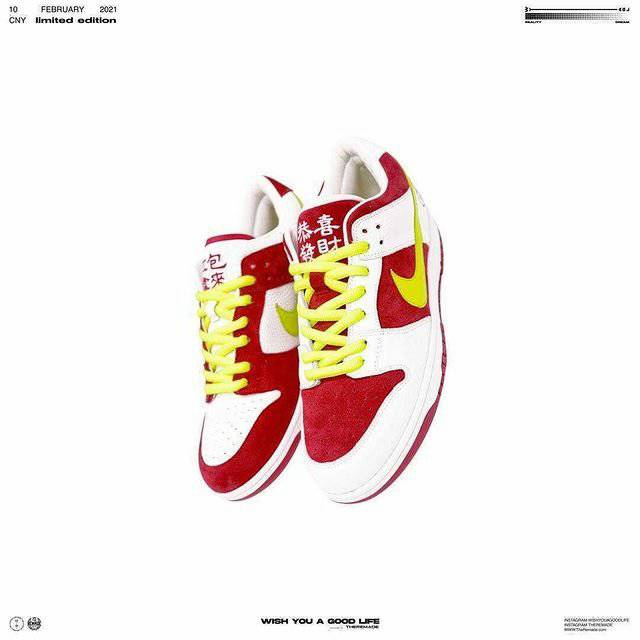
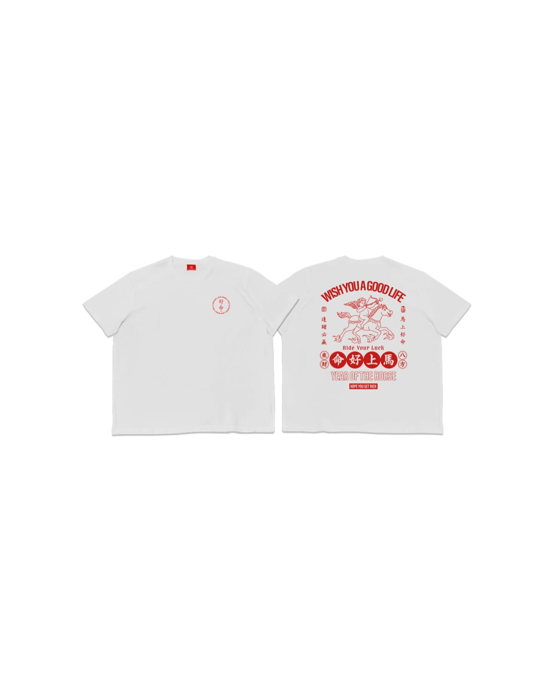
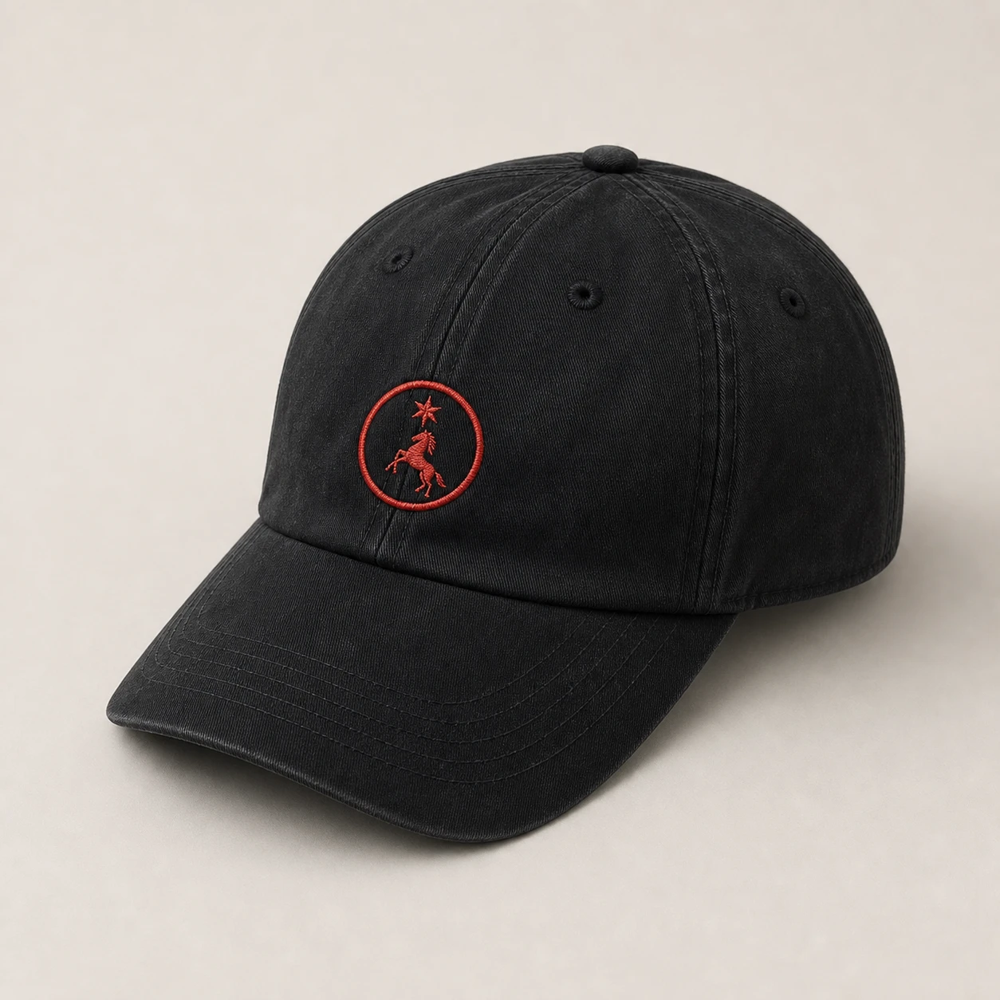

Featured
Kowloon After Dark low-top sneakers
$64
One of the Pillar 4 pages. Classification and the full inventory are on the Pillar 4 overview.
Pillar 4 的其中一頁。元件分類與完整總表在 Pillar 4 總覽。
Purpose
用途
Canonical 64px sticky app topbar — brand logo left, semantic nav with a sliding highlight pill + mega-dropdown groups, and a right action cluster (theme · search · notifications · avatar). This is the real shipped topbar (.app-topbar, injected by sidebar.js); the markup below is a static mirror. It is the single persistent topbar on every product page, injected by sidebar.js at #sidebar/#topbar. Nav order follows the sitemap; mega-dropdowns group IP Bank / E-Shop / Fans sub-routes. Avoid a second nav bar — promote new global actions into __actions. D220 (2026-08-24) retired the shell language toggle; D221 (same day) revised D220 and brought it back; D222 (same day) withdrew D221's split into two independent states — the account-menu dropdown carries an expandable "Default language" row (see the account-dropdown demo under NavigationMenu). Language is a single concept with three entry points: settings.html, this account menu, and login.html — all three change the same value, which is both the interface language and the language new content is written in.
標準 64px sticky app topbar — 品牌 logo 靠左、語意 nav 帶滑動 highlight pill 與 mega 下拉群組,右側 action cluster(主題 · 搜尋 · 通知 · 頭像)。這是真正出貨的 topbar(.app-topbar,由 sidebar.js 注入);下方為靜態鏡像。它是每個產品頁唯一固定的 topbar,由 sidebar.js 注入 #sidebar/#topbar。Nav 順序依 sitemap;mega 下拉把 IP Bank／E-Shop／Fans 子路由分組。別放第二條 nav bar — 新的全域動作 promote 進 __actions。D220（2026-08-24）曾把 app shell 的語言切換退場；同日 D221 修訂 D220、以新形式回復；同日 D222 撤回 D221 拆成兩個獨立 state 的做法——帳戶選單有一列可展開的「預設語言」（見 NavigationMenu 底下的帳戶下拉 demo）。語言是單一概念，三處入口——settings.html、這個帳戶選單、login.html——改的都是同一個值，這個值同時是介面顯示語言與建立內容的輸入語言。
Relationships
元件關係
.app-topbar__link / --group / __dropdown); icon buttons = .btn .btn--icon; bell / search / theme glyphs = Icon. Avatar stays topbar-owned.nav 項目＋下拉 = NavigationMenu(.app-topbar__link / --group / __dropdown);icon 按鈕 = .btn .btn--icon;bell／search／主題字符 = Icon。頭像仍為 topbar 自有。Rendered preview
視覺展示
Nav item states (link / group · default / hover / current / open) and the mega-dropdown are documented on the composed NavigationMenu molecule — not duplicated here. Icon-button states live with the Button atom.
nav 項目狀態(link／group · default／hover／current／open)與 mega 下拉,文件在它組成的 NavigationMenu molecule,此處不重複。icon 鈕狀態歸 Button atom。
Do & Don't
該做與別做
--background so dark-mode translucency stays opaque over the hero.--background,深色半透明在 hero 上才不會透。sidebar.js.sidebar.js 的單一定義。Behavior details
行為細節
| State狀態 | Selector選擇器 | Change變化 |
|---|---|---|
| default預設 | .app-topbar | Sticky, --card fill, bottom 1px hairline, z-index:50sticky、--card 填色、底部 1px hairline、z-index:50 |
| link hover / activelink hover／active | :hover / [aria-current="page"] | Text → --foreground; the shared highlight pill slides under it (--muted)文字 → --foreground;共用 highlight pill 滑到其下(--muted) |
| group open群組展開 | [aria-expanded="true"] | Chevron rotates 180°; .app-topbar__dropdown[data-state="open"] fades + slides inchevron 轉 180°;.app-topbar__dropdown[data-state="open"] 淡入+滑入 |
| scrolled (dark)捲動(深色) | .app-topbar.is-scrolled | Dark mode only: frosted blur + slight darken so a hero photo doesn't bleed through僅深色:霧化模糊+略暗,避免 hero 照片透出 |
| mobile (≤900px)mobile(≤900px) | @media | Bar wraps, __nav hidden (JS handles compact nav)bar 換行、__nav 隱藏(JS 處理精簡 nav) |
Class API (CSS classes — Props/API N/A, static prototype)
Class API(樣式類別) (CSS classes — 無 Props/API,靜態原型)
| Class / modifierClass／修飾子 | Effect效果 |
|---|---|
.app-topbar / __brand / __brand-logo | 64px sticky bar / brand link / 24px SVG wordmark64px sticky bar／品牌連結／24px SVG wordmark |
__nav / __link (+ --group) / __nav-highlight | Semantic nav list / nav item / mega trigger / sliding highlight pill語意 nav list／nav item／mega 觸發／滑動 highlight pill |
__dropdown (+ --mega / --right) / __dropdown-option | Panel + variants / option row (icon + title + sub)面板+變體／選項列(icon + 標題 + 子標) |
__actions / __icon-btn (+ __badge-dot) / __avatar | Right cluster / 36px icon button (+ unread dot) / 32px avatar右側 cluster／36px icon 按鈕(+未讀點)／32px 頭像 |
__search-menu / __search-panel / __search-input | Search trigger + dropdown panel + input搜尋觸發 + 下拉面板 + 輸入 |
Token usage (→ Pillar 2 Role)
Token 使用 (→ Pillar 2 Role)
--card — bar fill; --border — bottom hairline + dropdown edge--card — bar 填色;--border — 底部 hairline + 下拉邊--muted — nav highlight pill + icon-btn hover + dropdown-option hover--muted — nav highlight pill + icon-btn hover + 下拉選項 hover--foreground / --foreground-muted / --muted-foreground — brand / links / sub-labels--foreground / --foreground-muted / --muted-foreground — 品牌／連結／子標籤--primary — unread __badge-dot; --background — dropdown panel fill (opaque over hero)--primary — 未讀 __badge-dot;--background — 下拉面板填色(在 hero 上維持不透明)--radius-md / --radius-lg / --radius-pill · --shadow-card · --duration / --easing · --font-ui--radius-md / --radius-lg / --radius-pill · --shadow-card · --duration / --easing · --font-ui<header class="app-topbar" id="sidebar"></header>
<script src="js/sidebar.js?v=r2.2"></script> <!-- injects brand + nav + actions -->
<!-- rendered structure -->
<header class="app-topbar">
<a class="app-topbar__brand"><svg class="app-topbar__brand-logo">…</svg></a>
<nav><ul class="app-topbar__nav">
<li><a class="app-topbar__link" aria-current="page">Dashboard</a></li>
<li class="app-topbar__nav-group"><button class="app-topbar__link app-topbar__link--group">IP Bank</button>…</li>
</ul></nav>
<div class="app-topbar__actions">…</div>
</header>
ds-components/header.css (canonical; product pages load it via shared.css @import)
ds-components/header.css(canonical;產品頁透過 shared.css @import 載入)
Purpose
用途
Global product frame: .app, .main, sticky navigation, page body, and optional Footer. In Sidebar mode, the gray shell holds navigation while .main becomes one continuous white route page with a rounded top-left corner.
全站產品框架：.app、.main、sticky 導航、頁面 body，以及可選 Footer。Sidebar 模式下，灰色 shell 承載導航，.main 則成為一張左上圓角、連續完整的白色內容頁。
Relationships
元件關係
Rendered preview
視覺展示
A reusable app frame keeps chrome, page rhythm, and footer consistent.
Product pages place their own sections inside .page.
Specification
規格
| Source | shared.css |
| Anatomy | .app wraps navigation + .main; .main is the route page in Sidebar mode; .page owns content width and inner gutters (max-width: 1280px); the .page--narrow variant caps it at 1056px; Footer is optional. |
| Behavior / usage | Sidebar desktop: 16px top gap, right/bottom flush, 28px top-left corner. At ≤900px the shell treatment resets to a full-width page and both shells collapse their nav behind a burger (.app-nav-burger, 2026-07-25): the top row keeps only logo + burger (+ topbar action icons); tapping it drops the nav — and, in sidebar mode, the action rail — into a full-width stacked panel (max 60vh, scrolls) under the row. Open state = [data-nav-open] on the shell root, set by js/sidebar.js; the flag is cleared when the viewport returns above 900px. Inside the topbar panel the hover mega-dropdowns render open inline (indented) because hover is unusable by touch. Topbar mode is otherwise unchanged. .page--narrow (2026-07-20 / Q21) — opt-in width variant capping .page at 1056px, reserved for the Detail rail two-column layout: with a 300px meta rail on the right, a 1280px container leaves the left column too wide and the line length too long to read comfortably. Everything else stays at 1280px — Q21 first ruled the narrower width site-wide, then the same day reduced it to this variant after review. Consumers: product-detail.html, order-detail.html, bundle-detail.html, auction-detail.html. |
| Token usage | --surface-shell, --surface-page, --radius-shell, --space-shell-gutter, --background. |
| Classes | .app · .main · .page · .page--narrow · .app-nav-burger（≤900px 導覽收合鈕，header.css） |
| Evidence / usage | All non-wizard product pages. |
Purpose
用途
The two-column skeleton for a detail / edit page: an editable main column on the left (usually Tabs + tab panels) and a sticky read-only meta rail on the right that stays put across every tab. This section documents the shell itself — column ratio, sticky behavior, the single-column --full variant, responsive breakpoint. When to reach for this layout and what belongs in the rail are assembly rules, not component rules — see the Detail + persistent rail pattern card in Pillar 5.
詳情／編輯頁的兩欄骨架：左邊是可編輯主欄（通常是 Tabs ＋分頁面板），右邊是切到哪個分頁都不會消失的 sticky 唯讀 meta 欄。本節只講殼本身——兩欄比例、sticky 行為、單欄變體 --full、響應式斷點。「什麼時候該用這個版型、右欄該放哪些卡」屬於組合規則不屬於元件規則——見 Pillar 5 的 Detail + persistent rail pattern 卡。
Relationships
元件關係
Rendered preview (scaled-down schematic — left: two main blocks; right: two rail cards. Real proportions are 1fr / 300px.)
視覺展示 (縮小示意——左欄兩個區塊、右欄兩張小卡。實際比例為 1fr / 300px。)
✝ Stock split（分配長條）2026-09-11 退場：2026-09-10 建、給商品明細「當前庫存」卡講「這些庫存分給誰」；商品庫存分頁改版後，分配已由四塊 KPI 磚（在庫／單售可售／鎖給組合／補貨中）與逐組合表承擔，長條是第二遍（使用者裁示去蕪存菁）。stock-split.css 留墓碑。
✝ Stock split retired 2026-09-11: the allocation bar built on 2026-09-10 for the product-detail stock card. After the Stock tab redesign the four KPI tiles and the per-combination table already say who the stock is promised to; the bar repeated it. stock-split.css is a tombstone.
Do & Don't
該做與別做
.detail-main keep its min-width: 0 so a wide table or long string can't blow the grid open..detail-main 的 min-width: 0，寬表格或長字串才不會把 grid 撐破。margin inside the rail — spacing is owned by the rail's gap, and Form section's sibling margin-top is deliberately zeroed here so the gap isn't doubled.margin——間距由右欄的 gap 決定，Form section 相鄰卡的 margin-top 已在此刻意歸零，避免間距變成兩倍。.detail-grid | Two-column grid minmax(0,1fr) 300px, --sp-16 gap, align-items:start兩欄 grid minmax(0,1fr) 300px、--sp-16 gap、align-items:start |
.detail-grid--full | Single-column variant — grid collapses to minmax(0,1fr) and .detail-rail goes display:none. For a tab whose panel already carries the full status (repeating it in the rail is duplication) or whose content needs the whole page width. The consumer's tab-switching logic decides when to apply it; the component never inspects the current tab. A tab running under --full must not depend on anything the rail was carrying.單欄變體——grid 收成 minmax(0,1fr)、.detail-rail 改 display:none。用於「該分頁內容已自帶完整狀態，右欄再放一次等於重複」或「內容需要整頁寬度」的分頁。何時掛由 consumer 的分頁切換邏輯決定，元件層不判斷當前是哪個分頁。跑在 --full 下的分頁不可依賴原本放在右欄的資訊。 |
.detail-main | Main column; min-width: 0 stops long content from bursting the grid主欄；min-width: 0 防止長內容撐破 grid |
.detail-rail | Right column — flex column, --sp-24 gap, position: sticky; top: --sp-24右欄——flex column、--sp-24 gap、position: sticky; top: --sp-24 |
| Nested overrides巢狀覆寫 | Inside the rail: .form-section margin zeroed; the adjacent-outlined margin-top rule zeroed (it would stack on top of the flex gap and double the spacing); .form-section__head bottom margin tightened 24 → --sp-12 because rail cards are short右欄內：.form-section margin 歸零；相鄰 outlined 卡的 margin-top 規則歸零（否則會疊在 flex gap 上、間距變兩倍）；.form-section__head 下間距由 24 收成 --sp-12，因為右欄卡較矮 |
| Page container頁面容器 | Expects .page.page--narrow (1056px) — at the default 1280px the 300px rail leaves the main column too wide to read comfortably; the variant exists for this layout需搭配 .page.page--narrow（1056px）——預設的 1280px 配上 300px 右欄會讓主欄行長過長；該變體就是為這個版型而存在 |
| Responsive響應式 | ≤1100px collapses to a single column and the rail drops sticky, falling in below the main column≤1100px 收成單欄、右欄取消 sticky，改排在主欄之後 |
Token usageToken 使用: --sp-16 · --sp-24 · --sp-12
Consumers採用頁: product-detail.html (applies --full on the Pricing & stock tab)（「定價與庫存」分頁掛 --full）, order-detail.html (read-only order summary main + buyer-info rail, no tabs)（唯讀訂單摘要主欄＋買家資訊右欄，無分頁）, bundle-detail.html (2026-07-27 · Overview / Sales settings / Members; rail = listing settings + read-only bundle summary; Members tab applies --norail)（2026-07-27 · 總覽／銷售設定／成員；右欄＝上架設定＋唯讀組合概況；成員分頁掛 --norail）, auction-detail.html (2026-07-27 · Overview / Bids / Auction info; rail = read-only auction status; Bids tab applies --norail)（2026-07-27 · 總覽／出價／拍賣資訊；右欄＝唯讀競標狀態；出價分頁掛 --norail）
ds-components/detail-rail.css
Purpose
用途
Reusable product-page heading block: H1, supporting copy, and optional action cluster. Eyebrow was retired; title + sub are the source of page identity.
產品頁共用標題區：H1、輔助文字、可選動作列。Eyebrow 已退役；頁面身分由 title + sub 承載。
Relationships
元件關係
Rendered preview
視覺展示
Track gross revenue, net revenue, pending payouts, and tax documents in one place.
Figures on this page are prototype sample data.
With a key visual on the left (__lead + __media)標題左邊放主視覺（__lead ＋ __media）
150 numbered slots, one item each
Sep 12, 2026 · 2:00 PM · Doors open 1:30 PMEslite Xinyi, Taipei
Specification
規格
| Source | page-intro.css |
| Anatomy | Optional crumb (with optional back button) + title + lede (supporting copy, optional help link) + optional action cluster + optional page footnote. |
| Behavior / usage | Default / with actions; mobile title resolves to 32px; eyebrow pattern is retired. Back button (2026-08-02) — the 10 detail pages put .page-crumb__back (a .btn.btn--icon-circle.btn--sm wrapping chevron-left) as the first child of the crumb and add .page-crumb--back, which switches the crumb row to flex so the button sits on the baseline row. It is a real <a> pointing at the crumb's parent level, not history.back(): arriving from a bookmark or shared link leaves no history to pop, and a link keeps cmd-click / copy-address working. Two deviations from the plain atom are deliberate and scoped to this consumer: the crumb's a { color: inherit } would otherwise paint the glyph brand-orange and draw a hover underline under the SVG, so .page-crumb .page-crumb__back restores the standard --muted-foreground → --foreground icon-button pairing; and it runs frameless (background: transparent; border: 0, 2026-08-02 user ruling) — dropping only the frame would leave the atom's --muted fill, which shows as a grey disc in dark mode and disappears entirely against the light-mode white page, so the same button would look like two different things per theme. At rest it is just the chevron; the circle returns on hover via the atom's --accent background. The gap to the first crumb is --sp-16 rather than --sp-10 for the same reason: with no visible edge, the empty box around the glyph stops reading as space. Hidden under html[data-embed] (shared.css) because the detail-sheet overlay already carries its own "Back to X" — two back controls in one view force the user to work out which one goes where, and the crumb's is a full-page navigation that would swap the iframe while the overlay stays open. The action cluster is for controls that change data only (2026-07-31 ruling) and wraps (flex-wrap: wrap) if a wide control is placed there. Contextual help goes in .page-intro__lede as .page-intro__help — an inline accent link after the last sentence; it cannot be nested inside __sub because applyI18n replaces that node's innerHTML on language switch. Help button consumers (2026-11-02, D507 user ruling) — .page-intro__help (outline button with a CSS arrow, direct child of .page-intro) appears only on the Fan roster fans-crm.html as 「認識粉絲系統」; no other page carries it. .page-note is the page-level footnote (bookend to .page-crumb) for whole-page disclaimers. Top alignment + stacked sub (2026-08-31 user ruling) — .page-intro__lead aligns its children to flex-start, not flex-end: the 2:3 key visual is taller than the text block, so baseline alignment pushed the badges and title down and left a gap above them. .page-intro__sub--stack puts each <span> child of the sub on its own line, for consumers whose sub carries two different kinds of fact (when vs. where) — run together on one line, a long venue name decides the wrap point and the reader has to regroup the sentence. Each line opens with a .ztor-icon naming its kind (calendar / map-pin), styled inline at 15px the same way .data-list__meta .ztor-icon is — the icon is the shortest possible label for that line, cheaper than repeating the words "Starts" and "Venue". |
| Token usage | --font-display, --foreground-muted, --muted-foreground, --primary, page rhythm. |
| Classes | .page-intro · __title · __lede · __sub · __sub--stack · __help · __actions · .page-crumb · .page-crumb--back · .page-crumb__back · .page-note |
| Evidence / usage | Projects · My IP · IP Market · E-Shop · Events · Fans CRM · Earnings · Settings · detail pages. Back button on all 10 detail pages: Auction · Brand campaign · Bundle · Event · Fan · IP · Order · Pickup · Product · Project. |
Purpose
用途
Horizontal tab bar with a hairline underline and orange active accent, paired with .tab-panel one-at-a-time switching. Use to switch between sibling views of one page section: Earnings (Overview / Transactions / Payouts / Tax), E-Shop, Projects status, Fans CRM views. Avoid for disclosure of optional detail — use Accordion.
水平 tab bar，帶 hairline 底線與橘色 active 點綴，搭配 .tab-panel 一次顯示一個面板的切換。用於在同一頁面區段的同層視圖之間切換：Earnings（Overview / Transactions / Payouts / Tax）、E-Shop、Projects 狀態、Fans CRM 視圖。揭露可選的細節別用 — 改用 Accordion。
Relationships
元件關係
Rendered preview (tab bar + active panel)
視覺展示 (tab bar + active 面板)
.tab-panel--active — the panel paired with the active "Overview" tab; it swaps when another tab is selected.↑ .tab-panel--active — 與 active「Overview」tab 配對的面板;切到別的 tab 時會換成對應面板。Disabled (2026-10-16, D433): <button disabled> or aria-disabled="true" — label drops to --locked-field-ink, cursor not-allowed, hover doesn't brighten. The consuming page still writes one line saying why, right where the tab is.
停用（2026-10-16，D433）：<button disabled> 或 aria-disabled="true"——字退到 --locked-field-ink、游標 not-allowed、hover 不變亮。消費頁仍要在分頁旁就地寫一句為什麼不能點。
+ count rows × interaction states; active = orange underline.主視圖切換——plain 與 + count 兩列 × 互動狀態；active＝橘色底線。| default | :hover | --active | :focus-visible | :disabled | |
|---|---|---|---|---|---|
| plain | |||||
| + count |
Brand pill variant (.tabs--brand — soft orange active fill instead of the underline; available opt-in for a type switch wanting brand colour without a saturated block)
品牌 pill 變體 (.tabs--brand — 以淡橘 active 填色取代底線；可選用於想要品牌色但不搶眼的類型切換)
Short underline variant (.tabs--underline-short — base gray divider off, active underline shortened + centered to ~text width instead of full-width; separator left to the consuming context, e.g. a downward toolbar shadow. E-Shop F3 type switch, Figma node 671-2337/671-2295)
短底線變體 (.tabs--underline-short — 關閉灰色基準底線、active 底線縮短置中為約文字寬（非滿版）；分隔線交由使用情境提供（如向下的工作列陰影）。E-Shop F3 類型切換，對齊 Figma node 671-2337/671-2295)
Underline hugs the label (.tabs--underline-label — opt-in, pairs with --underline-short. The active underline spans only the label span's width, excluding a trailing .tabs__item-count. Since 2026-07-26 this is the standard recipe for every .list-toolbar primary tab bar — projects / my-ip / e-shop / events all use .tabs.tabs--underline-short.tabs--underline-label.tabs--count-plain, no per-page variation (e-shop has no counts, but still carries the same class set). Only works when the label is wrapped in a child element — tabs whose label is direct <button> text keep the full-item underline. Hard rule (user ruling, 2026-07-31): this pair may only live inside the 58px filled .list-toolbar shell — the underline is drawn against the container's bottom edge, so with no shell it becomes an orange dash floating under the label with nothing to sit on. For a tab bar with no shell use .tabs--card or the base .tabs hairline.)
底線只等標籤寬 (.tabs--underline-label — opt-in，搭 --underline-short。active 底線只等「標籤 span」的寬，不含尾隨的 .tabs__item-count。2026-07-26 起，這組是所有 .list-toolbar 主軸分頁的標準配方——projects／my-ip／e-shop／events 一律 .tabs.tabs--underline-short.tabs--underline-label.tabs--count-plain，不各留一套（e-shop 沒有計數，仍照寫同一組 class）。只在標籤包在子元素裡時有效——標籤為 <button> 直接文字的分頁維持整條 item 底線。鐵律（2026-07-31 使用者裁決）：這一組只能裝在 .list-toolbar 那個 58px 實色殼裡——底線是照容器下緣畫的，沒有殼就變成浮在標籤下方一截無所依附的橘線。要一排沒有殼的分頁，改用 .tabs--card 或 base .tabs 的 hairline。)
<button> (composes the Button atom); E-Shop F3 status filter. filter-tabs.css. 2026-08-28 ztorUI reskin (Wave 2b): the active state across all variants (base grey / --brand orange tint / --source per-item tint) is unified into one recipe — neutral glass shell (--ztu-glass-bg + backdrop-filter: blur(var(--ztu-blur-glass))) + self-glowing text (--ztu-orange-hi + double text-shadow) + a 26px blur(4px) bloom under the shell (::after, two radial gradients), box-shadow: none, no underline. Colour is expressed only via var(--dot, …) now — --source passes its own colour per item, everything else falls back to brand orange with the same computed result. The count is a plain, dimmer number (--muted-foreground) beside the label — no bubble, no fill; active counts take the orange tint (2026-10-12).次級、較輕量的狀態篩選 pill 列，帶即時數量——置於主 Tabs 的下一行（主→次層級）。每顆 pill 是 <button>（組合 Button atom）；E-Shop F3 狀態篩選。filter-tabs.css。2026-08-28 ztorUI 換裝（Wave 2b）：所有變體（base 灰／--brand 橘 tint／--source 逐項染色）的已選態統一收成同一配方——中性玻璃殼（--ztu-glass-bg ＋ backdrop-filter: blur(var(--ztu-blur-glass))）＋字自體發光（--ztu-orange-hi ＋雙層 text-shadow）＋殼底 26px blur(4px) 光暈（::after 兩層徑向漸層），box-shadow: none、無底線。顏色一律走 var(--dot, …)——--source 逐項帶自己的色，其餘落回品牌橘，computed 結果不變。計數是標籤旁的平鋪數字、比標籤字暗一階（--muted-foreground），不畫泡泡與底色；已選的計數跟著橘色（2026-10-12 使用者裁示）。| default | :hover | :focus-visible | --active | |
|---|---|---|---|---|
| pill + count |
.filter-tabs--brand opt-in — soft orange active fill + orange label/count, bubble-less counts; pair with underline (not pill) type tabs (E-Shop F3). Base stays grey elsewhere..filter-tabs--brand 選用變體——淡橘 active 填底＋橘色標籤/數字、數字不加泡泡；要搭底線式（非 pill）類型 tab（E-Shop F3）。其他頁預設維持灰底。| default | --active | |
|---|---|---|
| brand |
.filter-tabs--legend (2026-09-01) — legend-as-filter for chart cards. Every item keeps the plain dot + text look; the active one drops the glass shell, text glow and bottom glow. Selection is signalled by dimming the rest (opacity .4, .7 on hover), and the group is right-aligned. Dimming only kicks in once a specific series is picked (caller adds .is-filtered) — with "All" selected every line is drawn, so dimming the others would contradict the chart..filter-tabs--legend（2026-09-01）——圖表卡的「圖例即篩選」。每一項都維持「色點＋文字」的預設樣子，已選那項把玻璃殼、字光與底部光全部收掉；選中的訊號改由未選的變淡承擔（opacity .4，hover 回 .7），整組靠右。變淡只在真的挑了某一條時才發生（呼叫端掛 .is-filtered）——選「全部」時每一條線都畫著，把其餘調淡會與畫面相反。| State | 狀態 | Default (All) | 預設（全部） | Filtered | 已挑一條 |
|---|---|---|---|---|---|
| Group | 整組 |
.filter-tabs--source opt-in — the active pill takes its own item's colour, passed per-button as --dot, plus an optional leading .filter-tabs__dot. Same 12% tint recipe as --brand, but each item tints with the colour it represents, so the selection matches the series it filters. Earnings F5 revenue-source filter (each source's colour is shared by its chart line and the "Revenue by source" list dot). Items with no colour of their own (e.g. "All") take --primary..filter-tabs--source 選用變體——active pill 取該項自己的顏色，由每顆按鈕以 --dot 傳入，並可加前置色點 .filter-tabs__dot。淡底配方與 --brand 相同（12% 填底），但每項用它所代表的顏色上色，讓「選了什麼」與「篩掉了哪條線」顏色一致。用於 Earnings F5 收入來源篩選（每個來源的顏色同時用在趨勢線與「收入來源分布」清單色點）。本身沒有顏色的項目（如「全部」）用 --primary。| default | active | |
|---|---|---|
| All（brand orange） | ||
Co-creation（--chart-2） |
||
OTT（--chart-3） |
||
Licensing（--status-error） |
Do & Don't
該做與別做
--active tab + matching .tab-panel--active in sync.--active tab 與對應的 .tab-panel--active 同步。.tabs__item-count for record counts..tabs__item-count。<button> tabs.<button> tab 留著原生按鈕邊框。--brand (orange) filter-tabs rows on the same page — pick one per surface; keep count badges in sync via JS.--brand（橘）兩種篩選列，一個畫面擇一；數量徽章用 JS 與清單同步。Behavior details
行為細節
| State狀態 | Selector選擇器 | Change變化 |
|---|---|---|
| default預設 | — | Color --muted-foreground, transparent 2px bottom border顏色 --muted-foreground，透明的 2px 底框 |
| hoverhover | .tabs__item:hover | Color → --foreground顏色 → --foreground |
| activeactive | .tabs__item--active | Color --foreground + --primary bottom border顏色 --foreground + --primary 底框 |
| focusfocus | button.tabs__item:focus-visible | 2px solid var(--primary) outline2px solid var(--primary) 外框 |
Class API (CSS classes — Props/API N/A, static prototype)
Class API（樣式類別） （CSS classes — 無 Props/API，靜態原型）
| Class / modifierClass／修飾子 | Effect效果 |
|---|---|
.tabs / .tabs__item / --active | Flex tab bar / tab / active (foreground + orange underline)Flex tab bar／tab／active（foreground + 橘色底線） |
.tabs__item-count | Optional count pill in --muted可選的數量 pill，置於 --muted |
.tabs--brand | Opt-in pill variant — soft --primary active fill, no underline; for a primary type switch that opts in. Leaves default .tabs unchanged elsewhereopt-in pill 變體 — 淡 --primary active 填色、無底線；供選用的主類型切換。其他頁的預設 .tabs 不受影響 |
.tabs--underline-short | Opt-in modifier — base gray divider off, active underline shortened + centered (var(--sp-12) inset each side) instead of full-width; separator left to the consuming context. E-Shop F3 type switchopt-in 修飾子 — 關閉灰色基準底線、active 底線縮短置中（兩側各 var(--sp-12) 內縮）取代滿版；分隔線交由使用情境提供。E-Shop F3 類型切換 |
.tabs--underline-label | Opt-in, pairs with --underline-short — active underline spans only the label span, excluding a trailing .tabs__item-count. Requires the label wrapped in a child element. Standard for every .list-toolbar tab bar since 2026-07-26. 2026-07-31: may ONLY be used inside that shellopt-in，搭 --underline-short — active 底線只等標籤 span 寬、不含尾隨 .tabs__item-count。需標籤包在子元素裡。2026-07-26 起為所有 .list-toolbar 主軸分頁的標準配方。2026-07-31 起只准用在那個殼裡 |
.tabs--count-plain | Opt-in — removes the count pill fill and padding; plain text uses --muted-foreground. Standard for every .list-toolbar tab bar since 2026-07-26opt-in — 移除計數 pill 的填色與內距；文字改用 --muted-foreground。2026-07-26 起為所有 .list-toolbar 主軸分頁的標準配方 |
.tab-panel / --active | Hidden panel / shown panel隱藏面板／顯示面板 |
.filter-tabs / __item / __item--active / __count | Secondary status-filter pill row (wrapping) / pill button / selected（soft --muted fill）/ count badge (JS-driven) — filter-tabs.css次級狀態篩選 pill 列（可換行）／pill 按鈕／選取（淡 --muted 填底）／數量徽章（JS 驅動）— filter-tabs.css |
.filter-tabs--source / .filter-tabs__dot | Opt-in — active pill tinted with the item's own --dot colour (12% fill + coloured label) + optional 8px leading colour dot; colourless items (All) fall back to --primary (Earnings F5)選用 — active pill 以該項自己的 --dot 上色（12% 填底＋同色標籤）＋可選 8px 前置色點；本身無色的項目（全部）退回 --primary（Earnings F5） |
.filter-tabs--brand | Opt-in — soft --primary active fill + orange label/count, bubble-less counts (E-Shop F3)選用 — 淡 --primary active 填底＋橘色標籤/數字、數字無泡泡（E-Shop F3） |
Token usage (→ Pillar 2 Role)
Token 使用 （→ Pillar 2 Role）
.tabs--underline-short/--underline-label's active ::after underline is now a glowing bar: 5-stop length-wise gradient (--ztu-orange-hi) + --radius-pill + 3-layer outer glow, one tier quieter than --ztu-accent-glow; base .tabs__item--active border-bottom unaffected.tabs--underline-short／--underline-label 的已選 ::after 底線改成發光燈條：五段長度方向漸層（--ztu-orange-hi）＋ --radius-pill ＋ 三層外光暈，比 --ztu-accent-glow 安靜一階；base 的 .tabs__item--active border-bottom 不受影響--primary — active underline (base) + focus ring--primary — active 底線（base）+ focus ring--foreground, --muted-foreground — active/hover vs idle--foreground、--muted-foreground — active/hover 對 idle--border — tab-bar hairline--border — tab bar hairline--muted — count pill; --radius-pill--muted — 數量 pill；--radius-pill--font-ui--font-ui<nav class="tabs" role="tablist"> <button class="tabs__item tabs__item--active" role="tab" aria-selected="true">Overview</button> <button class="tabs__item" role="tab">Transactions <span class="tabs__item-count">214</span></button> </nav> <nav class="filter-tabs" role="tablist"> <button class="filter-tabs__item filter-tabs__item--active" role="tab">All status <span class="filter-tabs__count">24</span></button> </nav>
ds-components/tabs.css · ds-components/filter-tabs.css
Purpose
用途
Stack of collapsible items; each is a full-width trigger with a rotating chevron over a height-animated content panel (FAQ pattern). Use for collapsible Q&A / disclosure lists where only some items are open at a time. Avoid when all content must be visible at once, or when each section is a full navigable view — use Tabs.
一疊可收合的項目；每個都是全寬的 trigger，帶旋轉 chevron，下方是高度動畫的內容面板（FAQ pattern）。用於可收合的 Q&A／揭露清單，且同時只展開部分項目。所有內容需一次可見、或每個區段是完整可導覽的頁面時別用 — 改用 Tabs。
Relationships
元件關係
Rendered preview (open and closed items)
視覺展示 (展開與收合項目)
Funds settle after a T+7 dispute window, then move to your payout balance.
Yes — bundle licenses in a single checkout from the IP Bank.
| default | :hover | :focus-visible | [data-state=open] | |
|---|---|---|---|---|
| trigger |
Do & Don't
該做與別做
data-state="open" on the item to drive chevron + content height.data-state="open" 來驅動 chevron + 內容高度。display:none — the transition relies on max-height.display:none 做動畫 — 轉場靠 max-height。Behavior details
行為細節
| State狀態 | Selector選擇器 | Change變化 |
|---|---|---|
| closed收合 | — | max-height:0, overflow hidden, chevron uprightmax-height:0、overflow hidden、chevron 朝上 |
| hoverhover | .ztor-accordion__trigger:hover | Trigger text → --foreground-mutedTrigger 文字 → --foreground-muted |
| focusfocus | :focus-visible | 2px solid var(--ring), 4px offset2px solid var(--ring)、4px offset |
| open展開 | [data-state="open"] | Chevron rotates 180°; content expands to 320pxChevron 旋轉 180°；內容展開至 320px |
Class API (CSS classes — Props/API N/A, static prototype)
Class API（樣式類別） （CSS classes — 無 Props/API，靜態原型）
| Class / modifierClass／修飾子 | Effect效果 |
|---|---|
.ztor-accordion / __item | Column container / row with hairline dividers + data-state直欄容器／帶 hairline 分隔線的列 + data-state |
.ztor-accordion__trigger / __chevron | Full-width 16px button / 16px rotating caret全寬 16px 按鈕／16px 旋轉箭頭 |
.ztor-accordion__content | Overflow-hidden, height-animated panelOverflow-hidden、高度動畫的面板 |
Token usage (→ Pillar 2 Role)
Token 使用 （→ Pillar 2 Role）
--border — item dividers--border — 項目分隔線--foreground / --foreground-muted / --muted-foreground — trigger / hover / chevron--foreground / --foreground-muted / --muted-foreground — trigger／hover／chevron--ring — focus outline--ring — focus 外框--font-ui, --font-body; --duration, --easing--font-ui、--font-body；--duration、--easing<div class="ztor-accordion__item" data-state="open"> <button class="ztor-accordion__trigger" aria-expanded="true" aria-controls="faq-1">…</button> <div class="ztor-accordion__content" id="faq-1"><p>…</p></div> </div>
ds-components/accordion.css
Purpose
用途
The one rule for vertical space between sibling blocks: the container owns the gap, children never add margins. Before this existed every page solved it its own way (.mt-16, inline margins, a local gap), so some places stuck together and others drifted apart — the same role with three answers. Child margins also break on the first/last item and on conditionally hidden blocks: a hidden block leaves its margin behind, a gap does not. Default --sp-18; --tight is --sp-12 for小 blocks that belong to one thought, --loose is --sp-24 for sections that genuinely part ways. Override per case with --stack-gap on the container, never on the children. Not for horizontal layout, and not for form fields — those keep the 16px .field rhythm settled in Q6.
同層區塊之間的垂直間距只有一條規則：間距由容器承擔（gap），子元素不各自加 margin。這支元件出現之前每一頁各自解（.mt-16、inline margin、自己的 gap），結果有的地方黏在一起、有的地方鬆掉，同一個角色三種答案。子元素加 margin 還會在「第一個／最後一個」與條件隱藏的區塊上出錯——被隱藏的那一塊仍把 margin 留在原地，gap 不會。預設 --sp-18；--tight（--sp-12）給同一件事的小塊，--loose（--sp-24）給語意分家的大段落。個案覆寫在容器上寫 --stack-gap，不要改子元素。不用於橫向排列；表單欄位之間也不用（那是 .field 的 16px 節奏，Q6 已裁決）。
Rendered preview (default · tight · loose)
視覺展示 (預設 · 密集 · 寬鬆)
.stack（--stack-gap，預設 --sp-18）· .stack--tight（12）· .stack--loose（24）· .stack--bento（16）。.settings-section 內建同一套（settings.css），所以設定分區裡放兩張以上的卡不必再自己補間距。Use .stack--bento when the stack sits inside one bento column — it matches bento’s own gap, so the grid doesn’t read as two mismatched rhythms (16 across, 18 down)..stack--bento 用在「這一疊卡住在 bento 的某一欄」時：值對齊 bento 自己的 gap，否則同一個網格上「左右 16、上下 18」，讀起來像對不準的兩套節奏。
ds-components/stack.css
Purpose
用途
Dense row for settings and integrations: left label/hint stack, right value/control/action. This is one of the highest reuse patterns in R 2.2.
設定與整合頁的資訊密集列：左側 label/hint，右側值／控制項／動作。這是 R 2.2 復用次數最高的 pattern 之一。
Relationships
元件關係
Rendered preview
視覺展示
Specification
規格
| Source | settings.css |
| Anatomy | Left label/hint stack + right value/control/action slot. A text control in the right slot takes .settings-row__control (max 260px on desktop). |
| Behavior / usage | Default / final row with no divider; control states are delegated. Responsive (2026-09-14): under 900px a row holding .settings-row__control stacks label over a full-width control; rows with narrow controls (switch / badge / button / value) stay side by side. .settings-layout collapses to one column and .settings-nav becomes a horizontal scroll row at the same breakpoint (same as .section-nav-layout). |
| Token usage | --border, --foreground-muted, --muted-foreground. |
| Classes | .settings-row · __label · __hint · __value · __control |
| Evidence / usage | Settings · integration rows · payout settings. |
Purpose
用途
Wizard progress strip — a thin track with a brand-gradient fill plus step labels below. Owns progress display; the wizard body owns form content. Use it for any multi-step create flow. The segmented version’s width follows its step count (each step up to 200px, so two steps ≈ 400px, centered; four or more fill the header as before).
Wizard 進度條——一條細軌＋品牌漸層填充＋下方步驟標籤。負責進度呈現；表單內容由 wizard body 負責。任何多步驟建立流程都用它。分段版的寬度跟著步數（每段最多 200px，兩步驟約 400px 置中；四步以上照舊填滿標題列）。
2026-10-15 — mobile: at ≤720px the last --segmented label is clipped like the others — the mobile wizard bar gives the stepper the full width, so there is no free space on the right to run into. The __state line (done / not done) is hidden on mobile: at ~50px per step it only shows clipped fragments, and the segmented track already says which steps are done.
2026-10-15 手機：≤720px 時 --segmented 的最後一格也照其他格裁切——手機版頂列的進度條已經滿寬，右邊沒有空白可以延伸。__state 狀態小字在手機收起：一格約 50px 只會被裁成殘字，完成與否由分段軌道的實色／淡色表達。
2026-10-15 — last label capped: the last --segmented label may still borrow space to its right, but only up to --progress-stepper-tail (max-width: calc(100% + tail), then an ellipsis). The consumer sets the tail; the default is 0. The wizard bar hands over its progress column’s right padding (28px, 0 when the bar stacks at ≤1024px), so the text never crosses into the save status — at 768/1024px “PREVIEW & PUBLISH” used to overlap “Saved · just now”. The full label goes into the step’s title (syncStepTitles() in create-event).
2026-10-15 最後一格限寬：--segmented 最後一格仍可往右借空間，但最多借 --progress-stepper-tail（max-width: calc(100% + tail)，超出照樣刪節號）；tail 由消費端給、預設 0。Wizard 頂列把進度欄的右內距（28px，≤1024 兩排時 0）交給它，字不會越過進度欄畫進儲存狀態——原本 768／1024 寬英文「PREVIEW & PUBLISH」壓在「Saved · just now」上。完整字寫進標籤的 title（建立活動的 syncStepTitles()）。
2026-10-15: segmented labels clip to their own cell (min-width: 0; overflow: hidden, the text span ends in an ellipsis) — a nowrap label longer than one cell used to paint over its neighbour (“TICKET TYPES & TICKETS” over “BUNDLES”). A safety net only: copy should still fit one cell (the English step name became “Tickets”).
2026-10-15：分段版標籤在自己那一格內裁切（min-width: 0; overflow: hidden，文字以刪節號收尾）——nowrap 的標籤比一格長時原本會畫進下一格疊字（「TICKET TYPES & TICKETS」壓到「BUNDLES」）。只是保險，文案仍要寫得進一格（英文步驟名同輪縮成「Tickets」）。
Relationships
元件關係
Rendered preview
視覺展示
Segmented variant (--segmented, 2026-08-10)
分段變體 （--segmented，2026-08-10）
One segment per step, so the seams land exactly on the step boundaries. Solid = done, tinted = the step you are on, empty = not reached. Set --steps (how many steps are visible) and --at (current step, 1-based) alongside --progress (the completed share). Without the modifier the track stays one continuous bar, so existing consumers are untouched. The optional __state line under each name spells the status out — a bar length alone cannot say which step is finished.
一步一段，縫的位置就是步驟分界。實色＝已完成、淡色＝你在這一步、空的＝還沒到。用法是在容器上設 --steps（看得到幾步）與 --at（現在第幾步，1 起算），--progress 仍是已完成的比例。沒加這個修飾類的消費頁維持一條連續長條、行為不變。名稱下方選配的 __state 把狀態直接寫出來——光靠一條軌道的長度說不出「哪一步做完了」。
Specification
規格
| Source | progress-stepper.css |
| Anatomy | Track + gradient fill (width = --progress) + step labels. |
| Label states | default / --done (clickable) / --current. Since 2026-08-10 the label is a flex box with its own padding so the hit area matches what looks clickable; --done and --current take an --accent hover, future steps do not. [hidden] is restored explicitly because display:flex beats the UA rule. |
--anystep | Optional; every step reachable (2026-08-10, per user: "these steps should all be clickable") — by default only --done and --current get pointer + hover, because the default click handler only allows going back to a completed or current step and moving forward goes through Next; a future step that looks pressable but isn't is worse than one that plainly isn't. Adding --anystep declares that the consuming page's click handler accepts a jump to any step, so the clickable affordance opens up for all labels. Both halves are required: the class alone gives you "looks pressable, does nothing"; the handler alone gives you "works, but nobody can tell". Skipped steps are already [hidden] and unaffected. First consumer: create-event. Second consumer: create-product (2026-09-23, D317) — two segments ("Details" / "Preview & publish"), step 1's done-state reads the existing "Ready to sell?" checks (no new rule), and both directions of the anystep click still go through the same validation gate (step→step 2 = the form's primary button; step 2→step 1 = return to form). Third consumer: create-bundle (2026-09-23, D321, mirrors D317) — same two segments ("Details" / "Preview & publish"), step 1's done-state reads the existing gateWhy() gate (no new rule); the anystep click goes through the same gate in both directions (step 1→2 = createBtn.click(); step 2→1 = exitStage()). |
| Track | 3px (was 6px until 2026-08-10). --segmented splits it into one segment per step using --steps; --at marks the current segment. Current segment is neutral, not a diluted brand tint (2026-08-10, per user: "the translucent colour looks broken on step 1") — it used to be --primary at 28%, which over the dark track (#161718) mixes to a muddy brown that reads as an orange that failed to render, most visibly on step 1 where it is the only thing on the track. It is now color-mix(--foreground-muted 45%, transparent), so hue belongs to "done" alone and brightness only answers "where am I". The fill no longer animates on --segmented (2026-08-10, per user: "a bit of orange shows up on step 1") — the continuous track animates its width because the transition itself carries meaning (sliding from 40% to 60%); on a segmented track the fill only ever rests on a segment boundary, so the 350ms in between briefly paints a "half-filled segment" that never actually exists. It was most visible stepping back to step 1 (0% complete): a sliver of orange lingered at the track's left edge as the fill animated down to nothing, reading as a rendering glitch. transition: none and border-radius: 0 (the track's own pill radius + overflow:hidden already round both ends; a second rounding on a near-zero-width box draws a hairline at 2× DPR). |
| Label / track alignment | 2026-08-10, per user ("the step titles don't line up with the bar") — the base label row is space-between: first label flush left, last flush right, the rest sharing the slack, each as wide as its own text. The track is equal segments. Two different divisions can never agree. --segmented therefore lays its labels out on grid-template-columns: repeat(var(--steps), minmax(0,1fr)): one cell per segment, so the text starts exactly at the segment's edge and the hover fill covers exactly that segment. Non-segmented consumers keep space-between. Hover range corrected 2026-08-10 (per user: "the hover range looks broken") — the first attempt kept the base inline padding and cancelled it with an equal negative margin. The text lined up, but the hover box then ran 8px past its segment on each side, so the fill and the segment above it disagreed and the highlight read as half a column off. The negative margin is gone: the grid cell is already one segment wide, the label fills it, and the hover fill lands exactly on that segment (measured at 1440px, 5 steps: every label box matches its segment's x and width to 0px). Inline padding stays (2026-08-10, per user: "it needs left padding") — alignment is the box's job, guaranteed by the grid; the text then uses that padding to keep 8px off the box edge, or it would sit flush against the hover fill and read as cramped. Box flush to the segment, text breathing inside the box: the two do not conflict. Vertical padding is unchanged, so the hit area keeps its height (45px). |
| Token usage | --gradient-brand, --muted, --fs-12, --muted-foreground/muted. |
| Classes | .progress-stepper · __track · __fill · __labels · __label · --done · --current · --segmented · --anystep · __state |
| Evidence / usage | create-event · create-project · register-ip (all migrated; legacy .stepper retired 2026-06-23) · create-product (2026-09-23, two-segment --anystep, D317) · create-bundle (2026-09-23, two-segment --anystep, D321). |
Purpose
用途
Focused create-flow template without the app topbar: a floating frosted top-bar capsule (back + title, Stepper, save status), body content, and a bottom action bar that is the same floating frosted capsule (2026-10-28, UI-CHANGES 404; replaced the 2026-09-23 same-colour mask).
無 app topbar 的專注建立流程模板：浮起的磨砂頂列膠囊（返回＋標題、Stepper、儲存狀態）、內容 body、同一種浮起磨砂膠囊的底部動作列（2026-10-28，UI-CHANGES 四百零四，取代 2026-09-23 的同色遮色片）。
2026-10-15 — mobile top bar (≤720px): the bar becomes two rows — back/title (shrinks, ellipsis) with the actions on the right, then the progress stepper full width. Outer gutter drops to 16px; the autosave status collapses to its dot (text hidden with font-size:0, still read by screen readers; the manual --button variant keeps its label). The three-column track used to need ~500px, so the whole page scrolled sideways by 128px at 375px.
2026-10-15 手機版頂列（≤720px）：改兩排——第一排返回／標題（可縮、ellipsis）＋右側工具，第二排進度條滿寬。外距收成 16px；自動儲存狀態收成只剩狀態點（font-size:0 藏字、讀屏仍讀得到；手動儲存的 --button 變體保留文字）。原本三欄軌道約需 500px 寬，375px 時整頁橫向溢出 128px。
2026-10-15 — mid-width top bar (≤1024px): the two-row layout now starts at 1024px instead of 720px. In the three-column grid the middle column was only 30–70px per step at 768/1024px, so step labels ran into the save status on the right. Between 721 and 1024px the gutters and the save-status text stay as on desktop; only ≤720px tightens the gutter and collapses the status to its dot.
2026-10-15 中寬頂列（≤1024px）：兩排版型的起點由 720 改到 1024。三欄 grid 在 768／1024 寬中欄一格只剩 30～70px，步驟標籤畫進右欄的儲存狀態。721～1024 的外距與儲存狀態文字維持桌機版，≤720 才收外距、把儲存狀態收成圓點。
2026-09-23 — top bar and footer redesign (UI-CHANGES 74). The top bar now looks like the events list toolbar (List toolbar): one floating capsule with rounded corners — the same glass fill, 24px blur, 1px --border, --shadow-card + --shadow-edge-top and --radius-xl. The capsule is drawn by .wizard__top::before and fills that element's content box, so when the header gets a second row (create-bundle's section tabs) the same capsule wraps both rows. The ring around it is fully transparent: content scrolling up shows around the capsule and blurs through it. The footer is no longer a separate surface. The content sheet runs to the bottom of the viewport (no bottom radius, no drop shadow), and the footer is laid over it as a mask in the sheet's own colour and dot pattern (background: inherit + background-attachment: fixed), with a 56px fade on its top edge. The sheet reserves the footer's height as padding-bottom, which partials/wizard-chrome.js measures into --wizard-foot-h. The bottom-bar half was superseded on 2026-10-28 (UI-CHANGES 404): the footer is now the same floating frosted capsule as the header.
2026-09-23 頂列與底列改版 （UI-CHANGES 七十四）：頂列改成跟活動清單工作列（List toolbar）同一種樣子——一顆浮起的圓角膠囊，材質照抄（玻璃底、24px 模糊、1px --border、--shadow-card＋--shadow-edge-top、--radius-xl）。膠囊由 .wizard__top::before 畫、大小＝它的內容框，所以頂列多一排（建立組合包的分節分頁）時同一顆膠囊包住兩排。膠囊外圍一圈完全透明，內容往上捲會從四周露出來、捲進膠囊底下變模糊。底列不再是另一塊顏色：內容卡延伸到視窗底（沒有下緣圓角與投影），底列是一片跟內容卡同色、同點陣的遮色片疊在上面（background: inherit＋background-attachment: fixed），上緣 56px 漸層淡出。內容卡用 padding-bottom 留出底列高度，高度由 partials/wizard-chrome.js 量成 --wizard-foot-h。底列這一半已於 2026-10-28 被取代（UI-CHANGES 四百零四）：底列改成與頂列同一種浮起的磨砂膠囊。
Relationships
元件關係
This section owns the shell (top bar / body / sticky action bar). When to use the wizard, step count, draft-save and Review rules = Pillar 5 · Multi-step wizard.
本段只擁有殼（頂列／內文／固定動作列）。什麼時候用 wizard、步數、草稿與 Review 規則＝Pillar 5 · Multi-step wizard。
Rendered preview
視覺展示
Preview dock (.preview-dock__rail + .preview-dock-toggle, added 2026-10-28)
預覽欄 （.preview-dock__rail＋.preview-dock-toggle，2026-10-28 新增）
In create-event, create-product and create-bundle the fan-page preview (.fan-phone) is no longer a column beside the form. It is a full-height column on the right edge (16px from top, bottom and right, 340px wide); while it is open the whole content area (top-bar capsule, form, bottom bar) narrows to make room. The toggle is an eye icon button right after the save status button in .wizard__top-actions; the column has a ✕ at its top-right. Open by default, remembered in localStorage. Only at ≥1100px; narrower keeps the old stacked preview and hides the toggle. Steps without a dockable preview (e.g. the ticket step, whose right rail is the income calculator) leave everything as it was. Behavior: partials/preview-dock.js, which sets data-preview (open/closed) and data-preview-active on .wizard.
建立活動、建立商品、建立組合包的粉絲頁預覽（.fan-phone）不再是表單旁邊的一欄，而是貼右緣的整高欄（上、下、右各留 16，寬 340）；開啟時整個內容區（頂列膠囊、表單、底列）往左收窄讓位。開關是 .wizard__top-actions 裡儲存狀態鈕右邊的眼睛圖示鈕，欄右上角有 ✕。預設開啟，開關狀態記在 localStorage。只在 ≥1100px 啟用；更窄時維持舊的疊在上方，開關鈕收起。沒有可停靠預覽的步驟（例如票務那一步，右欄是收入試算）一切照舊。行為在 partials/preview-dock.js，它在 .wizard 上設 data-preview（open／closed）與 data-preview-active。
Save status button (.wizard__save-status, merged 2026-10-28)
儲存狀態鈕 （.wizard__save-status，2026-10-28 合併）
One <button> in .wizard__top-actions replaces the old “Saved · just now” text plus the separate “Save as draft” button (autosave already saves, so the second control repeated the first). Resting it shows the status; on hover (except while saving) the dot turns into a save icon and the label into “Save now”; one click saves, no menu. Leaving is the back arrow. Four states via data-state. Failed and offline have no trigger in the prototype yet — they only appear here.
頂列右側只有一顆 <button>，取代舊的「已儲存 · 剛剛」文字＋另一顆「儲存為草稿」按鈕（已經自動儲存，第二個控制只是重複第一個）。平常顯示狀態；滑過（儲存中除外）狀態點換成存檔圖示、文字改「立即儲存」，點一下就存，沒有選單。離開靠返回箭頭。靠 data-state 分四態；失敗與離線目前原型沒有觸發點，只在這裡出現。
data-state="saved" — Resting. Quiet; the system already saved it.
data-state="saved"——平常狀態，安靜；系統已經自動存好。
data-state="saving" — Spinner while saving (about a second). Hover does nothing, to avoid a double submit.
data-state="saving"——存檔中轉圈（約 1 秒）。滑過不變，避免重複送出。
data-state="failed" — Red. The one state that needs the user to act: hover shows “Save now”, click retries.
data-state="failed"——整顆變紅。唯一需要使用者動手的狀態：滑過改寫「立即儲存」，點一下重存。
data-state="offline" — Yellow dot (offline). Retries by itself when the network is back; hover shows “Save now”.
data-state="offline"——黃點（離線）。網路恢復會自動重存；滑過改寫「立即儲存」。
data-state="saved" + .is-hover (hover) — status dot becomes a save icon, label becomes “Save now”.
data-state="saved"＋.is-hover（滑過）——狀態點換成存檔圖示、文字改「立即儲存」。
data-state="saving" + .is-hover (hover) — unchanged.
data-state="saving"＋.is-hover（滑過）——不變。
data-state="failed" + .is-hover (hover) — status dot becomes a save icon, label becomes “Save now”.
data-state="failed"＋.is-hover（滑過）——狀態點換成存檔圖示、文字改「立即儲存」。
data-state="offline" + .is-hover (hover) — status dot becomes a save icon, label becomes “Save now”.
data-state="offline"＋.is-hover（滑過）——狀態點換成存檔圖示、文字改「立即儲存」。
The focused frame removes global chrome and keeps the user inside the create flow.
.wizard__bottom--end (2026-08-09) — use it when the footer has no secondary action on the left, so the button group sits flush right. Ten wizard footers were each carrying the same inline style="justify-content:flex-end"; this modifier replaces all of them.
.wizard__bottom--end （2026-08-09）——footer 沒有左側次要動作時用它，讓按鈕組靠右收齊。此前十個 wizard footer 各自寫著同一段 inline style="justify-content:flex-end"，本輪收成修飾類一次換掉。上面第二個示範就是它。
Footer hint — primary action disabled (.wizard__bottom-hint, added 2026-07-30)
Footer 原因行——主動作停用時 （.wizard__bottom-hint，2026-07-30 新增）
Shown only while the primary action is disabled — a disabled button doesn't explain itself. Toggled with .hidden, so it takes zero space when the step is unblocked.
只在主動作被停用時出現——灰掉的按鈕自己不解釋為什麼。靠 .hidden 切換，解除擋關時整行不佔版面。
Continue is disabled until at least one complete bundle exists.
One complete bundle is needed to continue.
Specification
規格
Body modifiers (.wizard__body--form/--narrow/--wide — promoted 2026-07-09 from 7 create-flow pages' inline overrides)
Body 修飾類 （.wizard__body--form/--narrow/--wide——2026-07-09 自 7 個建立頁的頁內覆寫 promote）
.wizard__body--form | Top padding --sp-72 (72px), replacing per-page hardcoded values. Used by all 7 create-flow pages.頂距 --sp-72（72px），取代逐頁寫死。7 個建立頁皆掛 |
.wizard__body--narrow | Content max-width 1000px — create-auction / create-bundle內容寬 1000px——create-auction／create-bundle |
.wizard__body--mid | Content max-width 1140px — create-product (2026-07-16: narrow→wide→mid; just fits the multi-variant + limited per-variant table beside the 320px preview column, tighter than wide; floor ≈1100px)內容寬 1140px——create-product（2026-07-16：narrow→wide→mid，剛好容下多選項＋限量逐選項組合表在 320px 預覽欄旁完整展開，比 wide 收斂；floor≈1100px） |
.wizard__body--wide | Content max-width 1240px — create-campaign內容寬 1240px——create-campaign |
.wizard__bottom-hint | Footer reason line next to the primary action (added 2026-07-30). Visual weight matches .field__hint; shown only while the primary action is disabled, toggled via .hidden (no reserved space when hidden). First consumer: create-project.html's Bundles step.主動作旁的 footer 原因行（2026-07-30 新增）。視覺與 .field__hint 同級；只在主動作被停用時出現，靠 .hidden 切換（隱藏時不佔版面）。首個消費頁：create-project.html 的回饋套組步驟。 |
create-event / create-project / register-ip only take --form (stay at the 820px base width). Known un-promoted divergences: funding-simulate.html (32px top padding) and funding-test/create-campaign.html (44px) keep their own page-inline overrides.
create-event／create-project／register-ip 只掛 --form（維持基底 820px 寬）。已知分岔未收：funding-simulate.html（頂距 32px）、funding-test/create-campaign.html（44px）仍留頁內覆寫。
| Source | shared.css |
| Anatomy | Sticky header: a transparent ring (--wizard-top-pad-t/-x/-b) around a frosted capsule drawn by .wizard__top::before (back + title/sub · stepper · save status; an optional second row such as section tabs sits in the same capsule, split by a --border-soft line) + body content + a bottom action bar drawn as the same frosted capsule by .wizard__bottom::before, with the fade-out moved to ::after (2026-10-28; before that a same-colour mask with a 56px top fade from 2026-09-23, a full-width glass band, and an in-flow lighter footer under a rounded sheet). |
| Behavior / usage | Draft / back-next / review; no global topbar. Header shadow separates the sticky header from scrolling content (ref. Figma 720:1763). 2026-07-16: the top-left back arrow (.wizard__back) and title block (.wizard__top-titlewrap) merge into a single back button — .wizard__top-lead is a pill surface that fills with --accent on hover (--radius-lg 16px, padding 8/16/8/8, ref. Figma 781:4142); clicking the title also goes back. The real button stays the inner .wizard__back, whose stretched ::after (inset:0) extends the hit-area and focus ring over the whole lead — no consumer-page markup change. 2026-07-24: the header's three tracks are minmax(var(--wizard-lead-min), 1fr) minmax(0, 820px) minmax(min-content, 1fr) — the left track gets a 180px floor. With two plain 1fr sides the title block (min-width:0 + ellipsis) could shrink to 0 while the right side could not, so a narrow viewport collapsed the left track and the title overflowed onto the stepper; the floor makes the stepper absorb the squeeze instead. Wide layouts are unchanged. |
| Token usage | --card, --surface-page (via --wizard-mask), --ztu-glass-bg, --ztu-blur-glass, --border, --border-soft, --shadow-card, --shadow-edge-top, --radius-xl, display type. |
| Classes | .wizard · __top · __top-bar · __body(--form/--narrow/--wide) · __bottom · __bottom-actions |
| Evidence / usage | create-project · create-product · create-event. |
Purpose
用途
2026-11-02 (UI-CHANGES 439). The three-step create flow for a vault (name → add media → who can open), a full-screen .wizard laid over the page with the same top bar, segmented stepper and bottom bar as create-project and create-event. Step 1 creates a draft, so leaving any time keeps it as a draft. Steps 2 and 3 reuse the page’s content pool and Vault open. The demo below is the same markup made non-fixed.
2026-11-02（UI-CHANGES 四百三十九）。庫房的三步建立流程（取名 → 放內容 → 誰開得了），全畫面 .wizard 蓋在頁面上，頂列、分段進度條、底列與建立專案、建立活動相同。第 1 步按繼續就建立草稿，隨時離開都留在草稿。第 2、3 步重用頁面的內容容器與 Vault open。下方展示是同一份標記改成不固定定位。
Relationships
元件關係
Step 2 of 3
第 2 步
Pre-publish checklist (spec 5.1.5.2 §4.4 "Ready to sell?") — items show done (check) / pending (empty circle); footer banner counts what's left and turns green when ready. Reused across create flows.
上架前就緒檢查（規格 5.1.5.2 §4.4「Ready to sell?」）— 已備齊打勾、未備齊空心圈；卡底 banner 統計還差幾項，備齊轉綠。建立流程共用。
Footer chip variant (__chip beside the footer CTA — muted while pending, --ready turns green; hover/focus pops the full card as __pop tooltip)
Footer chip 變體 (__chip 貼 footer 主動作——未備齊 muted、--ready 轉綠；hover/focus 浮出完整卡當 __pop tooltip)
Anchor variant (__anchor wraps the footer CTA itself — hover or focus the button to pop the checklist; no standing chip. create-product, 2026-08-31)
Anchor 變體 (__anchor 直接包住 footer 主動作——hover／focus 那顆按鈕才浮出檢查卡，footer 不再常駐 chip。create-product，2026-08-31)
.readiness · __head / __title / __list / __item(.--done) / __mark / __banner(.--ready)。done 態用 --status-success。兩種掛法二選一，兩者都用同一個 .readiness__pop（hover/focus tooltip，內含 .readiness 卡）：.readiness__chip(.--ready)＝footer 常駐指示 chip（create-auction／publish-work）；.readiness__anchor＝直接包住主動作按鈕、沒有常駐 chip（create-product，2026-08-31）。__anchor 的 hover 目標是外層容器而不是按鈕本身——未備齊時按鈕是 disabled，部分瀏覽器不送滑鼠事件給 disabled 元素。消費頁：create-product／create-auction／publish-work（作品上架送出前的就緒檢查，只在最後一步顯示）。
ds-components/readiness.css
Compact "label + x/y count + progress bar" showing an asset's current completeness (§7.7 current, not the frozen value). Near-full turns green via --ready. Used on IP Market cards.
緊湊的「標籤 + x/y 計數 + 進度條」，顯示資產目前完整度（§7.7 current 值，非凍結值）。近滿時以 --ready 轉綠。用於 IP Market 卡片。
.completeness · __head / __label / __count / __track / __fill；近滿 .completeness--ready 轉 --status-success。寬度由 __fill inline width 控制。
ds-components/completeness.css
Purpose
用途
A 5px horizontal quantity bar that says "how much is left" at a glance — stock level, usage ratio. Always pairs with the exact figure next to it (e.g. "3 / 50"): the bar carries the feel, the number carries the truth, and neither substitutes for the other. Thinner and simpler than the Completeness meter, which owns its own label + count header; this one is bare track + fill and expects the surrounding card to supply the wording.
5px 高的水平量條，一眼讀出「還剩多少」——庫存水位、用量比例。一定要搭配旁邊的精確數字（例如「3 / 50」）：量條負責體感、數字負責精確值，兩者不可互相取代。比 Completeness meter 更細更簡單——那支自帶標籤＋計數表頭，本元件只有軌道＋填充，文字由外層的卡提供。
Relationships
元件關係
Rendered preview (both states — normal fill, and --low below the low-stock threshold)
視覺展示 (兩種狀態——正常填充，以及低於低庫存門檻的 --low)
Do & Don't
該做與別做
style="width:N%" on .stock-bar__fill — it is data, not styling, so it belongs to the consumer page, and the component sets no width of its own.style="width:N%" 寫在 .stock-bar__fill 上——那是資料不是樣式，屬於 consumer 頁；元件本身不預設寬度。--low; anything finer is a product rule.--low；再細的分級屬於產品規則。.stock-bar | Track — 5px tall, --muted fill, --radius-pill, overflow:hidden, --sp-8 vertical margin軌道——5px 高、--muted 底、--radius-pill、overflow:hidden、--sp-8 上下外距 |
.stock-bar__fill | Fill — --primary, full height; width comes from the consumer's inline style填充——--primary、滿高；寬度由 consumer 的 inline style 提供 |
.stock-bar__fill--low | Below the low-stock threshold — fill switches to --destructive低於低庫存門檻——填充改 --destructive |
Token usageToken 使用: --ztu-film (track — 2026-08-28 ztorUI reskin, was --muted)（track — 2026-08-28 ztorUI 換裝，原 --muted） · --primary · --destructive · --radius-pill · --sp-8
Consumers採用頁: product-detail.html (right-rail "current stock" card)(右欄「當前庫存」卡)
ds-components/stock-bar.css
Fan-side preview card — mirrors the storefront product / auction card, rendered live inside the create-flow preview panel. Empty fields show italic placeholders via .is-empty. 2026-07-31 user: __media turned portrait --img-portrait (was 4:3) — the create-flow hero slot is already 750×1125, so a landscape preview would crop the creator's just-uploaded portrait art into a strip; shared by product/auction/bundle/campaign create-flows and order detail.
粉絲端即時預覽卡— 鏡像商店端商品卡／拍賣卡，在建立流程預覽面板內即時渲染；未填欄位用 .is-empty 顯示斜體占位。2026-07-31 使用者：__media 改直式 --img-portrait（原 4:3）——建立流程的主圖槽已是 750×1125，橫式預覽會把剛上傳的直式圖切成橫帶；拍賣／商品／組合／集資建立流程與訂單詳情共用。
Rendered preview
視覺展示
.is-empty).填好與未填（.is-empty）兩種狀態。| filled | .is-empty (placeholder) | |
|---|---|---|
| product | Summer Tour Hoodie$48.00Zip hoodie from the 2026 tour. |
Summer Tour Hoodie$48.00Missing: description |
.badge; sits on the reused preview-panel. event-preview-card.css.建立活動即時預覽的粉絲視角活動卡（規格 5.1.6.1 §4.6 / §5.2.5）；類型徽章複用 .badge；坐在重用的 preview-panel 上。event-preview-card.css。| event | |
|---|---|
| card | Concert Midnight Echo LiveThe only Taipei date 3 ticket tiers |
.preview-card · __media / __body / __row / __name / __price / __desc；拍賣加 __dots / __meta / __cta；占位 .is-empty。
.event-preview-card（--landscape 切 16:9）· __poster / __type-tag / __body / __name / __meta(__meta-row) / __tickets；未填用 .is-empty（斜體 subtle）。面板重用 preview-panel.css。
ds-components/preview-card.css · ds-components/event-preview-card.css
Purpose
用途
The "form | preview" two-column layout for create flows: a left form column and a right sticky preview column (title + grey sub + live preview content). Replaces the old slide-out Preview panel; the card inside reuses Preview card. Every box inside the column (Preview card, Listing settings card) drops its 1px border and takes the floating-card treatment instead, so the right column matches the left column's form-section --outlined (2026-07-21). Used by create-product, create-bundle, create-auction and create-campaign. 2026-08-10: .preview-split--narrow — the right column drops from 320px/40 gap to 264px/24, taking the numbers straight from .wizard-split--narrow (what Create event already uses) so the two create flows do not sit side by side with one wide rail and one narrow one. First consumer: create-product; the other consumers keep the default width.
建立流程的「表單｜預覽」兩欄版面：左表單、右一條 sticky 預覽欄（標題＋灰副標＋即時預覽）。取代舊滑出式 Preview panel；欄內的卡重用 Preview card。欄內所有盒子（預覽卡、上架設定卡）都去掉 1px 邊框、改用浮起卡的填色＋陰影＋上緣光，與左欄的 form-section --outlined 一致（2026-07-21）。create-product、create-bundle、create-auction、create-campaign 使用。2026-08-10 新增 .preview-split--narrow：右欄由 320px／間距 40 收成 264px／間距 24，數值取自建立活動在用的 .wizard-split--narrow——兩個建立流程並排看時右欄本來一寬一窄，收斂成同一組數字、不另立第三種。首個消費頁＝create-product，其餘消費頁維持預設寬度。
Relationships
元件關係
Rendered preview
視覺展示
Specification
規格
2026-09-11 三個新修飾詞（首個消費頁＝電子商店 F5 商店預覽）：--toggle 可開關——沒 is-open 就單欄、右欄不佔位，由頁面的開關鈕切；--tall 預覽比視窗高時限高在視窗內自己捲（sticky 欄釘頂時下半截原本永遠看不到）——捲的是卡的內容而不是欄（同日使用者：「範圍底部不要破窗」：欄捲、卡比欄高，卡的下緣與圓角會被切在視窗外），實際高度由 partials/preview-col.js 依欄當下離視窗頂的距離寫成 --preview-col-max（純 CSS 算式只在釘住時對，欄在自然位置時會破窗）；--dim 分隔線（__head--rule）以下的內容區鋪畫布色 24% 暗膜（同日兩輪：「背景要暗一點點」→「標題那塊用原本的玻璃質感背景，內容那塊用現在的背景」），卡本體與標題列維持玻璃；內容區用負外距出血到卡邊、下緣跟卡的圓角。同輪 --phone 的欄寬改走 --preview-col-w（預設 270）：電子商店與商店設定 2026-09-12 起覆寫成 394、zoom 1（鏡像 1:1＝360＋卡內距 32＋邊框 2；前一天曾是 320／0.8），建立商品維持 270／0.75；--tall 的卡捲軸藏起（古典捲軸會吃掉 16px 把版型壓成 344）。
| Source | preview-column.css |
| Anatomy | .preview-split (on wizard__body) > .preview-split__form + .preview-col (sticky) > .preview-col__head (__title + __sub) + Preview card. |
| Behavior / usage | Right col 320px; sticky top via --preview-col-top (default 96px = header 80 + body pad 16); ≤1040px stacks + un-stickies. Card boundary: .preview-col .card and .preview-col .preview-card are set to border: 0 + --shadow-card, --shadow-edge-top so the right column reads the same as the left column's outlined form sections. Scoped to .preview-col — cards elsewhere keep the Q3 1px border. |
| Token usage | --fs-18, --type-title-24-*, --foreground-muted, --shadow-card, --shadow-edge-top. |
| Classes | .preview-split · .preview-split__form · .preview-col · .preview-col__head/__title/__sub |
| Evidence / usage | 4 pages, 7 boxes: create-product · create-bundle · create-auction (2 each — Preview card + Listing settings card) and create-campaign (Preview card only). |
Right-hand split panel holding the live preview card — not an overlay. Opened on demand by the create-flow top-bar Preview button: it takes layout on the right and compresses the wizard (body.preview-open), so the form stays visible and editable; no dim scrim. ✕ / Esc closes and restores. Shown here statically.
右側畫面分割面板，承載即時預覽卡——非浮層遮蓋。由建立流程頂部 Preview 鈕按需開啟：佔版面、把 wizard 壓窄（body.preview-open），表單仍可見可編輯，無變暗遮罩。✕／Esc 關閉復位。此處靜態展示。
Reused by E-Shop F5 “Store preview”: .preview-panel--inset compresses .main instead of the wizard. There it is toggleable, default-closed (opened from the F3 “Store preview” button; closed via a floating ✕ in the sheet’s top-right + Esc — spec F5 / D084) and runs headerless (no .preview-panel__head; the “商店預覽” label lives in the fan-store hero overline). On narrow screens (≤1100px) it falls back to a static block stacked below the list.
由 E-Shop F5「商店預覽」重用：.preview-panel--inset 壓窄的是 .main 而非 wizard。在該頁為可開關、預設關閉（由 F3「商店預覽」鈕開啟；關閉走 sheet 右上浮動 ✕＋Esc——spec F5／D084），且為 headerless（無 .preview-panel__head，「商店預覽」標題移進 fan-store hero overline）。窄螢幕（≤1100px）退化為靜態區塊堆疊在清單下方。
.preview-panel(.is-open) · __sheet / __head / __title / __body（__backdrop 保留 DOM 但 display:none，分割版無遮罩）。JS 同時切 .preview-panel.is-open 與 body.preview-open（後者把 .wizard 壓窄、.wizard__bottom 右移 --preview-w）；關閉鈕 / Esc 觸發。≤760px 改覆蓋。
ds-components/preview-panel.css
The fan-side creator page rendered inside every “See as fan” preview — shared by E-Shop F5 (Store preview), Store settings F1 and the detail-page preview panels (§6.7: one source, any difference is a defect). 2026-09-11 rebuilt as a mobile mirror of the real fan page (user supplied the live screenshot), the same move the product-page mirror made (§4.22g, D248): the layout and proportions are lifted from the fan app (375 viewport), the whole thing renders at zoom: 0.75 so the column is 270px, no phone bezel. Three things the user crossed out stay out: the app bar (menu / logo / search / cart / login), the bottom app tab bar, and the “demo scene” chip — those are the app shell, not this creator's page. The old bezel version with hero gradient, top fans, about and tab bar is retired.
每個「See as fan」預覽內呈現的粉絲端創作者頁，由 E-Shop F5（商店預覽）、商店設定 F1 與三個細節頁的預覽面板共用（§6.7 同源，差異即缺陷）。2026-09-11 依使用者提供的粉絲端實際畫面重做成手機版鏡像，做法與商品頁鏡像（§4.22g，D248）一樣：版型與比例照粉絲端（375 視窗）搬進來、整支 zoom: 0.75 顯示、欄寬 270px、不畫手機外框。使用者劃掉的三樣不進預覽：app bar（選單／logo／搜尋／購物車／登入）、底部 app 導航、「情境展示」浮標——那些是 app 外殼，不是這位創作者的頁面。舊版（手機外框＋hero 漸層＋頭號粉絲＋關於＋底部導航）整份退場。
Colors and spacing now use r2.3 tokens only — the old scoped --fst-* raw hex palette (25 raw values) is gone, so the fan-store raw-color exception in ds-pillars/1-foundation.md §1.5 no longer applies. Role mapping to the fan app: --foreground≈text-primary, --muted-foreground≈text-secondary, --ztu-film≈white-alpha-4, --primary≈yellow-500. Data: the persona picks avatar, name, role, follower count and bio; product cards ask ProductsStore when the page has it (name, price in the list's currency format, image), else demo values. Card order is fixed (CARD_IDS) so E-Shop can hide unlisted / hidden items by position.
顏色與間距只用 r2.3 token——舊版 scoped 的 --fst-* 寫死色盤（25 處裸色）整組退場，ds-pillars/1-foundation.md §1.5 那條 fan-store 裸色例外不再適用。角色對應到粉絲端：--foreground≈text-primary、--muted-foreground≈text-secondary、--ztu-film≈white-alpha-4、--primary≈yellow-500。資料：人格決定頭像、名字、身分、追蹤數與簡介；商品卡在頁面有載 ProductsStore 時問它（名稱、清單同一套幣別寫法的價格、圖），沒載用示範值。卡片順序固定（CARD_IDS），E-Shop 據此依上架／顯示狀態收起對應的卡。
Page tabs re-measured + sticky (2026-09-11, user: “the tab bar style differs from the original, and something pins to the top when you scroll”): .fan-store__nav now copies the fan app’s .glass-tabs — 48px pill, 4/10 padding, --ztu-film fill, --ztu-rim-soft rim, blur(8px) saturate(1.5); items 40px, 14px, no wrap (overflow scrolls, scrollbar hidden); active = --primary bold text over a faint orange top-edge gradient plus two orange inner highlights (the fan app’s --lg-fill-active / --lg-shine-active, expressed as color-mix on tokens). The nav lives in .fan-store__stick (position: sticky; top: 0); when partials/fan-store.js sees it hit the top of its scroll container it adds .is-pinned: a 24px avatar + bold 13px name row (.fan-store__minihead) grows in above the tabs and a ::before band (bleeds 12/16/24px, 70% --ztu-canvas → transparent, --ztu-blur-shell blur, bottom masked out) dims whatever scrolls underneath — the fan app’s .tabstick-host.is-pinned + .creator-minihead.
分頁列重量＋釘頂（2026-09-11，使用者：「指出的部分樣式和原本不同」「下滑的時候有東西置頂在上面」）：.fan-store__nav 改照粉絲端 .glass-tabs 量——48px 膠囊、padding 4/10、--ztu-film 底、--ztu-rim-soft 邊、blur(8px) saturate(1.5)；項目高 40、字 14、不換行（放不下橫捲、捲軸藏起）；選中＝--primary 粗體字＋只在頂端一線的淡橘漸層底＋左上／右下兩道橘色內光（粉絲端的 --lg-fill-active／--lg-shine-active，以 token 的 color-mix 表達）。分頁列住在 .fan-store__stick（position: sticky; top: 0）；partials/fan-store.js 看到它貼到捲動容器頂緣就加 .is-pinned：上方長出 24px 小頭像＋13px 粗體名字一行（.fan-store__minihead），底下一片 ::before 帶（出血 12/16/24、70% --ztu-canvas→透明、--ztu-blur-shell 模糊、下緣以 mask 淡出）把滑過的內容壓暗——即粉絲端的 .tabstick-host.is-pinned＋.creator-minihead。
Consumers (2026-09-11): E-Shop F5 (toggleable right column) and Store settings (right column, always on — the “See as fan” button and slide-out sheet were retired; user: “why does this look different from the E-Shop list page, and it duplicates the storefront card”). Both use the same card: preview-col--tall --dim + form-section--outlined + __head--rule, 320px column, mirror zoom 0.8.
消費頁（2026-09-11）：電子商店 F5（可開關的右欄）與商店設定（右欄常駐——「粉絲視角預覽」鈕與滑出側欄退場；使用者：「怎麼長得和電子商店的列表頁的不一樣，而且重複了」）。兩頁同一張卡：preview-col--tall --dim＋form-section--outlined＋__head--rule，欄 320、鏡像 zoom 0.8。
⚠ Follower count, social buttons (ztor / IG / Threads / X / TikTok), Join community, Unlock secrets, featured row, wishlist heart and the page tabs (Shop / Events / Ranks / Posts / Projects) are product-change proposals (ASSUMPTIONS UIA-026) — this preview only mirrors what the fan app already shows.
⚠ 追蹤數、社群圓鈕（ztor／IG／Threads／X／TikTok）、加入社群、彩蛋解鎖、精選商品列、收藏愛心與頁面分頁（商店／活動／排行榜／貼文／項目）為產品變更提案（ASSUMPTIONS UIA-026）——這裡只是把粉絲端已經長出來的樣子照搬。

Independent musician shipping merch, vinyl and digital drops from the studio — every order funds the next record. More

 New
New Limited
Limitedds-components/fan-store.css · partials/fan-store.js（window.ZTOR_PARTIALS.fanStore 是 getter，讀取當下才組樣板；注入 [data-fan-store-host]）。E-Shop F5 的容器＝.preview-split--phone.preview-split--toggle 右欄的 form-section--outlined（§4.22f Preview column）。Icons：share / gift / plus / heart / brand-instagram / brand-threads / brand-x / brand-tiktok；ztor 圓鈕內嵌 Ztor symbol path。
Purpose
用途
Inline hint icon with a hover / focus bubble — used for "incomplete item" hints in list rows. Pure CSS (opacity + rise on hover/focus-visible), no JS.
行內提示 icon，hover／focus 浮出泡泡 — 用於列表列的「未完成項」提示。純 CSS（hover／focus-visible 時淡入＋上浮），不用 JS。
Relationships
元件關係
Rendered preview (hover / focus the icon)
視覺展示 (hover／focus 圖示)
Specification
規格
| Source | shared.css |
| Anatomy | .tip wrapper (15px icon, cursor: help) + absolutely-positioned .tip__bubble. |
| States | hover / focus-visible = icon darkens to --foreground, bubble fades in and rises. |
| Token usage | --muted-foreground → --foreground · bubble surface/border/shadow tokens. |
| Classes | .tip · .tip__bubble |
| Evidence / usage | Projects rows / cards「未完成提示」（spec 5.1.2 F1）. |
Purpose
用途
Hover or focus any product row's "Status" or "Stock" cell in the E-Shop product list → a small floating info card. For multi-option or bundle rows, it lists every option combination's own stock count (bundle members flattened down to their own option combinations too). Promoted 2026-07-23 from user feedback — wanting the per-option breakdown visible without opening the Restock popup. Scope was widened the same day: asked why single-variant rows (zine, acetate, pin) didn't get it too — for those rows the card restates current stock (with its real health colour). It briefly also showed a computed low-stock threshold line, added then removed the same day on user instruction — the threshold logic (lowThr(), 10% of cap) still lives in the shared data layer for the Restock popup, it just isn't surfaced in this card anymore.
hover 或 focus 電子商店商品清單裡任何一列的「狀態」或「庫存」欄 → 浮出一張小卡。多選項或組合商品列會列出每個選項組合各自的庫存（組合商品連成員都攤到成員自己的選項組合）。2026-07-23 依使用者反饋 promote——想在不開補貨彈窗的情況下就看到逐選項的庫存。同一天擴大範圍：使用者追問「為什麼單一選項商品（zine、acetate、pin）沒有」——這些列改顯示「目前庫存」一行（照實際健康度上色）。中間曾短暫多顯示一行低庫存門檻，同一天使用者又指示拿掉——門檻換算邏輯（lowThr()，cap 的 10%）仍留在共用資料層給補貨彈窗用，只是這張浮卡不再顯示。
Relationships
元件關係
Why JS positions it, not pure CSS :hover
為什麼定位靠 JS、不是純 CSS :hover
The list scrolls under a sticky filter bar (E-Shop's .list-toolbar / .list-status-row). A row near the top of the viewport would have its popup covered by the sticky bar if it always opened upward; a row near the bottom would push the popup off-screen if it always opened downward. JS measures the trigger's getBoundingClientRect() on mouseenter/focusin, flips direction based on whether the row sits in the top or bottom half of the viewport, and sets position: fixed coordinates directly — plain CSS can't see viewport position to make that call.
清單捲動在一個有 sticky 篩選列的容器裡（電子商店的 .list-toolbar／.list-status-row）。固定往上開，viewport 上緣的列會被 sticky 列蓋到；固定往下開，viewport 下緣的列會把浮卡推出可視範圍。JS 在 mouseenter／focusin 量測觸發格的 getBoundingClientRect()，依列在 viewport 上半部或下半部翻轉開啟方向，直接設定 position: fixed 座標——純 CSS 看不到 viewport 位置，做不了這個判斷。
Rendered preview (static — hover state forced open for the demo; live pages position via JS on hover/focus)
視覺展示 (靜態展示——demo 直接強制顯示開啟狀態；實際頁面靠 JS 在 hover/focus 時定位)
1-axis multi-option (e.g. tee sizes)單軸多選項（如 tee 尺寸）
2-axis matrix, flattened (e.g. hoodie colour × size) — row badge is "Low Stock" → filtered to only the options that need restocking (2026-07-23)雙軸矩陣攤平（如 hoodie 顏色 × 尺寸）——列徽章是「急需補貨」→ 只留需要補貨的選項（2026-07-23）
M/Black (12), L/Black (8), M/Sand (5), L/Sand (20) are all healthy — omitted from the list entirely, not merely hidden.M/Black(12)、L/Black(8)、M/Sand(5)、L/Sand(20) 都健康——直接不在清單裡，不是只是隱藏。
Bundle, flattened to member × option combination組合商品攤到成員 × 選項組合
Single-variant (e.g. zine, acetate, pin) — one line restating current stock with its real health colour (2026-07-23: briefly showed a computed threshold line too, removed same day on user instruction)單一選項商品（如 zine、acetate、pin）——一行，重述目前庫存並照實際健康度上色（2026-07-23：中間曾短暫多顯示門檻行，同一天使用者指示拿掉）
--anchored (2026-09-22, D299) — store-settings discount-code list, "Applies to" cell: the count is the trigger, the card lists what the code is bound to (name in __qty ink, kind in __name ink). Absolutely positioned against the trigger instead of fixed — the list sits inside a glass wrapper whose backdrop-filter re-roots fixed descendants; JS only toggles --up for rows in the lower half of the viewport. Third consumer (2026-11-02, D505): the first Media Vault result tile — hover or focus it to see the four fan tiers as “claimed / total” (tier name in __name, figure in __qty); the tile itself carries tabindex="0" and Esc closes the card.--anchored（2026-09-22，D299）——商店設定優惠碼清單的「範圍」欄：件數是觸發格，浮卡列出這組碼綁了哪幾件（名稱用 __qty 的墨色、種類用 __name 的墨色）。改成貼著觸發格的絕對定位、不用 fixed——那張清單坐在玻璃外框裡，backdrop-filter 會把 fixed 子孫的參考框換掉；JS 只在列落在視窗下半時加 --up 往上開。第三個消費者（2026-11-02，D505）：媒體庫成效第一格——滑過或 focus 那一格，浮卡列出四個分級的「已／總」（分級名稱放 __name、數字放 __qty）；格子本身帶 tabindex="0"，按 Esc 收起。
Do & Don't
該做與別做
e-shop.row.low), filter the list down to just the options that need restocking — omit the healthy ones entirely rather than just de-emphasizing them.e-shop.row.low）時，清單只留需要補貨的選項——健康的選項直接不列，不是弱化顯示就好。title attribute on a cell that also carries .stock-tip — they compete on the same hover, stacking a browser-native tooltip on top of the custom popup (found on the acetate row's stock cell, removed 2026-07-23)..stock-tip 的儲存格上留原生 title 屬性——兩套 hover 提示會互搶，瀏覽器原生 tooltip 疊在自訂浮卡上面（acetate 列的庫存欄踩過，2026-07-23 移除）。data-i18n directly on .stock-tip — i18n.js's innerHTML swap would wipe the .stock-tip__pop child. Wrap the translatable text in its own <span data-i18n> sibling instead.data-i18n直接掛在 .stock-tip 上——i18n.js 的 innerHTML 覆寫會把子節點 .stock-tip__pop 一起清掉。可翻譯文字改包一層 <span data-i18n>手足。Specification
規格
| Source | stock-tip.css |
| Anatomy | .stock-tip (trigger cell, position: relative) > .stock-tip__pop (position: fixed card, role="tooltip"; position: absolute under .stock-tip--anchored; add .stock-tip--follow and JS writes its left/top so it opens at the mouse position and follows it — keyboard focus falls back to the anchored spot) > .stock-tip__row (.stock-tip__name + .stock-tip__qty, --low/--out modifiers colour the quantity). |
| States | default (closed) — opacity:0; visibility:hidden · .stock-tip.is-open (JS-added on mouseenter/focusin, removed on mouseleave/focusout) — popup fades in, position set inline by JS. |
| Behavior / usage | Content is pre-populated once per row on page load into both the status cell's and the stock cell's .stock-tip__pop — only the position is recomputed on every hover. Rows with option data (from the same PRODUCT_MATRIX/PRODUCT_VARIANTS/BUNDLE_MEMBERS the Restock popup reads) get the per-option breakdown; if the row's status cell contains [data-i18n="e-shop.row.low"] ("Low Stock"), that list is filtered to just the low/out entries before rendering (2026-07-23). Rows without option data (single-variant) get one line instead (2026-07-23, scope widened): current stock, colour reflecting row[data-status] — the option-health filter above doesn't apply to it. A low-stock threshold line was briefly shown here too; removed same day on user instruction (the threshold math still lives in the shared data layer for the Restock popup). |
| Token usage | --card (bg) · --shadow-float (E3, same rung as dropdown/readiness pops) · --radius-md · --foreground / --foreground-muted (label) · --status-warning / --status-error (quantity colour) · --fs-12 / --fw-medium / --lh-normal. |
| Classes | .stock-tip(--anchored · --up) · .stock-tip__pop · .stock-tip__row · .stock-tip__name · .stock-tip__qty(--low/--out) |
| Dependencies | None — plain CSS, no composed component. |
| Evidence / usage | e-shop.html — every row of the Products tab (zine/tee/hoodie/acetate/pin) and both rows of the Bundles tab. store-settings.html (2026-09-22, D299) — discount-code list "Applies to" cell when a code is bound to specific items (--anchored; count text refilled per language by the page since i18n has no {n} parameter). media-vault.html (2026-11-02, D505) — first result tile, four-tier claimed / total (--anchored; wired in js/media-vault.js wireTip()). |
Pattern: this card holds the shared dialog chrome every Modal shell instance reuses → Pattern：這張卡就是所有 Modal shell 實例共用的彈窗殼 → 5.1.8 Modal shell
Purpose
用途
Two-part payout flow: a page-side bank picker card grid (.payout-bank-*) on the Earnings · Payouts tab, plus the request-payout modal (.payout-modal backdrop + .payout-dialog shell with head / body / foot, amount input, summary and success view). Mounted from partials/payout-request-modal.js on earnings.html; the same dialog shell is reused by the F10 manual-entry modal (partials/manual-entry-modal.js).
兩段式撥款流程（spec §5.1.8）：Earnings · Payouts 分頁的頁面側銀行挑選卡格（.payout-bank-*），加上請款 modal（.payout-modal 背板＋.payout-dialog 外殼，含 head／body／foot、金額輸入、摘要與成功畫面）。由 partials/payout-request-modal.js 掛載；目前唯一 consumer 是 earnings.html。
2026-10-15 — footer on phones: at ≤640px the footer wraps; an explanation in the footer (__foot-note, or a .field__hint placed straight in the footer — e.g. the ticket dialog’s “Imported from bookyay — it can’t be deleted”) takes a full line above the buttons instead of being squeezed into a four-line sliver at 375px.
2026-10-15 手機頁尾：≤640px 時頁尾換行；頁尾裡的說明句（__foot-note，或直接放在頁尾的 .field__hint，例：單張門票彈窗「由 bookyay 帶入，不能刪除；要改請回 bookyay 改。」）佔滿一整行、排在按鈕上方，不再在 375px 被擠成四行窄條。
Relationships
元件關係
The dialog chrome here (.payout-dialog head / body / foot) is the project's canonical modal shell — reuse rules live in Pillar 5 · Modal shell. All four consumers (partials/payout-request-modal.js, partials/manual-entry-modal.js, partials/restock-modal.js, partials/pickup-session-modal.js) plus creators.html's inline create-creator form build fields from Field system / Form grid / Control row and the amount input from .amount-field--hero (2026-07-11) — the page-local .payout-field* / .payout-form-grid / .payout-inline-control / .payout-amount-* markup they used to hand-roll is gone everywhere; the classes have no remaining consumer and their rules were removed from payout-modal.css. The ticket edit dialog in create-event.html (Ticket tier card) also reuses this shell, and is the first consumer of the .payout-dialog__split layout below. Side width is --payout-split-side since 2026-08-10, defaulting to the original hard-coded 200px so that dialog is unchanged; create-event's Ticket setup sets 360px for its generated-ticket list, which cannot fit five fields in 200px — a variable rather than a second modifier, because the only difference is one number. .payout-dialog__split-side (2026-08-10, optional) makes the side column position: sticky with its own overflow-y: for dialogs where the left column is the settings and the right column is what those settings produce, a side column that scrolls away defeats the split. Its own max-height: 100% keeps a long result list scrolling inside the column instead of stretching the dialog; it reverts to static at ≤640px, where stacking already scrolls and sticking would cover what follows.
這裡的 dialog 殼（.payout-dialog 頭／身／腳）是本項目的 canonical modal 殼——共用規則見 Pillar 5 · Modal shell。全部四個 consumer（partials/payout-request-modal.js、partials/manual-entry-modal.js、partials/restock-modal.js、partials/pickup-session-modal.js）與 creators.html 內建的建立 creator 表單，欄位皆改用 Field system／Form grid／Control row，金額輸入改用 .amount-field--hero（2026-07-11）——這些檔案原本自刻的 .payout-field*／.payout-form-grid／.payout-inline-control／.payout-amount-* markup 已全數移除；這些 class 已無任何 consumer，規則也已從 payout-modal.css 移除。create-event.html 的票種編輯彈窗（Ticket tier card）也重用這個殼，是下方 .payout-dialog__split 版面的首個消費者。側欄寬度自 2026-08-10 起改吃 --payout-split-side，預設仍是原本寫死的 200px，所以那個彈窗行為不變；建立活動的「票務設定」把它設成 360px 裝生成的門票清單——一列五個欄位，200px 塞不下。用變數而不是再開一個修飾類，因為兩者的差別只有一個數字。.payout-dialog__split-side（2026-08-10 新增，選配）讓側欄 position: sticky 黏在頂端、自己 overflow-y 內捲：用在「左欄是設定、右欄是那些設定產生的結果」的彈窗，側欄跟著捲走就等於看不到結果，分欄也就白分了。側欄自己的 max-height: 100% 讓結果多時它內捲、而不是把整個彈窗撐長；≤640px 收單欄時自動退回 static（上下堆疊本來就跟著捲，黏著只會擋住下面的內容）。
Head sub-title and footer slots (2026-09-22, D311): .payout-dialog__head-titles + .payout-dialog__sub let the head carry a second line — the title says which thing the dialog is open on, the sub-title gives its context (the single-ticket dialog: ticket name above, date · venue below; with several dates, the ticket name alone does not say which one). In the footer, .payout-dialog__foot-note is the left slot for whatever is blocking Save ("N fields need fixing") and .payout-dialog__foot-actions is the right slot for the buttons: the foot is space-between, so two bare buttons get pushed to opposite edges, and the reason belongs on the same line of sight as the primary action. Dialogs with no sub-title and no blocking reason stay exactly as they were.
標題列副標與 footer 兩個槽（2026-09-22，D311）：.payout-dialog__head-titles ＋ .payout-dialog__sub 讓標題列多一行——標題回答「開在哪一件東西上」，副標補它的脈絡（單張門票彈窗：上面票名、下面場次日期・場地；多場次活動只看票名分不出是哪一場）。footer 的 .payout-dialog__foot-note 是左槽，放擋下儲存的理由（「N 個欄位待修正」）；.payout-dialog__foot-actions 是右槽，放按鈕群——foot 本來就是 space-between，只放兩顆裸按鈕會被推到兩端，而理由該跟主鈕站在同一條視線上。沒有副標、沒有擋關理由的彈窗維持原樣。
Rendered preview (dialog shown without the fixed backdrop; bank picker below)
視覺展示 (dialog 不含全螢幕背板直接展示；下方為銀行挑選卡)
2026/09/12 · Taipei Arena台北小巨蛋
Head with steps (.payout-dialog__head--steps, 2026-10-27): for a dialog filled in steps — title | segmented progress stepper (same as the create-event top bar) | close. Head padding stays the dialog standard; the extra top room is carried by the title and the stepper (each padding-top: --sp-6) so their tops share one line, and the close button's centre lands on the title's centre. First consumer: create-event “Add bundle”.
標題列帶步驟（.payout-dialog__head--steps，2026-10-27）：分步填寫的彈窗——標題｜分段進度條（同建立活動頂列）｜關閉。標題列內距維持彈窗標準，多的上方留白由標題與進度條兩塊各自帶（各 padding-top: --sp-6），兩塊頂端同一條線、關閉鈕中線對齊標題中線。首個消費者：建立活動「新增組合包」。
Split layout (.payout-dialog__split — 2026-08-09, first consumer = the ticket edit dialog in Ticket tier card: a main column of fields to fill in + a fixed 200px side column for view-only content like an image)
分左右欄 (.payout-dialog__split——2026-08-09，首個消費者＝Ticket tier card 的票種編輯彈窗：主欄放要填的欄位＋固定 200px 側欄放圖片這類用看的內容)
Follows the event's key visual.
Do & Don't
該做與別做
.is-modal-open scroll lock when opening..is-modal-open 捲動鎖定。Behavior details
行為細節
| State狀態 | Selector選擇器 | Change變化 |
|---|---|---|
| hidden隱藏 | .payout-modal[hidden] / .payout-view[hidden] | display: none (modal shell / step views)display: none（modal 外殼／步驟畫面） |
| open開啟 | .payout-modal + body.is-modal-open | Fixed backdrop (blur + tinted) + body scroll lock固定背板（模糊＋染色）＋body 捲動鎖定 |
| pinned head/foot釘住頭尾 | .payout-dialog (flex column) → __head/__foot flex:none · __body overflow-y:auto | Header + footer stay fixed; only the body scrolls when content is tall (component-level as of 2026-07-23, was per-modal)內容一長時只有 body 內捲、head/foot 釘在上下（2026-07-23 收斂到元件層，原本各 popup 自補） |
| selected選取 | .payout-bank-card--selected / .payout-bank-option.is-active | White surface + inset 2px --foreground ring白色表面＋內縮 2px --foreground 框線 |
| confirm gate確認閘門 | [data-payout-confirm]（掛在 .zcheck__input）→ [data-payout-submit][disabled] | Submit CTA stays disabled until the irreversible-confirmation box is ticked (spec §5.1.8.1 §4.5); resets on every open送出 CTA 在勾選不可逆確認前保持 disabled（spec §5.1.8.1 §4.5）；每次開窗重置 |
| ≤720px≤720px | @media (max-width: 720px) | Dialog docks to bottom sheet (top radius only); form grid single columnDialog 變底部 sheet（只留上圓角）；表單 grid 單欄 |
Class API (CSS classes — Props/API N/A, static prototype)
Class API（樣式類別） （CSS classes — 無 Props/API，靜態原型）
| Class / modifierClass／修飾子 | Effect效果 |
|---|---|
.payout-bank-grid / .payout-bank-card (--selected / --add) / __top / __icon / __title / __meta / .payout-bank-empty | Page-side bank picker: auto-fit 230px card grid; add-card = dashed頁面側銀行挑選：auto-fit 230px 卡格；新增卡＝虛線 |
.payout-modal / .payout-dialog / __head / __body / __foot / __title / .payout-view | Modal shell: blurred backdrop (z 80) + 620px dialog with head/body/foot and step viewsModal 外殼：模糊背板（z 80）＋620px dialog，head／body／foot 與步驟畫面 |
.payout-dialog__split | 2026-08-09, first consumer = the ticket edit dialog (Ticket tier card): grid inside __body, main column (minmax(0,1fr)) + fixed 200px side column, align-items:start, collapses to one column ≤640px2026-08-09，首個消費者＝票種編輯彈窗（Ticket tier card）：__body 內的 grid，主欄（minmax(0,1fr)）＋固定 200px 側欄，align-items:start，≤640px 收單欄 |
.field(__label/__hint) · .form-grid · .amount-field.amount-field--hero(__unit/__input) | Bank / amount fields use Field system; the add-bank view's 5 fields wrap in Form grid (2-col); the headline amount input is .amount-field--hero — 70px input height, 32px display-type font, $ prefix (2026-07-11, was page-local .payout-form-grid/.payout-field/.payout-amount-*)銀行／金額欄位用 Field system；add-bank 畫面的 5 個欄位包在 Form grid（2 欄）；金額主角輸入是 .amount-field--hero——70px 輸入高、32px display 字級、$ 前綴（2026-07-11，原為頁面自刻的 .payout-form-grid／.payout-field／.payout-amount-*） |
.payout-selected-bank / .payout-bank-option(s) / .payout-summary(__row) / .zcheck.mt-16 / .control-row(__main/__sub) / .payout-result(__icon) | Bank rows, fee summary (incl. settled-sources + rate-version rows), irreversible-confirm gate — the shared Checkbox since 2026-08-06, no frame of its own (was .payout-confirm: a --muted row with an inset hairline wrapped around a native checkbox — Q53), Control row inline toggles (2026-07-11, was .payout-inline-control), success view (green tint circle)銀行列、費用摘要（含結算來源＋費率版本列）、不可逆確認閘門（2026-08-06 起改吃共用的 Checkbox、不再自帶框；原為 .payout-confirm—— --muted 底加內描邊包住一顆原生 checkbox——Q53）、Control row 行內開關（2026-07-11，原為 .payout-inline-control）、成功畫面（綠 tint 圓） |
Token usage (→ Pillar 2 Role)
Token 使用 （→ Pillar 2 Role）
--card / --muted · rings --border / --foreground (selected) · shadows --shadow-card / --shadow-overlay (dialog shell, E4) / --shadow-hairline · radius --radius-md / --radius-lg · success color-mix(--status-success 14%, --card) · fonts --font-ui / --font-display · backdrop mixes --background with black 45%--card／--muted · 框線 --border／--foreground（選取）· 陰影 --shadow-card／--shadow-overlay（對話框殼，E4）／--shadow-hairline · 圓角 --radius-md／--radius-lg · 成功 color-mix(--status-success 14%, --card) · 字體 --font-ui／--font-display · 背板以 --background 混黑 45%<div class="payout-modal" role="dialog" aria-modal="true">
<div class="payout-dialog">
<div class="payout-dialog__head">…</div>
<div class="payout-dialog__body"><div class="payout-view">…</div></div>
<div class="payout-dialog__foot">…</div>
</div>
</div>
Width comes in four steps: .payout-dialog--narrow 460px (a dialog that carries one thing — first用: Create product’s Variant image) · default 620px · .payout-dialog--wide 880px (five-column matrices) · .payout-dialog--xwide 1180px (a whole settings screen). The xwide step was added 2026-08-01 for the Fan management tier-settings dialog — its two columns are 7fr/3fr, so at 880px the right column falls to about 250px and the legend’s money column breaks first. 1180px matches .embed-modal; both exist to put a full page inside an overlay.寬度四階：.payout-dialog--narrow 460px（只裝一件事的小彈窗，首例＝建立商品的「規格圖片」）· 預設 620px · .payout-dialog--wide 880px（五欄矩陣）· .payout-dialog--xwide 1180px（一整個設定畫面）。xwide 是 2026-08-01 為粉絲管理的分級設定彈窗加的——它裡面是 7fr／3fr 兩欄，880px 會把右欄壓到 250px 左右、圖例的金額欄先被擠爛。1180px 沿用 .embed-modal 的上限，兩者都是「把一整頁裝進浮層」。
ds-components/payout-modal.css · partials/payout-request-modal.js
Pattern: instance of Modal shell (restock) → Pattern：Modal shell 的實例（補貨） → 5.1.8 Modal shell
Purpose
用途
Restock popup for the E-Shop restock sub-flow (spec §5.1.5.6, D104 order model + D106 member tabs). A restock is one order: the popup reuses the canonical payout dialog shell (.payout-modal / .payout-dialog) with a document layer — method as .segmented.radio-cards (two side-by-side cards + top-right orange dot, Restock now / Scheduled) plus supplier / notes and, for Scheduled, an expected-arrival date — and an item layer that is a .restock-table of three number columns per row: Current (read-only), Restock (typeable), After (read-only, live current + restock). 2026-07-22 layout (Figma node 861-28842): the item table sits right below the method (product-name label then table); supplier / notes / ETA move below the table; the footer (Cancel / Submit) is pinned to the dialog bottom — only the body scrolls (same pattern as the platform-fee modal); the old under-method hint row and the yellow stickynote have been removed. A product's variants are a matrix of rows (single-variant = 1 row; 2-option = sub-grouped by option-1 via .restock-table__group) — no tabs. A bundle separates its member products with .tabs (one tab per member); each tab panel (.tab-panel) holds that member's variant table. Only one tab level (members) — variants never use tabs; quantities persist across tabs. History log on product-detail reuses .data-list. Mounted from partials/restock-modal.js.
E-Shop 補貨子流程 popup（spec §5.1.5.6，D104 補貨單＋D106 成員 tab）。一次補貨＝一張補貨單：popup 重用 canonical payout dialog 外殼（.payout-modal／.payout-dialog），單據層＝補貨方式改用 .segmented.radio-cards（兩張並排卡＋右上橘點，立即／定時）＋供應商／備註，定時另加預計到貨時間，整張填一次；品項層＝.restock-table 三欄數字表，每列：當前數量（唯讀）、補貨數量（可填）、補後數量（唯讀，即時＝當前＋補貨）。2026-07-22 版型（Figma node 861-28842）：逐選項表移到方式正下方（先商品名稱標題再表格）；供應商／備註／預計到貨改到表格下方；footer（取消／送出補貨）釘在框底、只捲 body（與平台費率彈窗同一套）；方式下方的灰色提示行與底部黃色 stickynote 已移除。商品的規格是矩陣列（單一選項＝1 列；2 選項以選項一分組 .restock-table__group）——不用 tab。組合則以 .tabs 把成員商品分開（一成員一 tab），每個 tab 面板（.tab-panel）放該成員的規格表。只有一層 tab（成員），規格不用 tab；數量跨 tab 保留。商品細節頁補貨紀錄重用 .data-list。由 partials/restock-modal.js 掛載。
Relationships
元件關係
.radio-cards) · bundle member switch = Tabs (+ .tab-panel) · history log = Data list · status = Badge; mounts inside the reused payout dialog shell (Input / Button via that shell)方式＝Segmented（.radio-cards）· 組合成員切換＝Tabs（＋.tab-panel）· 紀錄清單＝Data list · 狀態＝Badge；掛在重用的 payout dialog 外殼內（Input／Button 由該外殼提供）Rendered preview (2026-07-22 layout: method → item table → supplier/notes; shown without the dialog shell)
視覺展示 (2026-07-22 版型：方式 → 逐選項表 → 供應商／備註；不含 dialog 外殼)
Mode · Adjust stock
模式 · 修改庫存
Stock can't go below what's locked to sales channels or reserved by unpaid orders. To go lower, lower the lock first.
在庫不能低於鎖給販售管道的量加上下單未付款的保留量；要再低，先把鎖定調低。
Some items are below their minimum · 有品項低於最低在庫數
Three number columns per row: Current and After are read-only (.restock-table__ro, muted, not typeable); only Restock takes input, and After recomputes live as current + restock.
每列三欄數字：當前與補後唯讀（.restock-table__ro，靜音底、不可打字），只有補貨可填，補後隨補貨即時算成「當前＋補貨」。
Rows group by option-1 via .restock-table__group (Small / Medium). A bundle shows one member tab per product, each tab its own table; a single-variant product is one table with a single row and no group header.
每列依選項一以 .restock-table__group 分組（Small／Medium）。組合以成員 tab 分開每個商品、各自一張表；單一選項商品則是一張只有一列、無分組標題的表。
Do & Don't
該做與別做
.restock-table__ro); only Restock is typeable — stock rises only through a logged restock..restock-table__ro），只有補貨可填——庫存只透過有紀錄的補貨上升。.restock-table__group; bundle members = .tabs (one tab per member product, D106)..restock-table__group 分組；組合成員＝.tabs（一成員一 tab，D106）。.restock-table rows are restock-specific..restock-table 列是 restock 專屬。Class API (CSS classes — Props/API N/A, static prototype)
Class API（樣式類別） （CSS classes — 無 Props/API，靜態原型）
| Class / modifierClass／修飾子 | Effect效果 |
|---|---|
.restock-table | Item layer of one restock order: a bordered, --radius-xl table of variant rows with three number columns一張補貨訂單的品項層：有邊框、--radius-xl 圓角、三欄數字的逐選項表 |
.restock-table__head / .restock-table__col | Header row (grid: name · Current · Restock · After); each column label is a .restock-table__col on a --muted band表頭列（grid：名稱・當前・補貨・補後）；每欄名一個 .restock-table__col，落在 --muted 底色帶 |
.restock-table__group | Sub-group header above its rows — option-1 value (Small / Medium) for a multi-variant product; also carries the bundle member name context各組上方的分組標題 — 多選項商品的選項一值（Small／Medium）；組合情境下承載成員名 |
.restock-table__row (__id / __img / __name) | One variant row: __id = 40px image chip (__img) + option name (__name), then three inputs (Current · Restock · After). Rows divide with a top hairline; narrow (<560px) the columns shrink. 2026-09-11 D268 (spec 5.1.5.6 §4 ①), 2026-09-12 Q117: an option-combination row carries the read-only .variant-thumb--ro (solid = the combination's own image, dashed = following the product image) inside __id in place of __img — no separate column, tracks unchanged, gap --sp-12. The caller passes the chip as item.thumb (product-detail builds it with ProductsStore.variantThumb); rows without it — bundle members, single products — keep the 40px __img chip.單一選項列：__id＝40px 圖片 chip（__img）＋選項名（__name），後接三個輸入（當前・補貨・補後）。列間以上緣 hairline 分隔；窄版（<560px）欄寬收窄。2026-09-11 D268（規格 5.1.5.6 §4 ①）、2026-09-12 Q117：選項組合列在 __id 裡放唯讀 .variant-thumb--ro（實線＝該組合自己的圖、虛線＝沿用主圖）取代 __img——不另開欄、欄軌不變、間距 --sp-12。由呼叫端以 item.thumb 傳入（商品細節頁用 ProductsStore.variantThumb 產）；沒帶的列——組合包成員、單一規格——仍用 40px 的 __img。 |
.input.restock-table__ro | Read-only number cell (Current / After) — transparent surface, muted text, not typeable. After = current + restock, recomputed live; Restock is a plain .input.唯讀數字欄（當前／補後）——透明底、靜音字、不可打字。補後＝當前＋補貨、即時重算；補貨是一般 .input。 |
(reuse) .tabs / .tabs__item / .tab-panel | Bundle only — one tab per member product; each panel holds that member's .restock-table. [data-restock-tabs][hidden] hides the bar for single-product restock (D106).只在組合出現 — 一成員一 tab，每個面板放該成員的 .restock-table。[data-restock-tabs][hidden] 讓單一商品補貨時隱藏 tab 列（D106）。 |
Token usage (→ Pillar 2 Role)
Token 使用 （→ Pillar 2 Role）
--border · corner --radius-xl · header band --muted · img chip surface --input-surface + inset ring --border + --radius · --font-ui · read-only cell text --muted-foreground · body text --foreground / --muted-foreground · sizes --fs-11 / --fs-12 / --fs-14 · spacing --sp-4 / --sp-6 / --sp-8 / --sp-10 / --sp-14 / --sp-20--border · 圓角 --radius-xl · 表頭底帶 --muted · 圖片 chip 底 --input-surface＋內描邊 --border＋--radius · --font-ui · 唯讀欄字 --muted-foreground · 內文 --foreground／--muted-foreground · 字級 --fs-11／--fs-12／--fs-14 · 間距 --sp-4／--sp-6／--sp-8／--sp-10／--sp-14／--sp-20Multi-variant (spec 5.1.5.2 §4.1 F3 route B) and bundle restocks list every variant / member as its own .restock-table__row, sub-grouped by .restock-table__group — one order, filled together (D100/D101). Footer pinning is now component-level (2026-07-23): every .payout-dialog is a flex column with head/foot fixed and only .payout-dialog__body scrolling — no per-modal override.多選項（spec 5.1.5.2 §4.1 F3 路線 B）與組合補貨，把每個選項組合／成員各列一列 .restock-table__row、以 .restock-table__group 分組 — 同一張訂單一起填（D100/D101）。footer 釘底已收斂到元件層（2026-07-23）：每個 .payout-dialog 都是 flex 直列、head/foot 固定、只有 .payout-dialog__body 捲動，不再逐彈窗覆寫。
ds-components/restock-modal.css · partials/restock-modal.js · reuses payout-modal.css shell · segmented.css (.radio-cards) · tabs.css · data-list.css
Full-viewport popup that hosts another page in an <iframe>, opened in-context (no navigation away). E-Shop F3 「Store settings」opens store-settings.html as a popup (spec 5.1.5 F3 / D065) so the creator never leaves the list; closing keeps the filter/search context. Blurred backdrop, capped sheet, header with title + close.
全螢幕 popup，以 <iframe> 內嵌另一頁、就地開啟（不離開當前頁）。電子商店 F3「商店設定」以 popup 開 store-settings.html（規格 5.1.5 F3 / D065），不離開清單、關閉保留篩選脈絡。模糊背景、有上限的 sheet、含標題與關閉的標頭。
2026-08-01 — backdrop turned black: it used to mix in --foreground, which in the dark theme is a near-white foreground colour, so the backdrop became a white veil. It now uses the same recipe as .payout-modal (--background + --overlay-tint), leaving one way to write a backdrop site-wide.
2026-08-01 遮罩底色改黑：原本混的是 --foreground，深色主題下那是接近白的前景色，遮罩因此變成一層白紗，改成與 .payout-modal 同一個配方（--background ＋ --overlay-tint），全站遮罩只剩一種寫法。
.embed-modal[hidden] (fixed blurred backdrop, z-index 80) > .embed-modal__sheet > .embed-modal__head (__title + __close) + .embed-modal__frame (iframe). JS sets the iframe src lazily on open, toggles hidden + body.is-modal-open; Esc / backdrop / × close. Demo shows the sheet inline (real one is full-viewport).
ds-components/embed-modal.css
Pattern: instance of Modal shell (broadcast message) → Pattern：Modal shell 的實例（群發訊息） → 5.1.8 Modal shell
Broadcast composer for "Message your fans" (spec 5.1.7.1 v2 / D058). Mounts inside the reused payout dialog shell; Compose tab = To segment + Subject (≤120) + Message (≤2000) with token chips + schedule toggle; History tab = data-list of sent / scheduled / failed sends. Opened from Fans CRM (page-intro, at-risk alert, per-row send icon). Counts are demo data.
群發訊息「Message your fans」撰寫器（規格 5.1.7.1 v2 / D058）。掛在重用的 payout dialog 外殼內；Compose 分頁＝收件分群＋主旨（≤120）＋內文（≤2000，含 token chip）＋排程開關；History 分頁＝已發送／已排程／失敗的 data-list。由 Fans CRM（page-intro、流失提醒、列級 send icon）開啟。人數為示意資料。
商品貼文列 — .msg-history--post（商品細節頁「貼文」分頁，D520）：時間｜標題｜受眾｜狀態｜動作；發送後改過的標「已編輯」
Product posts — .msg-history--post (product detail Posts tab, D520): time | title | audience | status | actions; edited after sending shows “Edited”
Shell 重用 .payout-modal / .payout-dialog.msg-dialog / __head|__body|__foot / .payout-view + .tabs / .tab-panel。
.msg-compose · .msg-field(__label/__label-text/__req) · .msg-schedule / .msg-schedule-when（.switch 切換）· .msg-history__head + .data-list › .msg-row(__time/__subject/__num(.--muted)/__audience/__status/__fail/__retry)，.is-new 入場動畫。商品貼文列加 .msg-history--post（5 欄）＋ .msg-row__subject-text／__edited／__actions（D520）。
ds-components/message-modal.css
Pattern: part of the broadcast-message instance of Modal shell → Pattern：Modal shell「群發訊息」實例裡的零件 → 5.1.8 Modal shell
Click-to-insert personalization chip ({{first_name}} / {{tier}} / {{last_active}}) — drops the literal token at the cursor in the message body.
點擊即插入的個人化變數 chip（{{first_name}} / {{tier}} / {{last_active}}）——在內文游標處插入該字面 token。
.msg-tokens / .msg-tokens__hint / .msg-token（data-token="{{…}}"）。ds-components/message-modal.css
Confirm-before-leaving dialog for every create / edit flow. Injected and driven by partials/wizard-chrome.js, shared by all 6 create pages. Two states, one shell: when the page has unsaved edits it asks about saving (Save and leave / Leave without saving); when nothing was edited it just confirms leaving (Leave) — no save question. Pages with no save affordance in the top bar can opt out of the save question entirely via .wizard[data-leave-simple] and always show the plain-leave state. Capped card, dimmed scrim, title + body + stacked actions + corner close. 2026-09-11: e-shop.html reuses this shell for the “Show in shop” confirmation (title switches per on/off state, D263) — it is the site’s only confirm-dialog idiom. 2026-09-18: a .leave-dialog__list element (one row per affected item, hairline dividers) sits between body and actions; the draft-delete confirm uses the same shell with a .btn--destructive primary. 2026-09-18 (D288): the list now serves two cases — unlisting a product that is still inside listed bundles (lists the bundles, primary “Unlist these bundles too”; moved here from the archive step, which is now a plain confirm) and relisting a bundle (D289): unlisted members are listed as “these go back on sale with it” with a primary “Relist all” (confirm — they relist together); archived members block instead, listed with a single “Got it” and the cancel button hidden — it informs, it does not ask. 2026-09-22 (D298): the blocked copy now says “Unarchive these items first, then list the bundle” — an archived item's only exit is Unarchive (back to Unlisted, no confirm, nothing else changes), and the bundle relist gate is only reached from the Listed switch on an unlisted bundle. Unlisting itself always confirms first, for all three sales channels.
建立／編輯流程的「返回離開確認」彈窗。由 partials/wizard-chrome.js 注入並控制，6 個建立頁共用。兩個型態、同一外殼：頁面有未存編輯時問儲存（儲存並離開／不儲存就離開）；沒編輯過則只確認離開（離開）、不問儲存。頂列沒有儲存入口的頁面可加 .wizard[data-leave-simple] 完全跳過問儲存那一態，一律走純離開版。有上限的卡、變暗 scrim、標題＋內文＋堆疊操作＋右上關閉。 2026-09-11：e-shop.html 的「顯示於商店」確認彈窗直接用這個殼（標題依開／關換句，D263）——它是站上唯一的確認彈窗語彙，不另造。2026-09-18：內文與操作之間可插一段 .leave-dialog__list（一列一項、細分隔線）；草稿刪除確認用同一個殼、主鈕換 .btn--destructive。2026-09-18（D288）：清單改服務兩種情境——單售下架時仍在上架中的組合包裡（列組合包、主鈕「一同下架這些組合包」；從封存搬過來，封存改回單純確認）、組合包重新上架（D289）：有已下架成員時列出「會一起重新上架的成員」、主鈕「一併重新上架」（確認＝成員連帶重新上架）；有已封存成員時改為擋下（列成員、只有一顆「知道了」、取消鈕收起——它是告知不是詢問）。2026-09-22（D298）：擋下的內文改成「先解除封存這些成員，再上架組合包」——已封存的出口只有「解除封存」（回到已下架、不確認、其他不動），組合包的重新上架閘門只從已下架組合包的上架開關進來。下架本身也一律先確認，三種販售管道一致。
這一頁有你做的編輯。
你隨時可以再回來。
下架後這些組合包也會一同下架：
這些已下架的成員會一起重新上架：
先解除封存這些成員，再上架組合包：
草稿刪除後無法復原。
.leave-dialog[data-open] (fixed scrim, z-index 100, flex-center) > .leave-dialog__scrim + .leave-dialog__card > .leave-dialog__close + .leave-dialog__title + .leave-dialog__body + .leave-dialog__actions (stacked, full-width .btn); optional .leave-dialog__list > .leave-dialog__list-item (icon + name, hairline dividers) between body and actions. wizard-chrome.js builds the two states from edited; actions = primary + outline (edited) or primary only (clean). .wizard[data-leave-simple] forces the clean state regardless of edited. Esc / scrim / × cancel.
ds-components/leave-dialog.css · partials/wizard-chrome.js
Pattern: used inside the relist dialog, an instance of Modal shell → Pattern：用在重新上架彈窗裡，屬 Modal shell 的實例 → 5.1.8 Modal shell
2026-10-29 (D488 / D489, replaces the D481 Restore / Don’t restore choice): when an unlisted sales channel is listed again, the system checks the times saved at unlist (sale start, sale end, scheduled unlist; for an auction, the start and scheduled unlist — the listing time is never checked). If any of them has passed or fails an existing check, listing is stopped and this block lists every problem time, one per row — kind of time, date and the reason — so the creator can fix them all in one go; nothing is changed. If none has a problem the item is listed straight away and the saved schedule comes back, with no confirm and no choice, so the block never shows. Several channels are grouped by name. A second content type uses the same classes for D489: in event detail’s D448 relist dialog, bundles that have an unlisted item can’t be listed with the event — each bundle is a group and its unlisted items are the rows. Content block only — it sits inside the leave-dialog shell (product / bundle / auction detail, e-shop rows; partials/relist-restore.js block(), one Got it button), inside the D448 dialog (blockHTML() / memberBlockHTML()), and at the top of the media vault relist dialog (only the unlist time is checked; a passed one stays in the dialog’s own unlist field, flagged, until the creator changes or clears it).
2026-10-29（D488／D489，取代 D481 的「恢復／不恢復」選擇）：已下架的販售管道重新上架時，系統檢查下架時保存的時間——開賣、停售、定時下架（拍賣是開拍與定時下架；上架時間一律不查）。只要有一個已過或沒通過既有的時間檢查，就不讓上架，本區塊一次列出所有有問題的時間，一列一個：哪一種時間＋日期與時間＋原因，讓創作者一次改完；什麼資料都不改。都沒問題就直接上架並恢復排程，不跳確認、沒有選項，本區塊也不出現。多個販售管道依名稱分組。同一組 class 另有一種內容（D489）：活動詳情 D448 重新上架彈窗裡，成員有已下架單品、不能跟活動一起上架的組合包——組合包名稱當分組、已下架的成員單品一列一個。只是內容區塊——放在 leave-dialog 殼裡（商品／組合包／拍賣細節頁、電子商店清單列；partials/relist-restore.js 的 block()，只有一顆「知道了」），也放在 D448 彈窗裡（blockHTML()／memberBlockHTML()），以及媒體庫重新上架對話框的最上面（只檢查下架時間；已過的時間留在對話框自己的定時下架欄位、亮錯，等創作者改掉或清除）。墓碑：.sched-restore__choice（兩選一）與 .sched-restore__item--skip（不會恢復的刪除線列）退場。
下架時保存的時間有的已經過了或不能用。先把它們改成未來的時間或清除，再按「上架」。
要先改的時間
D448 彈窗的提示區（D488 決定 7、D489）
要先改的時間
Standing zone ＋ 巡演官方 Tee
已下架的成員單品
Standing zone ＋ 巡演精裝寫真誌
Repeatable spec line — spec name + spec value side by side with a trailing remove button. Used for product Specifications in Create product (spec 5.1.5.2 §4.1②) and Product detail (spec 5.1.5.1 §2.3). Stack rows vertically; an ＋ Add spec button appends an empty row. Composes .input ×2 + .btn--icon.
可重複的規格列——規格名稱＋規格值兩欄並列、行尾刪除鈕。用於建立商品的詳細規格（規格 5.1.5.2 §4.1②）與商品細節頁（規格 5.1.5.1 §2.3）。多筆垂直堆疊；＋ 新增規格按鈕加一空列。組合 .input ×2 + .btn--icon。
.spec-row (grid 1fr 1fr auto) > .input (name) + .input (value) + .btn--icon (remove). create-product / product-detail 前端 demo（UIA-018）。
ds-components/spec-row.css
On-site QR redemption workspace (spec 5.1.5.11 · D111). E-Shop sibling of Orders. 2026-08-01: the session-detail first screen now borrows the product-detail skeleton wholesale — .form-section--outlined card, .form-grid two columns, .form-section__head/__title headings, .bento + .kpi--compact for the big number, .kv for the summary. .pickup-board only adds the column divider and the responsive stack; left column is what is being collected, right column is what staff need to scan (.scanner-hand URL + password). The roster is .product-list--roster, one column per spec field. 2026-09-03 (D240): one row per pickup unit (one item = one code) — the Qty column retires, Pickup code and From bundle join, and buyers holding several units collapse into an expandable group row. Since 2026-09-03 (Q107) that grouping is Row disclosure (§4.204) laid over the roster rows — .rowdis__group wraps the parent row and its children (no --gutter, table-shaped), .rowdis__head / .rowdis__child with js/row-disclosure.js; the old .product-list__row--group / --child it first used has retired. The full Scanner access settings card and .pickup-select rows are kept below for the standalone scanner page and the create-session popup (F3).
現場 QR 核銷工作區（規格 5.1.5.11 · D111），E-Shop 下與訂單管理並列。2026-08-01：場次詳情第一屏整套沿用 product-detail 的骨架——.form-section--outlined 分區卡、.form-grid 兩欄、.form-section__head／__title 區段標題、.bento＋.kpi--compact 大數字、.kv 鍵值摘要；.pickup-board 只補兩欄之間的分隔線與響應式堆疊。左欄＝領取的活動與物品，右欄＝工作人員操作取貨要知道的（.scanner-hand 掃碼網址與密碼），上方疊一段隨場次狀態換的核銷數字。名單用 .product-list--roster，規格的每個欄位各自成欄。2026-09-03（D240）：改成**一列＝一個領取單位**（一件商品一個領取碼）——「數量」欄退場，新增「領取碼」與「來源組合」，買多件的買家收成一列可展開的群組列。2026-09-03（Q107）起這個分組吃 Row disclosure（§4.204）——.rowdis__group 包住母列與它的子項（不加 --gutter，表格型），名單列上疊 .rowdis__head／.rowdis__child，互動走 js/row-disclosure.js；它最初沿用的 .product-list__row--group／--child 已退場。完整的「Scanner 存取」設定卡與 .pickup-select 多選列保留在下方，供獨立 scanner 頁與建立場次 popup（F3）使用。
Rendered preview · Pickup board (session detail first screen — left: what is being collected, right: staff scanning + progress)
視覺展示 · 場次行動卡 （場次詳情第一屏——左：領取的活動與物品，右：工作人員掃碼與核銷數字）
Rendered preview · Pickup roster (spec 5.1.5.15 F4 / D240 — one row per pickup unit; buyers with several units collapse into an expandable group row)
視覺展示 · 取貨名單 （規格 5.1.5.15 F4／D240——一列＝一個領取單位；買多件的買家收成一列可展開的群組列）
Rendered preview · F6 Scanner access (full settings card — kept for the standalone scanner page)
視覺展示 · F6 Scanner 存取 （完整設定卡——留給獨立的 scanner 頁）
Rendered preview · F3 Pickup multi-select (rows used by the create-session popup)
視覺展示 · F3 取貨多選列 （建立場次 popup 用的勾選列）
.pickup-board (column divider only; __stage/__bar/__pct) · .pickup-detail__meta--stack · .scanner-hand (__row/__k/code.is-unset) · .pickup-roster__code/__none (on .product-list--roster; __num retired 2026-09-03 with the Qty column) · .pks-step/__intro · .scanner-access (__qr/__main/__label/__url/__actions/__pw) · .qr-box(--lg/--disabled) · .pickup-detail__header/__meta · .pickup-stats · .pickup-select > .pickup-select__row(.is-checked · __box/__img/__text/__name/__meta).
ds-components/pickup.css · pickup.html (F1/F2/F4/F5/F6/F8) · shared popup partials/pickup-session-modal.js (F3, also on create-product.html + product-detail.html) — two steps since 2026-08-01 (no stepper: only two, the dialog subtitle plus Back/Next carry the position); the result step was retired, hooks.onCreate lands on the session detail instead. The redemption log opens as a .payout-dialog popup. QR = faux SVG via window.ztorFauxQr(), kept for the standalone scanner page. Lists reuse .data-list; camera viewport uses --surface-inverse role token — no raw hex.
Purpose
用途
A field that collects an unknown number of same-kind short entries. One row is one .input plus a trailing remove button; an add button below appends an empty row. Built for the cast and crew step of the work release flow (spec 5.1.2.2.1 §4), where a film may credit one director or three.
用來收「不確定會有幾筆」的同型別短文字。一列是一格 .input 加行尾刪除鈕，下方的新增鈕補一列空的。為作品上架流程的演職人員而建（規格 5.1.2.2.1 §4）——一部片可能掛一位導演，也可能掛三位。
Relationships
元件關係
Rendered preview — last row filled, add button offered
視覺展示 — 最後一列已填字，給新增鈕
Last row still empty — add button withheld
最後一列還空著 — 收起新增鈕
Same markup in both previews — only [data-last-empty] differs. Nine of these sit side by side on the cast-and-crew step, and nine permanent add buttons shouted louder than the names; an add button also buys nothing while the last box is still blank.
兩張示範是同一份 markup，差別只在 [data-last-empty]。演職人員那一步並排九份名單，九顆常駐的新增鈕比名字本身還搶眼；最後一格還空著時按它也不會得到任何東西。
Variant — rows with extras (--extras, 2026-10-23 · D476)
變體 — 帶附屬欄位的列（--extras，2026-10-23 · D476）
Each row also collects a couple of per-entry choices — on the cast list, which Ztor artist account the name belongs to and the role level. The extras always drop to their own line under the name, the remove button stays at the end of the name line (it removes the whole entry), and rows sit further apart so each set of extras clearly belongs to one name. Use it only when the extras are attributes of that entry.
每一列還要逐筆收一兩個附屬選擇——演職名單上是這個名字屬於哪個 Ztor 藝人帳號、職務等級是哪一級。附屬欄位固定換到名字下一行，刪除鈕留在名字那一行的行尾（刪的是整筆），列距加大一級，看得出每組附屬欄位屬於哪個名字。只有附屬欄位是「這一筆的屬性」時才用。
.entry-list[data-last-empty]（flex column）> .entry-list__row × N（.input 吃滿剩餘寬＋.btn--icon 刪除）＋ .entry-list__add（align-self:flex-start，不跟著拉滿寬）。
只剩一列時不給刪除鈕：清單至少留一格可填，由消費頁的 JS 切 hidden；元件負責的是「藏得掉」——.btn 自帶 display，[hidden] 單靠自己蓋不過去，所以 CSS 有一條 .entry-list__row .btn[hidden] { display:none }。
最後一列還沒填字就不給新增鈕（2026-08-07 使用者反饋）：.entry-list[data-last-empty="true"] .entry-list__add { display:none }。做成元件預設而不是可選變體——目前只有 publish-work.html 一個消費頁，而「上一格填了才問下一格」對任何同質清單都成立；要退回常駐版只要不設這個屬性，沒有 [data-last-empty] 的清單行為完全不變。空／不空由消費頁的 JS 判斷，屬性寫法沿用站上既有的 [data-empty]（Date input、票種卡的清空 ✕），不另立第三種「有值才出現」的機制。
焦點不能跟著按鈕消失：按下新增後那一列是空的、新增鈕當場收起，焦點若留在原地就落在 display:none 的按鈕上，所以消費頁在新增後把焦點交給新那一格的 .input；刪除後同理交給鄰近一列（優先上一列）。兩者都在 publish-work.html 的 bindRole() 內。
surface：內容是 .input 與 .btn--icon，兩者各自對所在層有邊界，容器本身不填色，白底與灰底（--card／--surface-shell／--muted）都成立。
變體 --extras（2026-10-23，D476）：.entry-list.entry-list--extras > .entry-list__row.entry-list__row--extras > .input＋.btn--icon＋.entry-list__extras（flex:1 0 100% 佔滿一行，內含 .select × 1–2 與可選 .badge）。列距 --sp-16、列內 row-gap: --sp-8；下拉 flex:1 1 200px 平分寬度，zselect 觸發鈕沿用 .select 一起吃到。
ds-components/entry-list.css。消費頁：publish-work.html（步驟 4 演職人員）、create-project.html（影片路徑的演職人員）；兩頁都經 partials/work-fields.js 的 bindRole() 用 --extras 變體，附屬欄位掛 data-feat="S107"。
用途
頁面頂部 CTA 捲出畫面後，在畫面底部浮現一條複製版動作列，讓「儲存」「發布」這類按鈕捲動後仍可觸及；表面沿用 .ss-actionbar 的語彙，讓站上兩處吸附式動作列看起來是同一個東西。
視覺展示 (原生為 position:fixed 貼齊視窗底部，此處覆寫為 position:static 以便收在卡片內展示)
為什麼吸底不吸頂：app 外殼已有一條 position:sticky 的頂列，再吸頂會與它疊在一起卡位；且 position:sticky 只在父層仍在畫面內時有效，這些按鈕住在會整塊捲走的 .page-intro／.pd-hero 裡。行為由 js/sticky-actions.js 提供。消費頁（15 頁，全站範圍最廣元件之一）：order-detail.html、admin-ip-bank.html、manage-ip.html、event-detail.html、creators.html、earnings.html、bundle-detail.html、project-detail.html、tier-benefits.html、settings.html、tier-settings.html、auction-detail.html、product-detail.html、pickup-detail.html、fans-crm.html。
樣式來源：ds-components/sticky-actions.css。
A fixed row of section tabs at the top of a long, sectioned form (the bundle editor’s Contents → Pricing & stock → Name & listing): clicking scrolls smoothly to that section, scrolling highlights the section in view (scrollspy), ←／→／Home／End move between tabs. Added 2026-09-21 from the user’s feedback on the “New ticketed product” dialog (“a tab fixed at the top of the popup that jumps to a section”); the shop’s Create bundle page shares the same mental model, so one component serves both. Not a panel switcher (that is Tabs + .tab-panel) and not Section nav (a detail page’s left rail that swaps panels) — all sections stay on screen; the row only jumps and tracks. Only one fixed row (the spirit of STYLE-DECISIONS Q115): both consumers already have a fixed header, so the row joins that header as its second line — --dialog sits between .payout-dialog__head and __body (outside the scroller), --wizard sits inside .wizard__top after the top bar. Nothing else floats over the content, so scroll offsets need no correction and the right-column preview card’s sticky is never covered. The shell is the 44px “shell” the Q38 underline recipe requires: items stretch to the shell height so the glowing underline lands on its bottom edge, exactly as in List toolbar.
一頁很長、分成幾段的表單（組合包編輯器的「內容物 → 定價與庫存 → 命名與上架」）頂端的一排固定分節分頁：點了平滑捲到那一段、捲動時亮著目前看到的那一段（scrollspy）、←／→／Home／End 在分頁間移動。2026-09-21 由使用者對「新增票務商品」彈窗的反饋而來（「popup 中要有 fix 在最上面的 tab 可以快速滾動到指定區塊」）；電子商店的建立組合頁是同一個心智模型，同一支元件裝兩處。不是切換面板的分頁（那是 Tabs＋.tab-panel），也不是 Section nav（詳情頁左側、切換面板）——三段都在畫面上，這一排只負責跳轉與定位。只准一條固定列（STYLE-DECISIONS Q115 的精神）：兩個消費處都已經有固定頂列，這一排併進那條頂列當第二排——--dialog 放在 .payout-dialog__head 與 __body 之間（捲動區外）、--wizard 放在 .wizard__top 的頂列之後。沒有別的東西浮在內容上，捲動偏移不必修正、右欄預覽卡的 sticky 也不會被蓋到。殼就是 Q38 底線配方要求的 44px「殼」：item 撐滿殼高，發光底線落在殼的下緣，與 List toolbar 同一個機制。
In context · dialog head + section tabs + scrolling body (the tabs work — click or scroll the box)實際情境 · 彈窗標題列＋分節分頁＋會捲的內容區（分頁可以點、方框可以捲）
What a fan gets in one set.粉絲買一組會拿到什麼。
Tickets, items, perks…票券、商品、額外權益…
What it sells for, and how many sets.賣多少、最多賣幾組。
List total, discount, locked sets, cap…原價合計、折扣、鎖定套數、上限…
The name fans see, and when they see it.粉絲看到的名字，以及什麼時候看得到。
Name, description, cover, follows the event.名稱、說明、封面、跟著活動。
Source
ds-components/section-tabs.css (shell + two placement modifiers) · js/section-tabs.js (window.ZtorSectionTabs.init(root?) / .sync(root?)) · depends on tabs (--underline-short + --underline-label)
Anatomy
nav.section-tabs[data-section-tabs] (shell: height: var(--control-h-md) 44px, display:flex; align-items:stretch, flex:none) > .tabs.tabs--underline-short.tabs--underline-label > button.tabs__item[data-st-tab="key"] > <span> label; the current one carries .tabs__item--active + aria-current="location". Targets inside the scroller: [data-st-section="key"]. Modifiers: .section-tabs--dialog (padding --sp-6/--sp-20 so labels share the title’s left edge, 1px --border bottom rule), .section-tabs--wizard (max-width 1000 + --sp-28 − --sp-14 padding = the .wizard__body--narrow content column).
Behavior / usage
data-st-scroller (optional) names the scroll container (nav.closest → sibling query → document; default = nearest scrollable ancestor, else window). data-st-offset (optional, comma list) names fixed bars covering the scroller’s top edge (create-bundle passes .wizard__top); jumps and the spy line subtract their bottom edge, and a nav that sits inside the scroller counts as one. Click: target = section top − offset − 16px, scrollTo({behavior:'smooth'}) (auto under reduced motion). While the smooth scroll travels the spy yields, released on arrival (|scrollTop − target| ≤ 2, bottom reached, or scrollend) with a 2.5s safety — not a fixed delay, because smooth-scroll duration is not guaranteed (a background tab even delays the start) and a timer that fires mid-flight snaps the active tab back to a section passed on the way. Spy: rAF-throttled scroll listener, current = the last section whose top ≤ offset + 17px; at the bottom of the scroller the last section wins so a short final section can be reached. Keyboard: ←/→ (wrap) and Home/End move focus; Enter/Space are native <button>. Idempotent via data-st-ready; hosts that re-render (bundle-editor swaps innerHTML on every render()) call init() again. On init it writes its own height to --section-tabs-h on the scroller (or <html>) so sibling sticky elements can add it — create-bundle: .preview-split { --preview-col-top: calc(96px + var(--section-tabs-h, 0px)) }.
Token usage
--control-h-md (shell height), --sp-6／--sp-20／--sp-28／--sp-14 (padding), --border (dialog bottom rule), --foreground (current label). Type, underline and glow come from Tabs’ --underline-short／--underline-label; nothing is redeclared here.
Usage
create-event.html › step 6 “New bundle” dialog (js/bundle-editor.js sectionTabsHTML(), layout:'split' only; the three .bd-sec--stack sections carry data-st-section); create-bundle.html › second row of .wizard__top (three form-section--outlined.cb-sec carry data-st-section). The funding pages (layout:'sections') have no such row. Do: join an existing fixed header; keep tab labels and section titles on the same i18n keys (cpp.bd.sp.sec.*). Don’t: use it to switch panels; don’t drop bare .tabs--underline-short into a header without this 44px shell (Q38).
用途
精靈流程（wizard）的「內容欄＋貼頂摘要側欄」兩欄版面，用於 create-project 的「募資設定」與「回饋方案」兩步，右側即時顯示金額試算摘要卡。用 grid 而非 position:fixed，讓側欄正確吸附在真正的捲動容器內，不必推導視窗寬度的魔法數字。
視覺展示
摘要卡的值不做進場動效（每個按鍵都會變，動畫在此讀作抖動而非回饋）；金額試算一律引用 Earnings 已有的數字，本卡不重新計算。需要消費頁把 .wizard__body 加寬到 --mid（1140px）。消費頁：create-project.html、create-event.html（--narrow，收入試算右軌）。
側欄可疊多張卡 （2026-08-09）
側欄是 display:flex; flex-direction:column; gap: var(--sp-16)，一條軌上可以疊兩張以上的卡。首個消費情境是建立活動的票務那一步：預覽卡在上、收入試算卡在下。只有一張卡時的呈現與改動前完全相同，create-project.html 與 create-event-legacy.html 這兩個單卡消費者不受影響。
--narrow 變體 （2026-08-09 自 create-event.html 的 .ce-split-narrow promote：右軌欄寬 320px → 264px，供內容較輕的右軌用，如四列 .kv ＋一顆按鈕的收入試算）
樣式來源：ds-components/wizard-split.css。
📄 Page-only — use only on: 📄 頁面專用，只在這些頁使用：create-event.html、create-event-legacy.html
Purpose
用途
A one-page gate for pulling an existing record in from an external platform (bookyay): search → dropdown of matches → Skip / Import. Promoted 2026-08-09 from create-event.html's page-local .ce-bky / .ce-bkyq*.
從外部平台（bookyay）搜尋一筆既有紀錄帶入表單的一頁式閘門：搜尋 → 下拉結果 → 略過／帶入。2026-08-09 自 create-event.html 的頁內 .ce-bky / .ce-bkyq* promote。
Relationships
元件關係
Rendered preview
視覺展示
Already selling this event on bookyay? Search for it instead of typing it again.
After import (optional read-only row at the top of the form)
帶入之後 (選配，表單頂端的唯讀欄位列)
.source-gate（靠左對齊，閘門殼 .wizard__gate-inner 預設置中）> __head（返回鍵＋__titles 同一列）· 搜尋框與結果為 Owner lookup 的 .owner-lookup ＞ .input[role=combobox] ＋ .owner-lookup__results · __acts（略過／帶入，靠右）。選配 .source-import ＞ .select：帶入後在表單頂端顯示的唯讀欄位列。
2026-08-10（使用者指示）結果清單改用 Owner lookup 下拉。原本是把結果常駐攤在頁面上的 .radio-cards--gate.radio-cards--list 清單。改的兩個理由：①站上已經有一個「打字找一筆、下拉挑一個」的元件——creators 的帳號查找、Admin IP Bank 的權利人、陣容藝人搜尋都是它，這一關沒有理由長成第二種樣子；②常駐清單一進場就先給五筆要讀完才知道自己在做什麼決定，聚焦才展開才是搜尋該有的節奏。聚焦時整份列出、不套用輸入框裡的關鍵字——選過之後框裡放的是那一場的名稱，拿它當關鍵字會只剩一列，等於看不到其他選項。已選中的那一列在重開的清單裡以 aria-selected="true" 標出。連帶：.source-gate__empty（無結果說明文字）撤除，那句話改畫在下拉裡的 .owner-lookup__result--empty；.radio-cards--list 因此失去消費頁（同日一度被建立活動的「要怎麼建這些門票？」選擇彈窗接手，隨後使用者指示那個彈窗改回並排兩欄），列為退場候選、待裁決。
已經帶過的那一場：列出來但選不了（2026-08-13，使用者指示）——同一場 bookyay 活動在 ztor 上只會存在一次，帶過就不能再帶。清單裡仍然列出它、<button> 上加 disabled ＋ aria-disabled（灰掉的樣式由 owner-lookup.css 的 [disabled] 接手，不必另外加 class），右邊掛一顆 .badge.badge--neutral.owner-lookup__flag「已匯入」說明為什麼點不動。刻意不從結果裡濾掉——使用者搜尋的目的常常正是「確認這場我是不是已經建過了」，濾掉會回答成「找不到相符的活動」，那是錯的訊息。
帶入後直接落在「票務商品」那一步（2026-08-13，使用者指示）——帶入之後的基本資料、場次、票種、票務四步整份由 bookyay 決定、也整份鎖住，一步一步按過去等於翻四頁唯讀畫面；票務商品是帶入後第一件真的要創作者決定的事，落點就放這裡。被跳過的四步在進度列上照樣標「已完成」（進度列以「編號小於當前步」判定完成，不必另外記帳），要回頭看內容也照樣點得進去。
返回鍵對齊標題（2026-08-10 第三輪，使用者反饋「這兩個要對齊」）——__head 原本 align-items: center，返回鍵與「標題＋副標」整個標題群置中對齊；但標題群兩行疊起來共 63px（標題行高 42px＋副標行高 21px），置中只會把返回鍵放到這 63px 的正中央，比標題自己的中心低 10.5px，看起來偏低。改成 align-items: flex-start，再用 margin-top: 3px 把返回鍵的中心精準推到標題那一行的中心：(標題行高 42px − 返回鍵直徑 36px) ÷ 2。
ds-components/source-import.css。消費頁：create-event.html（bookyay 帶入閘門，場地資料）。
The fan-facing bundle card that sits in the right column while a creator builds a bundle (event step 6, js/bundle-editor.js layout:'split'). Promoted 2026-09-21 from docs/bundle-create-demo-2026-09-21.html after the user ruled 「make it production」. Composed on Preview card (media, name row, description) plus what a bundle adds: an included list in the same order as the editor’s sections (tickets → items → perks), each line an icon + text, with working pickers — date chips when the event has several dates and the bundle is shared across them, tier chips when more than one tier is allowed, one chip row per product option (size, colour). A chip that can’t be picked (a tier with less than a set left, a sold-out option) is disabled — faded and struck, still in the row. Below: selling price (「from $Y」 until every choice is made, then a single figure), struck list price and a 「N% off」 badge when discounted, 「N sets left」 or a Sold-out badge, and an add-to-cart stand-in that is disabled with a one-line reason (「Pick tier, size first」) until the fan has chosen. Picking here only changes this card, never the form. Media is 2:1, not the preview card's portrait 2:3 — in a 340px rail a portrait image would push the included list below the fold (STYLE-DECISIONS Q120, pending). The fan-side bundle page is not specified upstream (ASSUMPTIONS BDL-001/002): this card is a presentation derivation, not a front-end spec.
創作者建組合包時右欄那張「粉絲看到的」卡（建立活動第 5 步，js/bundle-editor.js 的 layout:'split'）。2026-09-21 由 docs/bundle-create-demo-2026-09-21.html promote，使用者裁示「做上正式」。以 Preview card（媒體格、名稱列、說明）為底，加上組合包多出來的段落：內含清單（順序與編輯器分卡一致：票券 → 商品 → 額外權益），一列 icon ＋ 文字，且選擇器可以點——多場且一組通用時有場次 chip、允許多種票種時有票種 chip、多規格商品每個選項一排 chip（尺寸、顏色）。選不到的 chip（剩餘不足一組的票種、沒貨的規格）標 disabled：淡化＋劃線、仍留在排上。底下是售價（沒選齊寫「從 $Y 起」，選齊落到單一數字）、有折扣時的劃線原價＋「省 N%」徽章、「剩 N 組」或售罄徽章、一顆沒選齊就停用並寫一句理由（「先選票種、尺寸」）的「加入購物車」示意鈕。點選只影響這張卡，不寫回表單。媒體格 2:1、不是 preview-card 的直式 2:3——340px 右欄裡直式圖會把內含清單推到摺線下（STYLE-DECISIONS Q120 待裁決）。粉絲端組合包頁面上游未定案（ASSUMPTIONS BDL-001／002）：這張卡是呈現推導，不是前台規格。
The pickers on this card work — see how the price settles once a fan chooses. Picking here only affects this card.這張卡的選擇器可以點，看粉絲選定後價格怎麼落到一個數字。點選只影響這張卡，不會寫回左邊。
Source
ds-components/bundle-preview-card.css · markup generated by js/bundle-editor.js (fanHTML(), layout:'split') · depends on preview-card, chip (:disabled), badge, button
Anatomy
.bpc__title (rail heading, outside the card) → .preview-card.bpc > .preview-card__media (portrait 2:3 since 2026-10-12, was 2:1) + .preview-card__body > .preview-card__row (__name[.is-empty] + .ztor-badge event status) · .preview-card__desc · .bpc__list > .bpc__row ×N (16px icon + .bpc__what[.is-empty] + .bpc__pick ×N > .bpc__picklabel + .chip-group > .chip[.chip--active][:disabled] + optional trailing .bpc__picklabel note) · .bpc__price > .bpc__now + .bpc__was + .ztor-badge--warning · .bpc__meta (sets left / .ztor-badge--error sold out / per-date note) · .btn.btn--primary.bpc__cta[disabled] · .bpc__why → .bpc__note (outside the card)
Behavior / usage
Chips carry data-bd-fan-sess / data-bd-fan-tier / data-bd-fan-var (+ -opt, -val); the editor keeps the fan's picks in a side map (not on the bundle record) and re-renders the card in place on every form change. Price = picked tier × per-set quantity + each item at its picked option price (lowest while unpicked), then × (1 − discount %). A tier chip is disabled when the picked date has fewer tickets left than one set (D296 rule 4a); an option value is disabled when no variant with that value has stock (D295). CTA disabled until every picker has a choice, or when sellable sets is 0 (「Sold out」). Read-only stand-in: nothing here writes state.
Token usage
--font-display／--fs-14／--muted-foreground (title), --border-soft (list and price dividers), --font-ui／--fs-13／--foreground (what), --fs-11 (pick labels), --font-numeric／--fs-22 (now), --fs-13 (was — same size as .cb-basestrike, Q35 state A), --fs-12 (meta／why／note), --lh-relaxed, --sp-6…14. No colour of its own beyond text tiers — badges and chips bring theirs.
Usage
create-event.html › step 6 › bundle dialog right column (layout:'split', markup by fanHTML()); create-bundle.html › right preview column (2026-09-21 batch 2, page-level: the outer card is the create-page form-section--outlined preview shell per the 2026-09-04 ruling, the card inside is this component, markup by the page’s own fanHTML() with data-cb-fan-tier/data-cb-fan-var chips). bundle-detail.html has no rail — the fan-facing view there stays the See-as-fan shop mirror. Exploration: docs/bundle-create-demo-2026-09-21.html.
Pattern: the preview half of Pre-publish preview → Pattern：發布前預覽的預覽那一半 → 5.1.13 Pre-publish preview
The fan-facing full event page used as the publish-preview / preview-and-localize content for events (D305, 2026-09-22). 2026-09-22 user ruling: “the preview UI must look exactly like these two pages — only the data and mechanics follow our flow” (ticket page shop-item.html?id=ev-score-live, ticket-bundles page shop-item.html?id=ev-themesong-night&sets=1). So this is no longer a structural re-draw in this site’s tokens: js/fan-event-page.js emits the front end’s DOM and class names (evidence: docs/fe-mirror-2026-09-22/ticket.main.html / bundles.main.html), and ds-components/fan-shop.css is every CSS rule those two pages actually hit, extracted by Playwright and scoped under .fep-shop (its :root tokens included). Only the data changes — name, highlight, description, lineup, notes, ticket delivery, ticket types, bundles (allowed tiers × qty, goods, perks, price / list price) all come from our create-event flow or events-store; purchase buttons are inert; the front end’s “scenario” fab and bottom sheet are not drawn; the component supports three related-event cards flagged “Not this event”, but since 2026-09-23 both hosts pass related:false and the section is not drawn (B feedback, same round as Fan product page).
活動的發布前預覽／預覽與在地化用的粉絲視角完整頁（D305，2026-09-22）。使用者 2026-09-22 裁決：「預覽 UI 必須做得和這兩個一模一樣，只是資料和機制套用我們的流程與功能」（票券頁 shop-item.html?id=ev-score-live、票務商品頁 shop-item.html?id=ev-themesong-night&sets=1）。所以它不再是用站上 token 重刻的結構鏡像：js/fan-event-page.js 輸出的是前台的 DOM 與 class 名（證據：docs/fe-mirror-2026-09-22/ticket.main.html／bundles.main.html），ds-components/fan-shop.css 是那兩頁實際命中的全部 CSS 規則（Playwright 抽出、加 .fep-shop 前綴，含前台的 :root token）。只有資料換成我們的——名稱、亮點、描述、卡司、須知、取票方式、票種、組合包（允許票種 × 張數、商品、權益、售價／原價）全部來自建立活動流程或 events-store；購買類按鈕不動作；前台的「情境展示」浮鈕與底部抽屜不畫；元件支援相關活動三張卡標「非本活動」，但 2026-09-23 起兩個宿主都改傳 related:false、該段不畫（B 反饋，與 Fan product page 同輪）。
Exception (token discipline): fan-shop.css is a front-end mirror, not a component of this design system — it carries the front end’s raw rgb() values and px type sizes on purpose and must not be referenced by any other Creator Studio page. Its raw-color count is registered by hand in ds-baseline.json; when the front end changes, re-extract and overwrite the file instead of hand-tuning it.
例外（token 紀律）：fan-shop.css 是前台鏡像、不是本 design system 的元件——它刻意保留前台的裸 rgb() 與 px 字級，且不得被 Creator Studio 其他頁引用。它的裸色數量已手動登記在 ds-baseline.json；前台改了就重抓覆蓋，不在這裡手改。
2026-09-29 (D334): notes / bring and the whole “Good to know” section are gone — the lists were deleted with “Advanced details”; how fans see the new info sections is still open, so the page does not draw them yet (ASSUMPTIONS UIA-186). 2026-09-29 model changes (D327 / D328): “Good to know” merges only What to bring + Good to know (the first list and the ticket-collection note were deleted, includes / entryNote are no longer read); language may be an array (event languages are multi-select — joined on one line); tiers[].desc is the ticket description (translatable, shown under the ticket name); tiers[].hidden: true leaves the ticket out of the price list, the price range and the “N ticket types” count — the demo below carries a hidden third tier that does not render.
2026-09-29（D334）：notes／bring 與整個「注意事項」一節退場——兩份清單隨「進階詳細資料」刪除；新的說明區塊在粉絲頁怎麼呈現尚未決定，本頁暫不畫（ASSUMPTIONS UIA-186）。2026-09-29 model 變更（D327／D328）：注意事項只收需攜帶物品＋活動須知（第一組清單與取票說明欄已刪，不再讀 includes／entryNote）；language 可給陣列（活動語言複選，串成一行）；tiers[].desc＝門票簡介（可翻譯，畫在票名下）；tiers[].hidden: true 的票不在票價清單、價格區間與「N 種票」裡出現——下方示範帶了一張隱藏的第三種票，畫面上不會出現。
2026-09-30 (D340). The description follows its own layout — bold and lists kept, images and videos in the positions the organiser put them (descBlocks) — and the info sections now show on the fan page, right under the description inside “About”: one block per section (title + body), a hairline between blocks, and a body that is too long starts collapsed behind “Read more” (collapsed height 18rem is a placeholder until upstream picks a threshold, ASSUMPTIONS UIA-190). In other languages every text paragraph is its own translatable slot, so images and videos stay put while the words change.
2026-09-30（D340）。描述照原文的版面畫——粗體與清單保留、圖片影片在運營放的位置（descBlocks）；說明區塊開始出現在粉絲頁，就在「關於活動」的描述下方：一塊一段（標題＋內文）、塊與塊之間一條淡分隔線，內文太長才收合、露出「展開全文」（收合高度 18rem 是上游定門檻前的暫定值，ASSUMPTIONS UIA-190）。其他語系每一段文字各是一個可翻譯欄位，所以換語言時圖片影片的位置不變、只有字換掉。
2026-10-05 (D354, D353). Info sections are gone from the fan page: what used to be an info section is now an untitled text block inside the description, so descBlocks draws everything in block order inside .pdp-rich.pdp-details__lead — text, image and video blocks as the organiser arranged them. Text now also carries italic, links (text colour, underlined, opening in a new tab) and dividers. The title + body layout, the 18rem clamp and “Read more” (.pdp-info*, fep.info.*) are tombstoned; trimming a long description is left to the UI layer and the prototype doesn’t clamp (UIA-196). The ticket description line under a ticket name (tiers[].desc, D328) is removed with the field.
2026-10-05（D354、D353）。粉絲頁不再有說明區塊：原本的說明區塊現在是描述裡沒有標題的文字區塊，所以 descBlocks 照區塊順序把文字、圖片、影片都畫在 .pdp-rich.pdp-details__lead 裡。文字多了斜體、連結（字色加底線、新分頁開啟）與分隔線。「標題＋內文」、18rem 收合與「展開全文」（.pdp-info*、fep.info.*）留墓碑；整段太長怎麼收交 UI 層，原型不收（UIA-196）。票名下的門票簡介那一行（tiers[].desc，D328）隨欄位移除。
Rendered preview (rendered live by js/fan-event-page.js with a demo model and a stub api — same code path as the two hosts; ticket page view)
視覺展示 （由 js/fan-event-page.js 用示範 model 與替身 api 當場渲染——與兩個宿主同一條路徑；票券頁視圖）
2026-10-16 (D443) — follows the new front end (shop-item.html?id=ev-soundtrack-unplugged). Tickets and sets now live on one page: the “Ticket page / Ticket bundles page” switch is gone. Event details = a reading column (description, then the venue map) plus a side column (lineup → single tickets → sets) that follows the scroll when the preview is wide; when narrow the side column flattens and tickets and sets sit after the description. Each set card shows name, limited-time tag, members, offer end, sale price with struck-through full price and −%, “Details ›” and a Buy button (inert). “Details ›” opens the set-details dialog — centred 720 dialog when wide, a bottom sheet (top gap, grip, no ✕) at 768 or narrower, two columns from 640 — covering only the preview, so the language and currency rail stays usable. Prices show what applies when sales open; “on its own” prices are per unit. Below the details, “Ticket options” cards (hidden under 768). Layout switches on the preview’s own width (container queries), not the window. Rules still win over the reference: no extra perks (D402), no notes (D334), only the per-person limit (D427), the platform’s fixed refund line (D313), no “almost sold out” before publishing.
2026-10-16（D443）改照新前台（shop-item.html?id=ev-soundtrack-unplugged）。門票與套組合成同一頁，「票券頁／票務商品頁」切換退場。活動詳情＝左欄閱讀區（描述 → 活動地點地圖）＋右側欄（卡司 → 單票 → 套組），預覽區寬時右側欄跟著捲動；窄時右側欄攤平，單票與套組排在描述之後。套組卡：名稱、限時折扣標、成員列、優惠至、折後價＋刪除線原價＋−%、「看詳情 ›」與購買鈕（不動作）。「看詳情」開組合包詳情彈窗——寬版置中 720、預覽區 ≤768 改由下往上的面板（頂端留空、有抓柄、沒有 ✕）、640 以上仍兩欄——只蓋預覽區，右側語言與幣別側欄照常可用。價格畫開賣當下的價；「單買」一律寫單價。詳情下方是「購票方案」大圖卡（預覽區 <768 不顯示）。排版依預覽區自己的寬度切換（容器查詢），不依整個視窗。與現行規則衝突處照規則：不畫額外權益（D402）與注意事項（D334）、限購只寫每人總限購（D427）、退換票平台固定文案（D313）、發布前不畫「即將售罄」。
Set-details dialog (same renderer drawn into a 1040-wide frame and a 375-wide frame; the first set’s “Details ›” is clicked on load)
看詳情彈窗 （同一個渲染器畫進 1040 寬與 375 寬兩個框，載入時點開第一組套組的「看詳情 ›」）
Source
ds-components/fan-shop.css（.fep-shop，前台鏡像）· markup 由 js/fan-event-page.js 的 window.ztorFanEventPage.render(host, model, api) 產生，經 Publish preview 的 previewRender（shell:'fan' 加寬殼）掛進彈窗 · 相依 segmented（視圖切換，畫在 .fep-shop 外）、icon（前台 .ds-icon 改包 lucide）、publish-preview（可翻譯 slot 外觀 .pp-slot--editable、加寬殼 .pp-dialog--fan、.pp-fan-viewbar）。前台原始 DOM：docs/fe-mirror-2026-09-22/。
Anatomy（＝前台 shop-item 的 <main>）
2026-10-16（D443）起的結構：.fep-shop.fep-shop--event（容器 fep）> … .pdp-event-meta 多「取票」列與場館下的 .pdp-event-meta__map；.pdp-event-price ＝ __v 區間＋ __sale「票券優惠」＋ __link「N 種購票方案 ›」；section.pdp-details--event > .pdp-details__layout > .pdp-details__main（.pdp-details__lead 描述＋ .pdp-details__venue 地圖）＋ aside.pdp-details__aside（.pdp-story__lineup 卡司＋ .pdp-tiers-block[data-pdp-tiers-target] 單票＋ .pdp-sets-aside[data-fep-sets] > .pdp-tier--set ×N（__label＋ .pdp-tier__deal、.pdp-rec-card__parts[role=list]、.pdp-tier__deal-ends、.pdp-tier__price[--sale] > .pdp-tier__was（s＋ .price-pct）、.pdp-tier__more「看詳情 ›」、.pdp-tier__buy））＋ .pdp-details__cols（取票方式｜退換票）＋ details.pdp-terms；section.pdp-recs--options > .shop-grid.pdp-plans[data-fep-plans=tiers|sets] > article.shop-card--plan；看詳情彈窗 .ds-modal.pdp-peek.pdp-setview > __scrim＋ .fep-modal__stage（本站加的黏著殼）> .ds-modal__panel（.pdp-peek__grip、.ds-modal__close、.pdp-setview__layout > __gallery＋ __info（__head、.pdp-bundle.pdp-setview__sec 票券／商品 > .pdp-setview__row[--goods]）、.ds-modal__footer「購買套組」）。下面舊文（兩個視圖、pdp-terms--tiers、pdp-recs--bundles）是 D443 前的結構，留作沿革。 .fep-shop > main > .section.section-bg-page.section--flush-top > .pdp[data-type=event] > .pdp-topbar（手機頂欄，不可點）＋ .pdp__page > .container > .page-head__crumbs（活動 › 類型 › 名稱）＋ .pdp__grid > .pdp-gallery（__strip 縮圖條＋ __stage > __frame 2:3 主圖＋ __thumbs-mobile）＋ .pdp-buy（sticky）> .pdp-buy__meta（.status-tag：狀態／組合包／類型／地區）＋ h1.pdp-buy__title（可翻譯）＋ .pdp-buy__highlight（亮點，本站加的一行）＋ .pdp-host（主辦頭像＋名＋「前往創作者商店 ›」）＋ .pdp-event-meta > __row ×N（日期／時間／時長／場館＋small 地址／語言／優先購／限購）＋ .pdp-event-price（__k 票價｜組合價、__v 區間、__link「N 種票 ›」｜「N 種組合 ›」）＋ .pdp-buy__actions（.btn--mono.btn--lg 購票｜選擇組合＋ .pdp-buy__heart）；section.pdp-details--event > .pdp-details__inner.container > h2.pdp-details__heading 活動介紹＋ p.pdp-details__lead（描述，可翻譯）＋ .pdp-details__cols > __left（.pdp-lineup__list > __chip 卡司、ul.pdp-notices 注意事項，D334 起不再畫）＋ __right（.pdp-details__shipping-block 取票方式、退換票）＋ details.pdp-terms--tiers[open]（票券頁：.pdp-tiers--info > .pdp-tier--info[.is-oos] > __main（__label 可翻譯＋ __meta）＋ __price ＋ .btn--yellow-ghost.btn--sm.pdp-tier__buy 購買｜完售）＋ details.pdp-terms 購票條款（收合）；票務商品頁多 section.pdp-recs--bundles > .pdp-recs__headrow（組合方案＋「只買票 ›」）＋ .pdp-recs__rail > article.pdp-rec-card--bundle ×N（__media＋ .rf-flag 組合包、__cat「票 ＋ 商品 · 較單買省 NT$ X」、__title、ul.__parts > li[data-kind=ticket|goods]、ul.__perks、__note、__price ＋ s 原價、__actions「購買組合」＋購物車）；section.pdp-recs 相關活動 > a.pdp-rec-card ×3（標「非本活動」）；.shop-buybar（手機底部購買列）。
Behavior
2026-10-16（D443）：排版看預覽區自己的寬度（@container fep，斷點照前台 640／768／1024）；寬 ≥1024 右側欄 sticky（上緣 --fep-stick-top，宿主 publish-stage.css 給）；<768 換手機版並藏購票方案大圖卡。「看詳情 ›」（套組卡與大圖卡標題）開彈窗：✕、點遮罩、Esc 關（翻譯表抽屜開著時 Esc 先關抽屜）；「購買套組」「查看單品」不動作；宿主重畫（切語言／幣別）時同一組照樣開著；彈窗帶 data-pp-no-zone，Publish stage 的「編輯」浮鈕不會在裡面出現。價格由宿主算好「開賣當下」交進來（tiers[].offer、bundles[].offer；組合包另設開賣時間時以組合包自己的開賣時間判斷）。 兩個宿主（create-event.html 發布前、event-detail.html 的「預覽與在地化」）把各自資料整理成同一份 model（結構見 js/fan-event-page.js 檔頭）交給本檔渲染。可翻譯欄位由宿主給 { key }，本檔以 api.getValue(key) 取當前語系並掛 api.bindEditable；價格由 api.money(priceObj, priceKey) 依所選幣別格式化，再補成前台的「NT$ 1,200」（符號後一個空格）；區間「NT$ 1,200 – 2,800」高價端不重複符號。前台固定文案（票價／日期／場館／購票／組合方案／退換票那句…）走 studio i18n（en／zh）、跟介面語言；內容欄跟預覽語系；預覽語系是英文時 .fep-shop[lang=en] 整頁換 Satoshi／Inter（前台 html[lang=en] 的同一條規則）。票券頁／票務商品頁切換＝ .pp-fan-viewbar 的 Segmented（CS 控件、畫在頁外）與頁內「只買票 ›」；「N 種票 ›」捲到票種清單、「N 種組合 ›」捲到組合方案。購買類按鈕 data-pp-inert（不動作、不可聚焦）。相關活動用 relatedFromStore(excludeId) 從 events-store 撈三場別的活動（宿主呼叫、本檔不主動讀 store），每張標「非本活動」。
Token usage
全部是前台自己的 token（--bg-primary／--text-*／--border-*／--yellow-500／--font-cjk-display／--fs-*／--space-*／--radius-*／--glass-*／--lg-*），定義在 fan-shop.css 最前面的 .fep-shop { … }，與本站 _tokens.css 不混用；裸 rgb()／px 是前台鏡像的必要例外（見上）。
Consumers
D445（2026-10-19）：model 的 venue、bundles[].name、bundles[].desc 改可給 { key }（吃翻譯表譯文）；新增 meet（集合地點）、transit（交通說明），有值才畫、放在「活動地點」一節的地圖下方，沿用 .pdp-event-meta 的框與列（.pdp-event-meta--venue 只調上緣間距）；組合包成員票券的 tickets.whenBase 由本檔接上場地名稱譯文。
create-event.html（發布前，previewRender 呼叫 buildFanModel()，related:false）、event-localization.html（活動詳情「預覽與在地化」，previewRender 呼叫 locModel()，related:false）。Tombstone: 墓碑：ds-components/fan-event-page.css（.fep 重刻版，2026-09-22 同日退場）。
The fan-facing full product page used as create-product’s publish-preview content (D310 decision 4, 2026-09-23) — the product-side sibling of Fan event page, built the same way: a 1:1 mirror of the front-of-house shop-item page’s goods branch, not a structural redraw in this site’s tokens. js/fan-product-page.js reads the front end’s source (assets/shop-detail-render.js’s renderGoods() / goodsBuyHtml() / priceBlock() / variantsHtml() / qtyHtml() / deliveryMicroHtml() / stockLineHtml() / detailsSectionHtml() / relatedHtml() / buyBarHtml()) and emits the matching DOM and class names; ds-components/fan-shop.css section 4 (“product-page components”) extends the .fep-shop tokens section 1–3 already established for the event mirror. Only the data changes — name, gallery, category, options (colour / size), price, discount, stock, specs, pickup & returns all come from the create-product form; purchase buttons are inert; the component supports four related-product cards flagged “Not this item”, but since 2026-09-23 create-product.html passes related:false and the section is not drawn (B feedback: “remove ‘you may also like’”).
建立商品「開始販售」發布前預覽用的粉絲視角完整商品頁（D310 決定四，2026-09-23）——Fan event page 的商品版，做法一樣：前台 shop-item 頁商品分支的 1:1 鏡像，不是用站上 token 重刻的結構鏡像。js/fan-product-page.js 讀前台原始碼（assets/shop-detail-render.js 的 renderGoods()／goodsBuyHtml()／priceBlock()／variantsHtml()／qtyHtml()／deliveryMicroHtml()／stockLineHtml()／detailsSectionHtml()／relatedHtml()／buyBarHtml()）輸出對應的 DOM 與 class 名；ds-components/fan-shop.css 第 4 段「商品頁元件」延續活動鏡像已經建好的第 1–3 段 .fep-shop token。只有資料換成我們的——名稱、圖庫、分類、選項（顏色／尺寸）、價格、折扣、庫存、規格、取貨與退貨全部來自建立商品表單；購買類按鈕不動作；元件支援相關商品四張卡標「非本商品」，但 2026-09-23 起 create-product.html 改傳 related:false、該段不畫（B 反饋「你可能也喜歡都移除」）。
Exception (token discipline): same registered exception as Fan event page §4.215 — fan-shop.css is a front-end mirror, not a component of this design system, and must not be referenced by any other Creator Studio page. Section 4 adds no new raw-color exception; its count is folded into the file’s existing ds-baseline.json registration.
例外（token 紀律）：與 Fan event page §4.215 同一則已註記的例外——fan-shop.css 是前台鏡像、不是本 design system 的元件，不得被 Creator Studio 其他頁引用。第 4 段沒有新增裸色例外，數量併入該檔既有的 ds-baseline.json 登記。
Rendered preview (rendered live by js/fan-product-page.js with a demo model and a stub api — same code path as create-product.html)
視覺展示 （由 js/fan-product-page.js 用示範 model 與替身 api 當場渲染——與 create-product.html 同一條路徑）
Source
ds-components/fan-shop.css（.fep-shop 第 4 段，前台鏡像）· markup 由 js/fan-product-page.js 的 window.ztorFanProductPage.render(host, model, api) 產生，經 Publish stage 的 previewRender 掛進全頁畫面 · consumers: 消費頁：create-product.html（「開始販售」驗證通過後，related:false）、product-localization.html（細節頁的「預覽與在地化」，D319；?type=bundle 時同一支畫組合包——封面＝組合展示圖、價格＝組合售價、規格表＝內容物一列＋逐項額外權益）· depends on 相依 Publish stage、icon（前台 .ds-icon 改包 lucide）。
Anatomy（＝前台 shop-item 商品分支的 <main>）
.fep-shop > main > .section.section-bg-page.section--flush-top > .pdp[data-type=goods] > .pdp-topbar（手機頂欄，不可點）＋ .pdp__page > .container > .page-head__crumbs（商店 › 分類 › 名稱）＋ .pdp__grid > .pdp-gallery[data-fpp-gallery]（縮圖條＋2:3 主圖，>1 張才有左右箭頭）＋ .pdp-buy > .pdp-buy__meta（選填徽章）＋ h1.pdp-buy__title（可翻譯）＋ .pdp-host--shop（店家列，model.shop 給了才畫）＋ .pdp-price[data-fpp-price]（__now／__was／__save，價格節點帶 data-fpp-price-key）＋ .pdp-stock[data-fpp-stock]（限量且剩 ≤10 件才有，「僅剩 N 件」）＋ .pdp-variants[data-fpp-variants]（.pdp-variant[data-variant=colour|size] ×N：顏色＝.pdp-swatch、其餘＝.pdp-size-chip；.pdp-variant__guide 尺寸指南鈕掛第一個非顏色列，沒有這種列就 .pdp-variant--reflone 自成一列）＋ .pdp-buy__actions（.pdp-qty 數量、.btn--mono.pdp-buy__add 加入購物車／已售完、.pdp-buy__heart 收藏）＋ .pdp-delivery[data-fpp-delivery]（交付方式一行）；section.pdp-details > .pdp-details__inner.container > h2 商品詳情＋ p.pdp-details__lead（描述，可翻譯）＋ .pdp-details__cols > __left（.pdp-details__specs-block[data-fpp-specs] > dl.pdp-specs）＋ __right（.pdp-details__shipping-block[data-fpp-returns]，model.returns 有值才畫）；section.pdp-recs 你可能也喜歡 > a.pdp-rec-card ×4（標「非本商品」）；.shop-buybar（手機底部購買列）。
Behavior
宿主（create-product.html）把表單資料整理成一份 model（結構見 js/fan-product-page.js 檔頭：category／badge／gallery／name／shop／price／variants／discountPct／stock／sizeGuide／delivery／desc／specs／returns／related）交給本檔渲染，本檔只知道「粉絲商品頁長什麼樣」、不知道資料來源。可翻譯欄位（name／desc）由宿主給 { key }，本檔以 api.getValue(key) 取當前語系值並掛 api.bindEditable。單一選項給一個價格，多選項取逐組合最低價、價格不同時加「起」；折扣 discountPct > 0 才畫折後價＋劃線原價＋「省 N」，換算後的幣別也照同比例打折。庫存只在限量且剩 ≤10 件時顯示「僅剩 N 件」，0 件時 CTA 轉「已售完」並停用。選項：顏色畫色票（有色號才填色，沒有退回 --border-strong）、其餘畫尺寸格。價格只看不改（D514）。related 為真時畫相關商品固定四張佔位卡（全部標「非本商品」）；related:false（create-product.html 目前值）或未傳時整段不畫。
Token usage
與 Fan event page 同一批前台 token（定義在 fan-shop.css 最前面的 .fep-shop { … }），第 4 段新增的類別沿用同一批、無新 token；與本站 _tokens.css 不混用。
Consumers
create-product.html（「開始販售」驗證通過後的全頁畫面，previewRender 呼叫 buildFanProductModel()）、product-localization.html（previewRender 呼叫 productModel() 或 bundleModel()，D319）、design-system.html §4.215（商品頁） 就地渲染 demo（替身 api）。
The fan-facing full bundle page used as create-bundle’s publish-preview content (D321, 2026-09-23, mirrors D317’s move of create-product to a two-step form) — the bundle-side sibling of Fan event page and Fan product page, built the same way: a 1:1 mirror of the front-of-house shop-item page’s two bundle branches, not a structural redraw in this site’s tokens. Bundles split into two kinds by member composition — a goods-only bundle (kind:'goods', front end’s renderBundle()) and a ticket-bearing event set (kind:'eventset', front end’s renderEventSet(), which adds a seat-sections block and an event-info box). js/fan-bundle-page.js reads the front end’s source (assets/shop-detail-render.js’s renderBundle() / bundleBuyHtml() / bundlePickerHtml() / bundleContentsHtml() / renderEventSet() / setCrumbsHtml() / setBuyHtml() / setTiersHtml() / setContentsHtml() / setPerksHtml()) and emits the matching DOM and class names; ds-components/fan-shop.css section 5 (“bundle-page components”) extends the .fep-shop tokens sections 1–4 already established for the event and product mirrors. Only the data changes — name, gallery, members (ticket member’s allowed tiers × qty per set, goods members’ options), selling price, list-price total, bundle discount, sellable sets and bundle-only perks all come from the create-bundle form; purchase buttons are inert; a ticket-bearing bundle does not draw its host event’s own intro / notices / terms (already previewed while creating the event) — the same slot instead draws the bundle’s own description; the component supports four related-item cards, but since 2026-09-23 create-bundle.html passes no related and the section is not drawn (B feedback: “remove ‘you may also like’”, same round as Fan event page / Fan product page).
建立組合「下一步：預覽」後全頁「預覽與發布」用的粉絲視角完整組合包頁（D321，2026-09-23，比照 D317 把建立商品改成兩步驟）——Fan event page／Fan product page 的組合版，做法一樣：前台 shop-item 頁兩個組合分支的 1:1 鏡像，不是用站上 token 重刻的結構鏡像。組合依成員組成分兩種：純商品套組（kind:'goods'，前台 renderBundle()）與含活動票券組合（kind:'eventset'，前台 renderEventSet()，多一段座位區域與活動資訊框）。js/fan-bundle-page.js 讀前台原始碼（assets/shop-detail-render.js 的 renderBundle()／bundleBuyHtml()／bundlePickerHtml()／bundleContentsHtml()／renderEventSet()／setCrumbsHtml()／setBuyHtml()／setTiersHtml()／setContentsHtml()／setPerksHtml()）輸出對應的 DOM 與 class 名；ds-components/fan-shop.css 第 5 段「組合包頁元件」延續活動與商品鏡像已經建好的第 1–4 段 .fep-shop token。只有資料換成我們的——名稱、圖庫、成員（票券成員的允許票種 × 每組張數、商品成員的選項）、售價、原價合計、組合折扣、可售套數、組合專屬權益全部來自建立組合表單；購買類按鈕不動作；含票券組合不畫主辦活動自己的活動介紹／注意事項／購票條款（建立活動時已經預覽過），同一個位置改畫組合自己的說明；元件支援相關推薦四張卡，但 2026-09-23 起 create-bundle.html 不傳 related、該段不畫（B 反饋「你可能也喜歡都移除」，與 Fan event page／Fan product page 同輪）。
Exception (token discipline): same registered exception as Fan event page §4.215 and Fan product page §4.215（商品頁） — fan-shop.css is a front-end mirror, not a component of this design system, and must not be referenced by any other Creator Studio page. Section 5 adds no new raw-color exception; its count is folded into the file’s existing ds-baseline.json registration.
例外（token 紀律）：與 Fan event page §4.215、Fan product page §4.215（商品頁） 同一則已註記的例外——fan-shop.css 是前台鏡像、不是本 design system 的元件，不得被 Creator Studio 其他頁引用。第 5 段沒有新增裸色例外，數量併入該檔既有的 ds-baseline.json 登記。
Rendered preview (rendered live by js/fan-bundle-page.js with two demo models and a stub api — same code path as create-bundle.html; goods-only bundle on top, ticket-bearing event set below)
視覺展示 （由 js/fan-bundle-page.js 用兩份示範 model 與替身 api 當場渲染——與 create-bundle.html 同一條路徑；上方為純商品套組、下方為含票券組合）
Source
ds-components/fan-shop.css（.fep-shop 第 5 段，前台鏡像）· markup 由 js/fan-bundle-page.js 的 window.ztorFanBundlePage.render(host, model, api) 產生，經 Publish stage 的 previewRender 掛進全頁畫面 · consumers: 消費頁：create-bundle.html（「下一步：預覽」驗證通過後，未傳 related）· depends on 相依 Publish stage、icon（前台 .ds-icon 改包 lucide）。
Anatomy（＝前台 shop-item 兩個組合分支的 <main>）
.fep-shop[data-fbp-view=bundle|eventset] > main > .section.section-bg-page.section--flush-top > .pdp[data-type=bundle|eventset] > .pdp-topbar（手機頂欄，不可點）＋ .pdp__page > .container > .page-head__crumbs（純商品套組＝商店 › 名稱；含票券組合＝活動 › 活動型態 › 活動名 › 組合名）＋ .pdp__grid > .pdp-gallery[data-fbp-gallery]（組合自己的素材，結構同商品頁縮圖條＋主圖）＋ .pdp-buy > .pdp-buy__meta（狀態／類型徽章）＋ h1.pdp-buy__title（可翻譯）＋ 店家列（goods，.pdp-host--shop）或活動 kicker＋主辦列（eventset，.pdp-set__host）＋（eventset 才有）.pdp-event-meta[data-fbp-meta]（內容／日期／時間／場館／專屬權益逐列）＋ .pdp-price[data-fbp-price]（__now／__was／__save，價格節點帶 data-fbp-price-key）＋ .pdp-stock[data-fbp-stock]（限量且剩 ≤10 組才有，「僅剩 N 組」）＋（goods 才有）.pdp-bundle-picker[data-bundle-picker][data-fbp-picker]（多選項商品成員的規格 chip，不預選）＋ .pdp-buy__actions（eventset＝「購買組合」單鈕；goods＝有選項＝「選擇你的組合」、無選項＝「加入套組」，皆帶數量步進器與收藏鈕；售完＝已售完並停用）；（eventset 才有）section.pdp-bundle--tiers[data-fbp-tiers]「座位區域 · 任選一種」（票券成員允許票種 >1 才畫，每列＝該票種的組合價＋購買鈕）；section.pdp-bundle[data-fbp-members]「套組內容 · 共 N 件」> .pdp-bundle__grid > .pdp-bundle-item ×N（一個成員一張卡：媒體格＋名稱＋規格說明＋查看單品／查看活動連結）；section.pdp-perks[data-fbp-perks]「組合專屬權益 · 共 N 項」> ul.pdp-perks__list > li.pdp-perks__item（星形圖示＋可翻譯文字）；section.pdp-details[data-fbp-desc]「組合介紹」> p.pdp-details__lead（組合自己的說明，可翻譯；model.desc 留空整段不畫）；section.pdp-recs 相關推薦 > a.pdp-rec-card ×4（related 有值才畫，全部標「非本商品／非本活動」）；.shop-buybar（手機底部購買列）。兩種 kind 的區塊順序不同：goods 是套組內容→權益→詳情；eventset 是說明→座位區域→套組內容→權益（前台原始順序）。
Behavior
宿主（create-bundle.html）把表單資料整理成一份 model（結構見 js/fan-bundle-page.js 檔頭：kind／gallery／name／desc／shop／event／members／price／stock／perks）交給本檔渲染，本檔只知道「粉絲組合包頁長什麼樣」、不知道資料來源。可翻譯欄位（name／desc／逐項 perks）由宿主給 { key }，本檔以 api.getValue(key) 取當前語系值並掛 api.bindEditable。members 每筆 { kind:'ticket', qty, tiers } 或 { kind:'product', name, qty, priceObj, options }；票券成員允許票種 >1 時視為「粉絲任選一種」。價格：price.priceObj／price.priceKey 是組合售價（最低組合），price.wasObj 是原價合計（單買加總），price.from 為真時加「起」；座位區域每列的價格＝組合售價＋該票種與最低票種的價差 × 每組張數 × (1 − 組合折扣 %)，差額依匯率換算。庫存 stock 為 null 或空即不限量不顯示，≤10 組才顯示「僅剩 N 組」，0＝售完並停用 CTA。價格只看不改（D514）。related 為真值時畫相關推薦固定四張佔位卡；create-bundle.html 目前不傳時整段不畫。
Token usage
與 Fan event page／Fan product page 同一批前台 token（定義在 fan-shop.css 最前面的 .fep-shop { … }），第 5 段新增的類別沿用同一批、無新 token。
Consumers
create-bundle.html（「下一步：預覽」驗證通過後的全頁畫面，previewRender 呼叫 buildFanBundleModel()）、design-system.html §4.215（組合包頁） 就地渲染 demo（替身 api，kind:'goods'／kind:'eventset' 各一份）。
The fan-facing full project page used as create-project’s last-step publish-preview content (D322, 2026-09-23, mirrors D310’s full-page move for events and D317/D321’s two-step forms for products/bundles) — the project-side sibling of Fan event page, Fan product page and Fan bundle page, built the same way: a 1:1 mirror of the front-of-house co-creation/pre-order page and the direct-release title page, not a structural redraw in this site’s tokens. Projects split into three kinds by model.kind — direct release (golive, mirrors front end’s title.html), co-creation (fund) and pre-order (preorder, the latter two share front end’s cocreate-project.html). js/fan-project-page.js reads the front end’s source (cocreate-project.html?kind=music&state=active / ?kind=preorder&state=active, and title.html) and emits the matching DOM and class names; ds-components/fan-shop.css section 6 (“project-page components”) extends the .fep-shop tokens sections 1–5 already established for the event, product and bundle mirrors. Only the data changes — name, poster, gallery, keywords, description or story, tiers (backer bundles / pre-order plans), budget allocation and delivery timeline all come from the create-project form; back/pledge buttons are inert; a freshly-created project always renders as “campaign live, 0 backers, 0%”; the component does not draw related creators, comments, the floating pledge bar or a production-progress timeline (the create flow has no such data yet). 2026-09-23 (D323): the work-upload flow (publish-work.html) reuses this component for its own last-step "Preview & submit" — direct-release video works only (model.kind:'golive'). Three optional model fields extend the anatomy for that consumer: model.work (a flag that keeps the work-mode "About this work" section from rendering empty when there is no story or bullet list), model.credits (renders a "Creative team" section when non-empty) and model.clips (renders a "Trailers & clips" section when non-empty). create-project.html passes none of the three; its rendering is unchanged.
建立專案最後一步「預覽與發布」用的粉絲視角完整專案頁（D322，2026-09-23，比照 D310 把活動全頁化、D317／D321 把商品／組合改兩步驟）——Fan event page、Fan product page、Fan bundle page 的專案版，做法一樣：前台共創／預購頁與標題頁的 1:1 鏡像，不是用站上 token 重刻的結構鏡像。專案依 model.kind 分三種：直接發行（golive，鏡像前台 title.html）、共創（fund）與預購（preorder，後兩者共用前台 cocreate-project.html）。js/fan-project-page.js 讀前台原始碼（cocreate-project.html?kind=music&state=active／?kind=preorder&state=active、title.html）輸出對應的 DOM 與 class 名；ds-components/fan-shop.css 第 6 段「專案頁元件」延續活動、商品、組合鏡像已經建好的第 1–5 段 .fep-shop token。只有資料換成我們的——名稱、海報、圖庫、關鍵字、描述或故事、方案（回饋套組／預購方案）、預算分配、交付時程全部來自建立專案表單；支持／購買類按鈕不動作；剛建立的專案一律畫成「計畫進行中、0 人支持、0%」；元件不畫相關創作者、留言討論、浮動支持條與製作進度時間軸（建立流程階段沒有這批資料）。2026-09-23（D323）：作品上架流程（publish-work.html）沿用本元件做自己最後一步的「預覽與送審」——只用於直接發行的影片家族作品（model.kind:'golive'）。為這個消費頁新增三個選填 model 欄位：model.work（布林旗標，作品模式下沒有故事也沒有條列時不畫空的「關於這部作品」段）、model.credits（有值才畫「創作團隊」段）、model.clips（有值才畫「預告與花絮」段）。create-project.html 不傳這三欄，畫面不變。
Exception (token discipline): same registered exception as Fan event page §4.215, Fan product page §4.215（商品頁） and Fan bundle page §4.215（組合包頁） — fan-shop.css is a front-end mirror, not a component of this design system, and must not be referenced by any other Creator Studio page. Section 6 adds no new raw-color exception; its count is folded into the file’s existing ds-baseline.json registration.
例外（token 紀律）：與 Fan event page §4.215、Fan product page §4.215（商品頁）、Fan bundle page §4.215（組合包頁） 同一則已註記的例外——fan-shop.css 是前台鏡像、不是本 design system 的元件，不得被 Creator Studio 其他頁引用。第 6 段沒有新增裸色例外，數量併入該檔既有的 ds-baseline.json 登記。
Rendered preview (rendered live by js/fan-project-page.js with two demo models and a stub api — same code path as create-project.html; direct-release title page on top, co-creation campaign below)
視覺展示 （由 js/fan-project-page.js 用兩份示範 model 與替身 api 當場渲染——與 create-project.html 同一條路徑；上方為直接發行標題頁、下方為共創計畫）
Source
ds-components/fan-shop.css（.fep-shop 第 6 段，前台鏡像）· markup 由 js/fan-project-page.js 的 window.ztorFanProjectPage.render(host, model, api) 產生，經 Publish stage 的 previewRender 掛進全頁畫面 · consumers: 消費頁：create-project.html（最後一步「預覽與發布」，D322）· depends on 相依 Publish stage、icon（前台 .ds-icon 改包 lucide）。
Anatomy（＝前台共創／預購頁與標題頁的 <main>）
.fep-shop[data-fpj-view=golive|fund|preorder] > main > 共創／預購（.cocreate-detail）：.detail-back（固定頂端返回列，標題頁沒有）＋ .detail-hero（海報為圖片時帶 .detail-hero__bg 模糊背景）> .container.container--wide.detail-hero__inner > .detail-head > .detail-head__poster[data-fpj-poster]（2:3 海報，空時畫圖示佔位）＋ .detail-head__main > .detail-titlebar > h1.detail-title[data-fpj-title]（可翻譯，共創／預購另帶 .cocreate-cat-tag 分類標籤）＋（有「關於共創／預購」連結時）.detail-titlebar__aside＋（model.creator 有值才有）.cocreate-hero__by（發起人，字首圓頭像）＋ .detail-meta.cocreate-hero__status-line（「計畫進行中」＋資訊列）＋（model.keywords 有值才有）.detail-keywords[data-fpj-keywords]＋募資面板 .cocreate-fund[data-fpj-fund]（金額列＋支持人數、募資或預購目標、進度條、倒數與期間說明、「我要支持」主鈕＋預告片鈕＋收藏分享）；.detail-body >（model.tiers 有值才有）方案區 .reward-tiers[data-fpj-tiers] > .reward-tier ×N（名稱／價格／權益清單／支持人數／名額或不限量／「選擇 →」）＋ .detail-section[data-fpj-about]「關於這部作品／關於這些商品」（.cocreate-prose[data-fpj-desc]＋選填的欄位列表）＋ .detail-section「共創計畫說明／預購計畫說明」（.cocreate-prose[data-fpj-story]）＋（model.delivery 有值才有）交付時程 [data-fpj-delivery]（預期交付就地日期欄 [data-fpj-delivery-input]＋選填 .project-timeline 三態里程碑）＋（kind==='fund' 且 model.budget 有值才有）預算分配 .budget-split[data-fpj-budget]（分段長條＋逐分類百分比與換算金額圖例）＋（model.media 有值才有）.detail-section[data-fpj-media]「概念圖／照片／劇照」（.media-grid 最多 4 張）。直接發行（.title-detail）：.detail-hero > .detail-head > .detail-head__poster[data-fpj-poster]＋ .detail-head__main > h1.detail-title[data-fpj-title]＋（model.facts 有值才有）.detail-meta（年份／分級／片長／語言）＋（model.keywords 有值才有）.detail-keywords[data-fpj-keywords]＋ .detail-desc[data-fpj-desc]（可翻譯）＋動作列 .detail-actions[data-fpj-price]（預告片鈕＋價格鈕 .detail-price，價格節點帶 data-fpj-price-key，免費時改「立即觀看」）；.detail-body > .detail-section[data-fpj-about]「關於這部作品」（model.story 有值時 [data-fpj-story] 故事段＋選填欄位列表）＋（model.media 有值才有）.detail-section[data-fpj-media]＋（model.credits 有值才有）[data-fpj-credits]「創作團隊」（逐角色一列，角色名走介面字、人名原樣）＋（model.clips 有值才有）[data-fpj-clips]「預告與花絮」（卡片式縮圖列，有影格用影格、否則退回主視覺、再無留空底＋play 圖示；D323，僅 publish-work.html 這條路徑傳）。
Behavior
宿主（create-project.html／publish-work.html）把表單資料整理成一份 model（結構見 js/fan-project-page.js 檔頭：kind／film／work／name／desc／story／creator／poster／media／hasTrailer／facts／langLabel／langValue／keywords／meta／access／price／fund／delivery／tiers／budget／credits／clips）交給本檔渲染；work／credits／clips 三個選填欄位僅 D323（publish-work.html）傳入，本檔只知道「粉絲專案頁長什麼樣」、不知道資料來源。可翻譯欄位（name／desc／story／逐方案 name／benefits／逐預算分類 label）由宿主給 { key }，本檔以 api.getValue(key) 取當前語系值並掛 api.bindEditable。金額一律用前台「代碼＋空格＋千分位」寫法，不補貨幣符號。共創／預購募資面板固定顯示 0 人支持、0%、進度條 0% 填充——剛建立的專案沒有真實募得數字可畫。交付時程的預期交付日期是本檔唯一的表單控件（原生 <input type="date">），宿主監聽其 change 寫回自己的單一來源並呼叫 stage.refresh()；未填時顯示「必填 · 粉絲在支持前會看到這個日期」。預算分類配色依序輪替站上既有圖表色（不沿用前台固定三色，分類數量與名稱由創作者自填）。價格只看不改（D514）。本檔不畫相關創作者、留言討論、浮動支持條與製作進度時間軸；創作團隊改為選填（model.credits 有值才畫，見上方 Anatomy），create-project.html 不傳、publish-work.html（D323）傳。
Token usage
與 Fan event page／Fan product page／Fan bundle page 同一批前台 token（定義在 fan-shop.css 最前面的 .fep-shop { … }），第 6 段新增的類別沿用同一批、無新 token。
Consumers
create-project.html（最後一步「預覽與發布」驗證通過後的全頁畫面，D322，previewRender 呼叫 buildFanModel()）、publish-work.html（作品上架最後一步「預覽與送審」，D323，previewRender 呼叫同名 buildFanModel()，傳 model.work／model.credits／model.clips）、design-system.html §4.215（專案頁） 就地渲染 demo（替身 api，直接發行與共創各一份；demo 未涵蓋 D323 的三個新欄位）。
Purpose
用途
2026-10-28 (#394, user: “the narrowest design we have is the phone layout — the product preview and event preview in the create flows’ right rail should both look like it”). The event preview on create-event steps 2/3/4/7 is no longer the small Event preview card: it is the phone layout of the fan event page, drawn by the same renderer as step 8 (Fan event page) and set up exactly like create-product’s PDP preview — 270px rail, an outlined form section with the title inside, the page zoomed to 3/4. This frame only shrinks the page; the page switches itself to its phone layout through its own container query.
2026-10-28（UI-CHANGES 394，使用者：「現在最窄的設計就是手機版，右側欄的商品預覽、活動預覽都要做得像他一樣的設計」）。建立活動第 2／3／4／7 步的活動預覽不再是小張的 Event preview card，改成粉絲端活動頁的手機版：與第 8 步同一支渲染器（Fan event page），擺法與建立商品的 PDP preview 完全相同——270px 右欄、標題在卡內的 outlined 區塊、整頁 zoom 3/4。本框只負責縮小；粉絲頁靠自己的容器查詢切成手機版型。
2026-10-28 (UI-CHANGES 397, user: “1 and 2 weren’t changed — and no outline” / “3: no outline”). create-product (replacing the simplified PDP preview) and create-bundle (replacing the bundle preview card) now use this frame too, each drawing its own fan page with the same renderer as its “Preview & publish” step. All three drop the outlined section: the .preview-col__head title and the frame sit straight in the right rail, now a full 270px (= the 360px phone layout at 3/4). The stand-in api and redraw timing live in partials/fan-phone.js, shared by all three hosts.
2026-10-28（UI-CHANGES 397，使用者：「1,2,沒改啊，另外不用外匡」「3,不用外匡」）。建立商品（取代簡化的 PDP preview）與建立組合包（取代組合包預覽卡）也改用本框，各自畫「預覽與發布」那一步同一支渲染器的粉絲頁。三處都拿掉 outlined 外框：.preview-col__head 標題與本框直接放在右欄，框寬因此是完整的 270（＝360 手機版型 × 3/4）。替身 api 與重畫時機收進 partials/fan-phone.js，三個宿主共用。
Rendered preview (a 270px frame = the rail width, outline removed 2026-10-28)
視覺展示 （270px 框＝右欄寬，2026-10-28 拿掉外框後）
Anatomy
右欄（建立活動 .wizard-split--narrow.wizard-split--phone 的 aside.wizard-split__rail；建立商品／組合包 .preview-split--phone 的 aside.preview-col.preview-col--tall）> .preview-col__head（標題＋副標，無外框）＋ .fan-phone > .fep-shop（js/fan-event-page.js 輸出）。
Behavior
zoom var(--fan-phone-zoom, 0.75)（與 .pdp-pv 同一組數字）；position: relative 讓看詳情彈窗只蓋這一框；overflow: hidden；手機版前台的 .shop-buybar 是 position: fixed，在框裡會跑到整個視窗底部，所以不畫。宿主只畫目前步驟那一份，輸入時合併到下一個畫格重畫。
Token usage
本框沒有視覺值；頁面本體用 fan-shop.css 的前台 token（見 §4.215 的已註記例外）。
Consumers
create-event.html 第 2／3／4／7 步右欄（[data-ce-phone]；第 4 步只在共看派對出現；第 5 步票務的預覽已移除、第 6 步組合包沒有右欄）；create-product.html 右欄（[data-cp-phone]，粉絲商品頁）；create-bundle.html 右欄（[data-cb-fan]，粉絲組合包頁）。後兩頁的 .preview-col 加 --tall：頁面比視窗長，框在欄內自己捲、標題留在上面。共用 partials/fan-phone.js（window.ztorFanPhone.render(host, opts)／scheduler(fn)）。
Pattern: the page frame of Pre-publish preview → Pattern：發布前預覽的頁面骨架 → 5.1.13 Pre-publish preview
D310 (2026-09-22): “look at it once before publishing” is no longer a modal — it is a full-page screen. In a multi-step flow it is the last step (create-event step 7, “Preview & publish”); after publishing it re-opens as its own page (event-localization.html). Two columns: the fan-view preview (Fan event page) on the left, and a sticky control sidebar on the right with two sections — Language (four locales, each row carrying its state: Default / Auto-translated / N edited; click to switch the preview locale; “Restore auto-translation”; “Field-by-field” opens the translation table) and a second section that depends on mode: 'publish' shows the pre-publish checks (each item jumps back to its step), 'save' shows an unsaved-changes summary. The primary action (Publish event / Save) sits at the bottom of the sidebar; pressing it publishes — there is no second confirmation. Hovering a preview block floats an “Edit” button that jumps back to the step that owns it (editZones).
D310（2026-09-22）：「發布前看一次」不再是浮層，是全頁畫面。多步驟流程裡它就是最後一步（建立活動第 7 步「預覽與發布」）；發布後再開是一個獨立頁（event-localization.html）。兩欄——左邊粉絲視角預覽（Fan event page），右邊 sticky 控制側欄兩段：語言（四語系，每列標狀態：預設／自動翻譯／已修改 N 欄，點選切換預覽語系；有「還原自動翻譯」；「逐欄位對照」開翻譯表）、第二段看 mode：'publish' 是發布前檢核（每項可點跳回該步驟）、'save' 是未儲存的變更摘要。主鈕（發布活動／儲存）在側欄底部，按下即發布、不再問第二次。滑到預覽的某一塊會浮出「編輯」鈕，跳回擁有那塊內容的步驟（editZones）。
2026-10-16 (D443): .pstage__main also sets --fep-stick-top (from --pstage-top) so the fan event page’s sticky side column and set-details dialog sit under the top bar; the hover “Edit” button stays hidden inside anything marked data-pp-no-zone (the dialog). The views option has no consumer any more.
2026-10-16（D443）：.pstage__main 另給 --fep-stick-top（取自 --pstage-top），粉絲活動頁的右側欄與看詳情彈窗靠它黏在頂列下緣；hover「編輯」浮鈕在帶 data-pp-no-zone 的區域（看詳情彈窗）裡不出現。views 選項已沒有消費者。
Why not the wizard rail: .wizard-split__rail is a read-only summary rail; this sidebar is a control panel — every row is clickable, it carries the primary action, and it also has to work on a page with no wizard around it. The sticky offset comes from --pstage-top so the wizard host can set it to its top-bar height without hard-coding a number.
為什麼不是 wizard 的右軌：.wizard-split__rail 是唯讀的摘要軌；這條側欄是控制台——每一列可點、帶主動作，而且在沒有 wizard 的獨立頁也要成立。sticky 位移走 --pstage-top，讓 wizard 宿主把它設成頂列高度，不寫死數字。
Rendered preview (mounted live by js/publish-stage.js with the same demo data as §4.130 — mode:'publish', three-section sidebar, both drawers work)
視覺展示 （由 js/publish-stage.js 用與 §4.130 相同的示範資料當場掛載——mode:'publish'、側欄兩段，兩個抽屜都可開）
Do / Don’t
Do: Do：把「發布前看一次」做成流程的最後一步或一個獨立頁，讓預覽拿到整個寬度。
Don’t: Don’t：在這個畫面之後再加一層「確認發布」浮層——本畫面就是那層確認（D310）。
Don’t: Don’t：把「編輯」鈕插進粉絲頁的 markup——那份 markup 是前台 1:1 鏡像，塞東西進去就不再是鏡像，可翻譯欄位又是 contenteditable，塞在裡面會被當成內容編輯；改用浮動的 .pstage-edit。
Source
ds-components/publish-stage.css ＋ js/publish-stage.js（window.ztorPublishStage.mount(host, opts)）· consumers: 消費頁：create-event.html（第 8 步，mode:'publish'，translation:'manual'）、event-localization.html（mode:'save'，translation:'manual'）、create-product.html（「開始販售」驗證通過後的全頁畫面，mode:'publish'，未傳 translation＝'auto'）、create-bundle.html（「下一步：預覽」驗證通過後的全頁畫面，D321，mode:'publish'，未傳 translation＝'auto'）、product-localization.html（商品／組合商品細節頁「預覽與在地化」的全頁版，D319，mode:'save'，未傳 translation＝'auto'；?type=bundle 時同一頁改畫組合包）、create-project.html（最後一步「預覽與發布」，D322，mode:'publish'，primaryKey 依 isFilmFlow() 切送出審核／發布項目，未傳 translation＝'auto'）、publish-work.html（作品上架最後一步「預覽與送審」，D323，mode:'publish'，primaryKey＝pw.submit〔送出審核〕，未傳 translation＝'auto'〔基準＝作品自己的定價幣別 F14〕，previewRender＝ Fan project page 作品模式）· depends on 相依 Fan event page（create-event.html／event-localization.html 的 previewRender）、Fan product page（create-product.html 的 previewRender）、Fan bundle page（create-bundle.html 的 previewRender）、Fan project page（create-project.html／publish-work.html 的 previewRender）、Drawer（--full，2026-09-23 起：翻譯表的右側滑出面板；--wide 已無消費者）、Publish preview（表格家族 .pp-table／.pp-cell／.pp-slot--editable／.pp-fan-viewbar，消費頁要一併連 publish-preview.css）、Readiness（檢核列與 banner）、Button、Badge、Table。
Anatomy
.pstage（兩欄 grid）> .pstage__main（粉絲視角預覽，浮動 .pstage-edit 以本欄定位；hover 中的區塊加 .pstage-zone--hot＝品牌橘外框＋淡橘底，2026-09-23）＋ .pstage__side（sticky 卡）> .pstage__side-inner（可捲）> .pstage-sec ×2 > .pstage-sec__title（群組小字標）＋ ul.pstage-list > li > button.pstage-row[.pstage-row--active] > __name ＋ __state；段底 .pstage-sec__foot（還原自動翻譯或清除譯文／逐欄位對照）；檢核段 .pstage-check 沿用 .readiness，每列的字換成 button.pstage-linkbtn；未儲存的變更段 .pstage-sum > __row（__k／__v）或 .pstage-sum__none；底部 .pstage__foot（主鈕＋次鈕，各佔滿一列）。翻譯表掛在 body 上的 .drawer.drawer--full（2026-09-23 起整頁）。
Behavior
宿主用 mount(host, { fields, baseCurrency, views, previewRender, mode, translation, editZones, onEdit, checks, onPrimary, onSecondary }) 掛載，拿到 { refresh, syncChecks, result, unmount }。翻譯草稿（DRAFTS／EDITED）是模組變數、不隨每次 mount 重置——回去改一個字再回來，改過的翻譯都還在。價格不存草稿，每次由宿主的 priceObj 即時換算（D514）。預覽語系預設跟宿主走（介面語言），使用者點過才固定；預覽價格固定用創作者幣別（宿主給的 baseCurrency），沒有幣別切換，其他幣別的換算價在粉絲端才出現（D514 決定三）。預設語系那一欄唯讀（母本回表單改，D223），其餘語系在預覽裡就地 contenteditable。價格只看不改（D514）：預覽裡的價格不可點，要改回原表單的基準價。onPrimary 收到 { translations, mode }；mode:'publish' 時檢核沒全過，主鈕 disabled。
Translation mode (D312, 2026-09-23)
translation: 'auto' | 'manual'，選填、預設 'auto'。auto（原行為）：切到還沒填的語系時，草稿直接鏡射預設語言目前值——等於自動翻譯，讀者分不出是原文還是已確認的譯文；create-product.html、create-project.html 未傳此選項，沿用這個模式。manual：其他語系不把原文抄進草稿（未填＝空字串），預覽與翻譯表改用原文當 fallback 顯示（畫面上看得到內容、草稿仍是空）；側欄語言列狀態字串改「未翻譯 Not translated」／「已翻譯 n of N translated」（n＝已填欄數、N＝翻譯表列數）；翻譯表未填格加原文當 placeholder（[data-stage-drawer="trans"] .pp-cell-field::placeholder）；還原鈕文案由「還原自動翻譯」換成「清除譯文 Clear translation」，行為也從「回填原文」改成「清空該語系草稿」。create-event.html 與 event-localization.html 掛 translation:'manual'（活動內容需要人工確認翻譯，主規格 §7.4「活動例外：手動翻譯」）。兩種模式共用同一個 result() 結構，差別只在「空字串」會不會被自動填滿。
Currency (D514, 2026-11-05, retires D306 / D318 overrides)
fields[].locked（D445，2026-10-19）：bookyay 匯入、原文鎖定的列（描述、條款及細則、場地名稱、集合地點、交通說明、票種名稱；活動名稱不鎖）在欄位名後標小鎖頭 .pp-field-lock（role="img"、title／aria-label＝i18n pp.field.locked）。原文欄本來就唯讀、譯文欄照常可填；翻譯表另有 venue／venue-meet／venue-transit／session-<id>／bundle-name-<id>／bundle-desc-<id> 六組 key，粉絲頁預覽用同一組 key 取譯文。
墓碑 2026-11-06（D517 決定六）：priceObj.pin 與 bkyBundleHkd() 退場。bookyay 票價以創作者幣別帶入，直接是基準價；含 bookyay 票券的組合包照一般組合包，其他幣別一律換算。
墓碑 2026-11-05（D514）：價格表抽屜、priceOverrides 選項、prices[i].overridable 列級旗標、priceObj.override／baseOpen、預覽價格的 data-fep-price-key 全部退場。五個建立流程與兩個在地化頁的預覽一律只看不改。墓碑 2026-11-05（D514 決定三）：側欄「幣別」段（基準／換算／bookyay 原價標記）、預覽幣別切換、currencies 與 prices 選項、.pstage-row__name--code、i18n pstage.sec.currency／pstage.cur.* 全部退場。
📄 Page-only — use only on: 📄 頁面專用，只在這些頁使用：create-event.html、create-event-legacy.html
Purpose
用途
The ticket a fan ends up holding, shown live while the creator fills the form beside it. Two halves with a tear line between them: the top is identity (when, name or logo, what kind of ticket), the bottom is the QR that gets scanned at the door. The tear is the only metaphor this object needs — it says at a glance which half is for a person and which is for a machine.
粉絲最後拿到的那張票，創作者在旁邊填、這裡即時長出來。一條撕線把票分成兩半：上半是識別（時間、票名或 logo、哪一種票），下半是進場掃的 QR。撕線是這個物件唯一需要的隱喻——一眼就說明哪半張給人看、哪半張給機器掃。
Rendered preview
視覺展示
.ticket-preview（--custom-bg 吃消費頁寫進 --ticket-bg 的上傳底圖）· __top ＞ __when／__logo(--asset)／__kind · __tear（兩側半圓缺口＋虛線）· __bottom ＞ .qr-box.qr-box--lg（沿用 pickup.css 的假 QR 框，SVG 由 window.ztorFauxQr() 產生）。
字色走 --foreground-on-inverse／--foreground-on-inverse-muted：票面永遠是深色物件，不是跟著主題翻的卡。第一版誤用 --on-primary（那是「疊在品牌橘上」的字色、本身是深色）造成黑底黑字，實測抓到。缺口用 --surface-page 的圓形遮住邊緣，所以換主題不會露餡。預設底圖是 --primary／--ring 兩團 color-mix 光疊在 --surface-inverse 上，無裸色。
ds-components/ticket-preview.css。消費頁：create-event.html（步驟 5 票券銷售 › 票券設計的右軌）。版型來源＝Beamco Artist Portal v3（Figma 0gWC6dR1yzdEu0g1LqvRvJ node 1904-82979）。
📄 Page-only — use only on: 📄 頁面專用，只在這些頁使用：product-detail.html、bundle-detail.html、create-bundle.html、create-product.html
Purpose
用途
The create form's right column says “how buyers see it on Ztor”. 2026-09-04 (user ruling, D248) that sentence has to be true: the preview is no longer a small card Studio drew for itself, it is the phone layout of the fan-side product page (ztor.vercel.app/shop-item.html) mirrored into the column, fed by whatever the creator has typed so far. The old Preview card stays for the other create flows.
建立流程右欄那句「買家在 Ztor 看到的樣子」——2026-09-04（使用者裁決 D248）要它真的成立：預覽不再是 Studio 自己畫的一張小卡，而是粉絲端商品頁（ztor.vercel.app/shop-item.html）手機版的版型鏡像，資料接建立流程當下的欄位。原本的 Preview card 留給其他建立流程用。
Three things here deliberately break Studio's own conventions, because that is what the fan side looks like: square size chips (that page's --radius-md is 0), a white-on-dark pill CTA (the product page is already full of brand orange, so an orange button would lose the hierarchy), and a quiet near-white price instead of an orange one. Those values live inside this component and must not leak out as Studio button/chip variants. Colours and spacing still go through r2.3 tokens, mapped role-for-role.
這裡有三個地方刻意違反 Studio 自己的慣例，因為粉絲端就是長這樣：尺寸 chip 是直角（那一頁的 --radius-md 為 0）、主要行動是白底深字的膠囊鈕（商品頁本身已經很多品牌橘，CTA 再用橘就沒有主次）、價格用近白而不是橘。這些值寫在本元件內，不得外流成 Studio 的按鈕或 chip 變體；顏色與間距仍走 r2.3 的 token，只是角色對應到粉絲端的用法。
Rendered preview (360px phone layout, shown at 3/4 zoom = 270px on screen; empty state on the left, filled on the right)
視覺展示 （版型是手機的 360px，以 3/4 的 zoom 顯示＝畫面上佔 270px；左邊空狀態、右邊填好的樣子）
Missing: description


一件面料厚實、剪裁俐落的外套，夜場散場後直接穿走。
Not interactive. The quantity stepper and the add-to-cart button are <span>s: this is a picture of the fan side, not a control the creator operates. Fields with nothing in them yet fall back to .is-empty placeholders; sections with no data at all (thumbnail strip with one image, variants on a single-option product) simply do not render.
不可互動。數量器與加入購物車都是 <span>——這是粉絲端的一張畫面，不是創作者要操作的控制項。還沒填的欄位退回 .is-empty 占位字；完全沒有資料的區塊（只有一張圖時的縮圖列、單一規格商品的選項）直接不出現。
.pdp-pv__gallery · __frame · __img · __icon · __thumbs · __thumb | Main image at --img-portrait (2:3, measured 343×515 on the fan side), thumbnail strip below; the strip only renders with two or more images.主圖框吃 --img-portrait（2:3，粉絲端量到 343×515），下方縮圖列；兩張以上才長出來。 |
.pdp-pv__eyebrow · __title · __prices（__price · __was）· __lead | Category, name, price (struck list price when a discount is on), description clamped to three lines.分類、名稱、價格（開了折扣就多一個劃線原價）、描述三行截斷。 |
.pdp-pv__variants > __variant > __vlabel · __opts > __chip（.is-selected） | One row per option (size, colour…), values as square chips; first value shown selected.一個選項一列（尺寸、顏色…），值是直角 chip；第一個值顯示為已選。 |
.pdp-pv__actions > __qty（__qbtn · __qval）· __add | Quantity pill + full-width mono CTA. Non-interactive by design.數量膠囊＋撐滿剩餘寬度的白底 CTA。刻意不可互動。 |
.pdp-pv__delivery | One line for how the buyer gets it — shipping / on-site QR pickup / download, read from the delivery section of the form.買家怎麼拿到東西的一句話——物流配送／現場 QR 領取／購買後下載，讀表單的取貨方式。 |
Column width欄寬: .preview-split--phone（360px，見 Preview column） — the 264px --narrow track cannot lay this out.——264px 的 --narrow 排不出這個版型。
Consumers採用頁: create-product.html
ds-components/pdp-preview.css
用途
清單頁點一列開「細節頁」時的全螢幕覆蓋層（iframe 內嵌同一頁 ?embed=1），取代整頁導航，讓清單頁的篩選／分頁／捲動位置不被打斷。iframe 載入的是同一頁本人，覆蓋層裡的細節頁永遠不會跟直接開的那一份長得不一樣。
視覺展示 (原生為 position:fixed 滿版覆蓋層，此處縮尺寸並改 position:absolute 以便收在卡片內展示)
z-index 90，高於 zselect 面板（60）與 embed-modal（80）。消費頁（10 頁，全站清單頁共用覆蓋層）：pickup.html、earnings-sony.html、index.html、projects.html、ip-market.html、earnings.html、orders.html、events.html、fans-crm.html、e-shop.html。
殼層換裝（2026-08-31，Q97）：浮層外框改吃 ztorUI 的殼層材質，與側欄／精靈頂列同一套語言——面板 --ztu-glass-bg 玻璃底加 --ztu-blur-heavy（50px，2026-08-31 由 40px 調升，Q98）模糊加四角 --radius-shell 加頂緣 --ztu-glass-rim 內光加 --ztu-shadow-card（原本是不透明 --surface-shell、只圓上面兩角）、留白改 --ztu-shell-gutter 四邊等寬（原本貼著視窗底邊）、頭列由 --surface-page 改透明讓面板玻璃透上來、分隔線改 --border-soft、兩顆控件的 hover 底由 --accent 改 --ztu-film。模糊只做在面板這一層：背板改成純暗紗（濃度旋鈕 --sheet-veil，現值 --ztu-canvas 0%（2026-08-31 由 60% 調降，Q98），不加 backdrop-filter），整個視窗都糊掉的話面板就沒有東西可以透過去，玻璃感會消失。紅線：背板這一層不可以動 opacity——帶 opacity 的祖先會成為 backdrop root，底下那一頁被排除在後代的 backdrop 之外，面板的 backdrop-filter 就變成「有宣告、computed 讀得到、但什麼都沒糊」（2026-08-31 踩過，入場淡入已改成動 background-color，面板的位移動畫也拿掉了 opacity）。配套在 shared.css 的內嵌模式：html[data-embed] .main 的不透明底改透明，並關掉 <body> 的檯面色、暖光與四層星空，讓 iframe 整片透明——否則浮層裡的詳情頁會把檯面再畫一次，讀起來像「換了一張新背景」而不是「一塊毛玻璃蓋在原本那頁上」。暗紗濃度是實測值：太透，詳情頁自己的半透明卡片裡會浮出底下那頁的鬼影；太不透，就沒有玻璃。詳情頁內容一行未改。
樣式來源：ds-components/detail-sheet.css。
📄 Page-only — use only on: 📄 頁面專用，只在這些頁使用：fan-analytics.html
Pattern: instance of Modal shell (upload a data file) → Pattern：Modal shell 的實例（上傳資料檔） → 5.1.8 Modal shell
Purpose
用途
Uploads a data file exported from an outside platform, so fan analytics can cover what the API cannot reach (spec 5.1.7.8 F1). A popup rather than an in-place drop zone: the source detail is itself a popover, and stacking one over the other buries both.
上傳從外部平台後台匯出的資料檔，補上 API 拿不到的那一段（規格 5.1.7.8 F1）。做成彈窗而不是就地展開：來源明細本身已經是一顆 popover，兩層浮層會互相蓋住。
Rendered preview (live — same position:fixed override as above)
視覺展示 （同上，覆寫 position:fixed 才收得進卡片）
No CSS of its own.無自帶 CSS。 Same shell as above ( 與上一支同一個殼（.payout-dialog）。
window.ZTOR_PARTIALS.sourceUploadModal＝模板字串；宿主頁以 openFor(platform) 帶入平台，決定標題與「去哪裡匯出」那一句。文案刻意不寫死檔案格式與大小——接受哪些格式、必要欄位、重複上傳怎麼處理都還是〔產品待確認〕（見 ASSUMPTIONS PG-026～028）。
partials/source-upload-modal.js。消費頁：fan-analytics.html。
📄 Page-only — use only on: 📄 頁面專用，只在這些頁使用：admin-platform-fees.html
Pattern: instance of Modal shell (per-creator fee override) → Pattern：Modal shell 的實例（費率例外） → 5.1.8 Modal shell
Purpose
用途
Overrides the default platform rate tree for one creator, leaf by leaf (spec 5.1.0.3 F3 · D141). One shell serves two modes — adding an exception starts with a creator search, editing one has the creator fixed.
逐葉節點覆寫某一位 Creator 的平台費率（規格 5.1.0.3 F3、D141）。一個殼服務兩種模式——新增時先搜尋 Creator，編輯時 Creator 固定。
Rendered preview (live template; the rate tree region is empty here because the host page clones its own #fee-tree into it)
視覺展示 （真的用模組模板；費率樹那一區在這裡是空的，因為它由宿主頁 clone 自己的 #fee-tree 注入）
No CSS of its own.無自帶 CSS。 Same 同樣是 .payout-dialog shell; the tree inside is the page's own 殼；裡面的樹是頁面自己的 .fee-tree。
window.ZTOR_PARTIALS.feeExceptionModal＝模板字串，注入 [data-fee-exc-modal-host]；[data-fx-creator-field] 在編輯模式下藏起來，支付手續費一律唯讀（全站統一、不逐 Creator）。
partials/fee-exception-modal.js。消費頁：admin-platform-fees.html。
Pattern: instance of Modal shell (log outside income) → Pattern：Modal shell 的實例（補登收入） → 5.1.8 Modal shell
Purpose
用途
Logs income earned outside Ztor or not yet synced (spec 5.1.8.2). It is a markup module, not a behaviour one: it hands the host page one template string of the finished dialog, so the same popup can be opened from Earnings, Earnings overview and the Ztor earnings page without three copies drifting apart.
補登站外賺到、或還沒同步進來的收入（規格 5.1.8.2）。它是 markup 模組而不是行為模組：交給宿主頁一份完整彈窗的模板字串，讓三個收入頁開的是同一個彈窗，不會養出三份會分岔的副本。
Rendered preview (live — the module's own template, with the overlay's position:fixed overridden to sit inside this card)
視覺展示 （真的用模組自己的模板；覆蓋層的 position:fixed 在此覆寫成靜態，才收得進卡片裡）
No CSS of its own.無自帶 CSS。 It reuses the one canonical dialog shell 重用唯一的 canonical dialog 殼 .payout-modal / .payout-dialog plus the shared form helpers (Pattern 5.1 “Modal shell”). 與共用表單 helper（Pattern 5.1「Modal shell」）。
window.ZTOR_PARTIALS.manualEntryModal＝模板字串。宿主頁把它注入一個 host、再自己接開關與送出；示意值寫在模板裡，介面文案走 data-i18n。
partials/manual-entry-modal.js。消費頁：earnings.html、earnings-overview.html、earnings-ztor.html。幣別下拉掛 [data-currency-options]，選項由 js/currency.js 的 paint() 填全站幣別清單（D517）。
Purpose
用途
D223 (2026-08-24) retired Lang switch (partials/lang-switch.js, D220's page-top content-language tabs) and moved translation review to after the publish click, right before the real submit: the four create/publish flows (create-product, create-event, create-project, publish-work) opened this modal, the creator checked the rendered content in each language — or edited every field × language at once in a table — and only then confirmed. Retired 2026-09-23 (D317/D321/D310/D322/D323): every one of those hosts has since moved this step to the full-page Publish stage (§4.216); none of them opens this modal anymore. The only remaining callers are this page's and design-components.html's demo buttons below — this component is a retirement candidate, pending a tombstone once the user confirms. Shell is the canonical .payout-modal / .payout-dialog--xwide (STYLE-DECISIONS Q27 — the fan-tier settings screen dropped into an overlay is the precedent for "a whole screen inside a dialog"). Language switching is the primary view ("which translation am I looking at") so it uses Tabs; Preview/List is a control-layer toggle on the same data, so it uses Segmented (Q8's split, applied to two different jobs in one component).
D223（2026-08-24）撤除 Lang switch（partials/lang-switch.js，D220 的表單頂部內容語言分頁），把翻譯檢視挪到按下發布之後、真正送出之前：四個建立／發布流程（create-product、create-event、create-project、publish-work）當時打開這一層，創作者先看渲染後的各語系內容，或切到表格一次改完「每個欄位 × 每個語系」，確認才真的送出。已於 2026-09-23（D317／D321／D310／D322／D323）全面退場：上述四個宿主都已改走全頁 Publish stage（§4.216）做這一步，不再打開這個彈窗。目前僅剩本頁與 design-components.html 下方的 demo 按鈕還在呼叫——本元件是退場候選，待使用者確認後執行墓碑。殼固定用 .payout-modal／.payout-dialog--xwide（STYLE-DECISIONS Q27——粉絲分級設定整畫面裝進浮層是「把一整個畫面塞進彈窗」的先例）。語言切換是「現在看哪一份」的主要檢視，所以用 Tabs；預覽／列表是同一份資料的控件層切換，所以用 Segmented（Q8 的分工，這裡同一個元件裡各司其職）。
2026-09-22 (D305 / D306): the preview pane for events is now the full fan-facing page (Fan event page, two views when the event has bundles), a five-currency toggle once sat beside the language tabs (retired with D514 decision 3: previews show the creator currency only, and fans see converted prices on their own side), and prices convert live from the module (the price table and per-currency overrides retired with D514). mode:'save' (event detail › Preview & localization) swaps the title to “Preview & localization” and the primary to “Save”; onConfirm receives { translations, prices }. Conversion and formatting are delegated to js/events-store.js (fixed demo rates, ASSUMPTIONS PG-035 / UIA-165).
2026-09-22（D305／D306）：活動的預覽檢視改成粉絲視角完整頁（Fan event page，有組合包時兩個視圖），語言分頁旁曾有一組五幣別切換（D514 決定三退場：預覽只用創作者幣別，其他幣別的換算價在粉絲端才出現）。價格由模組即時換算（D514 起價格表與逐幣別覆寫退場）。mode:'save'（活動詳情 › 預覽與在地化）把標題換成「預覽與在地化」、主鈕換成「儲存」；onConfirm 收到 { translations, prices }。換算與格式化轉問 js/events-store.js（固定示範匯率，ASSUMPTIONS PG-035／UIA-165）。
Rendered preview (live — click to open the real modal, mounted by the module itself; the demo is an event with two ticket types, and one bundle)
視覺展示 （真的由模組當場掛載，點下去開真的彈窗；示範是一場有兩種票、一組組合包的活動）
No CSS of its own beyond layout glue.除排版膠水外無自帶樣式。 Shell is 殼用 .payout-dialog; language tabs and the preview/list toggle reuse ；語言分頁與預覽/列表切換重用 Tabs and 與 Segmented; the field × language grid reuses ；欄位 × 語系表格重用 .ztor-table (input-in-cell precedent: admin-platform-fees.html's rate tree). （表格內塞 input 的先例：admin-platform-fees.html 的費率樹）。Layout-only glue in 排版膠水住在 ds-components/publish-preview.css: ：.pp-toolbar (the language-tabs + view-toggle row), （語言分頁＋檢視切換那一列）、.pp-preview-slot, 、.pp-slot--editable (the dashed contenteditable affordance) and （虛線可編輯提示）與.pp-cell/.pp-cell--readonly (the list view's default-language column).／.pp-cell--readonly（列表檢視的預設語言唯讀欄）。
Declarative call, not markup用呼叫接線，不是宣告式標記：the host page calls 宿主頁在「新發布」按鈕的 click handler 裡呼叫 window.ztorPublishPreview.open({ fields, previewClone, previewSlots, onConfirm }) inside its "new publish" click handler — never in the edit/save-changes branch (that one still saves directly, see ASSUMPTIONS.md). ——編輯／儲存變更分支永遠不呼叫（直接照原本存檔，見 ASSUMPTIONS.md）。fields: array of ：一組 { key, el, kind: 'input'|'textarea', labelKey, labelFallback, group }, one per translatable field, ，每個可翻譯欄位一筆，el is the live form element holding the default-language value — or, for dynamic lists with no stable DOM node when collapsed, a 是承載預設語言值的真實表單元素——若是動態清單、收合時沒有真的表單節點，改給一個 { value } snapshot object (this module only ever reads 快照物件即可（本檔只讀 f.el.value). Optional ）。選填的 group drives a one-time cross-column subheading row in the list view when consecutive fields share the same string — 在列表檢視驅動一次性跨欄分組小標——連續欄位共用同一個字串時，renderListPanel() inserts it once before the group starts, so per-row labels don't repeat the group word (see the "don't restate context" house rule). 只在該組開始前插一次，逐列標籤不必重複組名（見「文案不重述上下文」鐵律）。2026-08-24: create-product.html's specification rows and multi-variant option groups2026-08-24：create-product.html 的詳細規格列與多選項商品的選項組 are the first consumer — both are count-unknown lists collected fresh at open time ( 是首個消費者——兩者都是列數不定的清單，開預覽層當下即時收集（collectSpecFields()/collectOptionFields()), empty rows/groups are skipped, and field keys are positional indices, not stable ids (see ASSUMPTIONS.md LANG-008 for the cross-session caveat).），空列/空組不收集，欄位鍵是位置索引、非穩定 id（跨會話的已知限制見 ASSUMPTIONS.md LANG-008）。previewClone (optional): an existing preview-card DOM node to clone into the preview pane (create-event's （選填）：要複製進預覽面板的既有預覽卡節點（create-event 的 .event-preview-card); omit it and the module builds a generic name+description card (create-project, publish-work — neither has a live preview panel). ）；不給就用內建的 generic 名稱＋描述卡（create-project、publish-work 本來就沒有常駐預覽欄）。previewRender (optional, mutually exclusive with （選填，與 previewClone): host-supplied 互斥）：宿主頁自訂的 (container, api) => void renderer — this module only hands over three things ( 渲染函式——本檔只交出三樣東西（api.getValue(key), api.isDefault, api.bindEditable(el, key)) and never guesses page structure. ），不猜測頁面結構。Former sole consumer: create-product.html (retired 2026-09-23, D317 — see the retirement note above; the buyer-view mock below describes what it built while live).曾經的唯一消費者：create-product.html（2026-09-23 隨 D317 退場，見上方退場說明；以下描述的是它還在用時建的那份買家視角 mock）。 2026-08-24 (user follow-up ruling): the product preview should look like the real buyer-facing shop-item page. 2026-08-24（使用者追加裁示）：商品預覽要長得像真正的買家前台商品頁。buildShopItemPreview() rebuilds a 用本站既有 token 與 kv-list/btn/ztor-icon reusing this project's own tokens and components into a .cp-shopmock structure that mirrors the buyer-facing 重刻出結構參照買家前台 ztor-eshop-fe repo's shop-item page (an external reference, not this design system's CSS — presentation evidence only, see ASSUMPTIONS.md LANG-007). Size/color/cart/pickup are non-interactive decoration; only name and description are real, editable, translatable data. Page-local CSS, not promoted into 的 shop-item 頁（外部參照、非本 DS 的 CSS，只是呈現證據，見 ASSUMPTIONS.md LANG-007）。尺寸／顏色／購物車／取貨列是不可互動的裝飾，只有名稱與描述是真實可編輯的可翻譯資料。CSS 留在頁面層，不 promote 進 ds-components/.。previewSlots: selector map (：選擇器對照表（{ name: '#cp-pv-name' }) resolved before the clone's ids are stripped, so duplicate ids never leak into the live document once the clone is inserted.），在複製節點的 id 被拿掉之前先解析完成，插回文件後不會留下重複 id。
Translation draft model翻譯草稿模型 is the direct continuation of the retired Lang switch's: per field, per language, a draft lives in the module's memory (not per-page — surviving "Back to editing" and a second open, so edits aren't lost, per the D223 acceptance criteria). A language that has never been hand-edited mirrors the default language's current value live (auto-translate stand-in — no real translation in this prototype, see ASSUMPTIONS.md). In Preview, non-default-language slots are 是已退場的 Lang switch 邏輯的直接延續：每個欄位、每個語系各自一份草稿，存在模組的記憶體裡（不是逐頁——「返回編輯」與再次打開都留著，滿足 D223 的驗收條件）。從未被手動編輯過的語系即時鏡射預設語言目前的值（示意自動翻譯，原型無真翻譯，見 ASSUMPTIONS.md）。預覽檢視裡，非預設語系的欄位改成 contenteditable; in List, every non-default column is an ；列表檢視裡，非預設語系每欄都是 input/textarea — both write into the same draft store, so switching views never loses an edit. The default-language column in List is read-only (it's the source; changing it means going back to the real form) — same rule the retired module didn't need because it only ever showed one field at a time.——兩種檢視寫的是同一份草稿，切換檢視不會丟改動。列表檢視的預設語言欄唯讀（它是母本，改母本要回表單）——這條規則舊模組不需要，因為它一次只顯示一個欄位。
partials/publish-preview.js + ds-components/publish-preview.css。Former consumers (all retired 2026-09-23, moved to Publish stage §4.216 — see retirement note above): 曾經的消費頁（2026-09-23 全部退場、改走 Publish stage §4.216，見上方退場說明）：create-product.html（D317，原 #cp-f-name/#cp-f-desc，previewRender 自訂 buyer-view mock）、create-event.html（D310，原 [data-ce="name"]/[data-ce="desc"]，clones .event-preview-card）、create-project.html（D322，原 #proj-title/#proj-desc，generic card）、publish-work.html（D323，原 #pw-title/#pw-desc，generic card）。Current consumers: 目前消費頁：this page's and design-components.html's demo buttons only (§4.130) — retirement candidate. 僅本頁與 design-components.html 的 demo 按鈕（§4.130）——退場候選。Tombstone: 墓碑：partials/lang-switch.js（deleted已刪除）。
Pattern: instance of Modal shell (keep this language?) → Pattern：Modal shell 的實例（登入語言確認） → 5.1.8 Modal shell
Purpose
用途
Asks, once, right after login: does the language you picked on the login screen become your account default? Lineage — a rewritten revival, not a straight comeback: 2026-08-24 had a ~~Lang mismatch dialog~~ (D221, partials/lang-mismatch-dialog.js), which compared two concepts — "display language" vs. "default language" — that existed for one day before D222 collapsed them back into a single value (window.ztorLang) and the old file was deleted outright. This module compares something entirely different: the site still has only one language value; what's being compared is "the language you just picked on the login screen" vs. "the language already saved as your account default" — same shell convention reused, semantics rebuilt from zero. Pure JS, no CSS of its own beyond the canonical .payout-modal / .payout-dialog--narrow shell (STYLE-DECISIONS Q27).
登入完成後問一次：登入畫面剛選的語言，要不要成為帳號預設語言？沿革——語意重寫的復活，不是原樣搬回：2026-08-24 曾有 ~~Lang mismatch dialog~~（D221，partials/lang-mismatch-dialog.js），比對的是「顯示語言」與「預設語言」兩個只存在一天的概念，D222 當天就把兩者收回單一概念（window.ztorLang），舊檔直接刪除。本檔比對的是完全不同的東西：站上依然只有一個語言值，比對的是「登入畫面剛選的語言」vs.「帳號已存的預設語言」——沿用同一種殼的寫法，語意從零重建。純 JS，除沿用正典 .payout-modal／.payout-dialog--narrow 殼外**無自帶 CSS**（STYLE-DECISIONS Q27）。
Rendered preview (demo only — bypasses the sessionStorage flags, see code below)
視覺展示 （僅示範，不走 sessionStorage 旗標判斷，見下方程式碼）
State model.狀態模型。 login.html's language selector calls the new 的語言選擇器改呼叫新的 window.ztorLang.preview(lang) (in js/i18n.js) — applies display only, never writes （在 js/i18n.js）——只套用畫面顯示，never writes localStorage, never dispatches ztor:lang-changed從不寫 localStorage、從不廣播 ztor:lang-changed, and records the pick in sessionStorage ，並把選擇記進 sessionStorage ztor-r22-login-lang-pick. All three successful login paths (email / phone / third-party OAuth) write a one-time flag 。三條登入成功路徑（email／phone／第三方 OAuth）落地前都寫一次性旗標 ztor-r22-login-lang-pending before navigating away (see login.html's （見 markJustLoggedIn()).）。
On the landing shell page (落地 shell 頁載入時（index.html/creators.html):）：
1. no pending flag → zero DOM, zero cost.沒有 pending 旗標 → 零 DOM、零開銷。
2. pending but no pick (user never touched the selector on login.html) → clear the flag, don't ask.有 pending 但沒有 pick（登入畫面沒動過選擇器）→ 清旗標，不問。
3. pick equals the account default → clear both flags, don't ask.pick 等於帳號預設語言 → 清兩把旗標，不問。
4. pick differs → pick 不同 → window.ztorLang.preview(pick) re-applies the picked language to the page first (so the dialog opens on top of content already shown in that language), then opens the confirm dialog. 先把畫面套回登入時選的語言（讓確認框跳出時，背景內容已經是那個語言），再開確認框。
Two buttons兩顆按鈕：loginlangprompt.use ("Use {picked}"「改用 {picked}」) → window.ztorLang.set(pick) — becomes the new account default; the interface is already showing it, so nothing visibly changes. ——成為新的帳號預設語言；介面已經在該語言，畫面上什麼都不變。loginlangprompt.keep ("Keep {default}"「保留 {default}」) → window.ztorLang.preview(default) — account value untouched, interface switches back to the account default. ——帳號值不變，介面切回帳號預設語言。Esc / backdrop click is treated as "Keep {default}"Esc／點遮罩視同「保留 {default}」 (a presentation assumption — not actively choosing "use" is read as not wanting to change the account default; see ASSUMPTIONS.md). Any resolution — including Esc/backdrop — clears both sessionStorage flags, so the same login only ever asks once (page changes and reloads afterward don't re-trigger it).（呈現假設，見 ASSUMPTIONS.md）。任一種結束方式（含 Esc／遮罩）都會清掉兩把 sessionStorage 旗標，同一次登入只問一次，之後換頁或重整不會再跳。
partials/login-lang-prompt.js。i18n keys: brand-new i18n key：全新獨立的 loginlangprompt.*（title/body/use/keep，{picked}/{default} interpolate the language's readable name from {picked}/{default} 插值 window.ztorLang.list() — deliberately not reusing the cleared 的可讀名稱——刻意不沿用已清除的 langmismatch.*）。consumers: 消費頁：index.html、creators.html（the two login landing points兩條登入落點）。manual trigger for this demo: 本頁 demo 的手動觸發：window.ztorLoginLangPrompt.show(pickedLang, defaultLang)（bypasses the flags entirely完全不走旗標）。Tombstone: 墓碑：partials/lang-mismatch-dialog.js（deleted 2026-08-24, D2222026-08-24（D222）已刪除）。